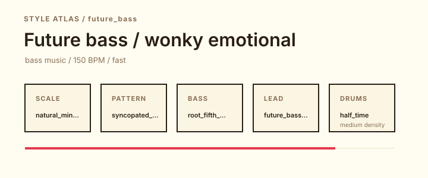
Future bass / wonky emotionalfuture_bass
Drums: half_time / medium / swing 0%
A reference canon around bright detuned chords, syncopated drops, vocal color, and emotional bass-music harmony.
Producer documentation / Standard MIDI idea generator
Generate MIDI ideas, drag them into your DAW, choose sounds you love, and iterate. jamburgr is a MIDI-only Python instrument for chord, bass, pad, lead, optional drum, compact arrangement, and full-song producer sketches shaped by styles, Roman numerals, voicings, and rhythmic patterns.
python jamburgr.py --config jamburgr_example_recipe.md --explain-onlyPick a key and style, generate a pack, then audition the MIDI on your own instruments. jamburgr does not generate audio; its optional drum/percussion lanes are editable General MIDI notes for your own kits, racks, samplers, or hardware.
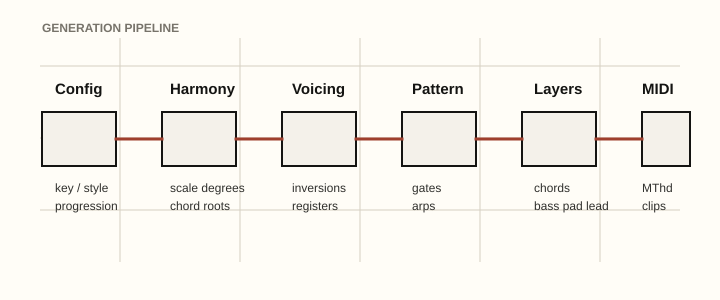
python jamburgr.pypython jamburgr.py --key "F# minor" --chord minor_add9 --style future_bass --output-mode packpython jamburgr.py --config my_song.mdUse jamburgr when you want a harmonic seed, a layer stack, a drum scaffold, or a sectioned MIDI sketch. Bring your own samples, synth patches, drum sounds, and taste; the generated files are meant to be edited, arranged, and made yours.
The atlas turns jamburgr's style presets into a learning surface: each style shows tempo, scale, groove feel, harmonic habits, layer roles, drum preset/density/swing, General MIDI routing guidance, reference canon context, producer exercises, and source IDs.

Future bass / wonky emotionalfuture_bass
Drums: half_time / medium / swing 0%
A reference canon around bright detuned chords, syncopated drops, vocal color, and emotional bass-music harmony.
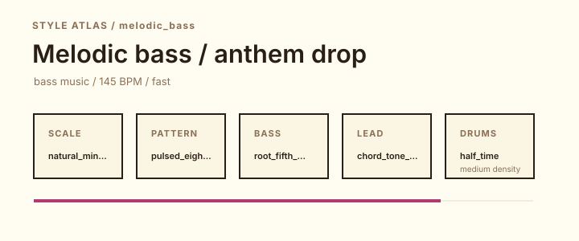
Melodic bass / anthem dropmelodic_bass
Drums: half_time / medium / swing 0%
A reference canon for emotional drops, minor-key lift, huge chords, and vocal-led bass arrangements.
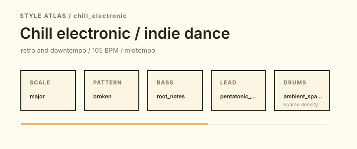
Chill electronic / indie dancechill_electronic
Drums: ambient_sparse / sparse / swing 12%
A reference canon for warm festival-sunset harmony, organic percussion, wide pads, and melodic restraint.
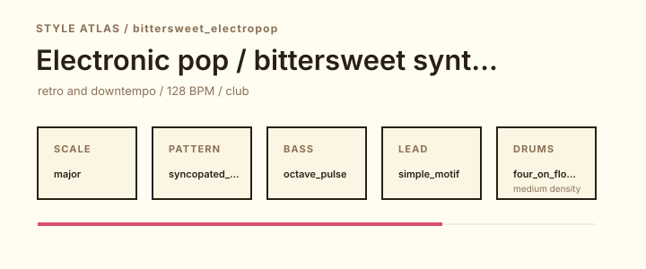
Electronic pop / bittersweet synth chordsbittersweet_electropop
Drums: four_on_floor / medium / swing 0%
A reference canon for bright synthetic harmony, wistful toplines, and pop-sized electronic chord arcs.
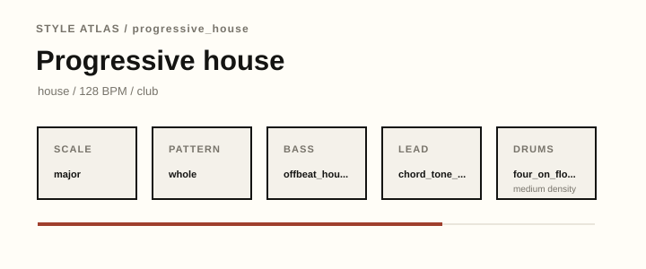
Progressive houseprogressive_house
Drums: four_on_floor / medium / swing 0%
A reference canon for long builds, uplifting cadences, broad saw pads, and DJ-friendly harmonic arcs.
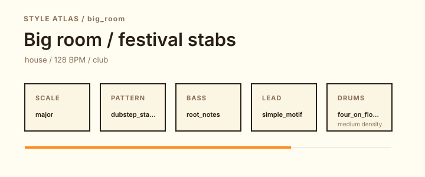
Big room / festival stabsbig_room
Drums: four_on_floor / medium / swing 0%
A reference canon for simple root motion, oversized stabs, stripped breakdowns, and high-impact festival drops.
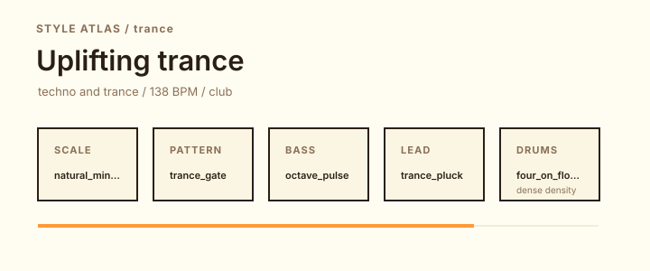
Uplifting trancetrance
Drums: four_on_floor / dense / swing 0%
A reference canon for gated arps, emotional minor movement, long breakdowns, and euphoric lead resolution.
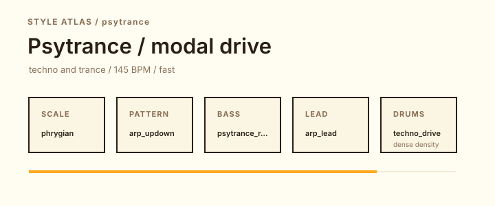
Psytrance / modal drivepsytrance
Drums: techno_drive / dense / swing 0%
A reference canon for modal drive, fast repetitive bass, resonant synth motion, and hypnotic phrase design.
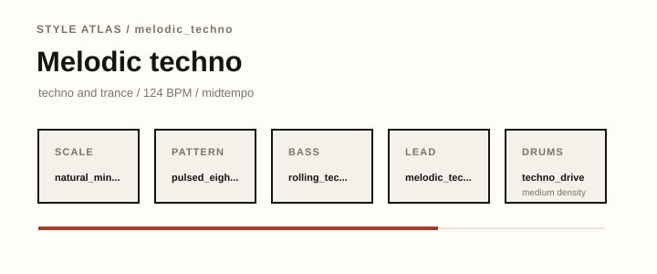
Melodic technomelodic_techno
Drums: techno_drive / medium / swing 0%
A reference canon for dark arps, spacious minor harmony, restrained hooks, and long club tension.
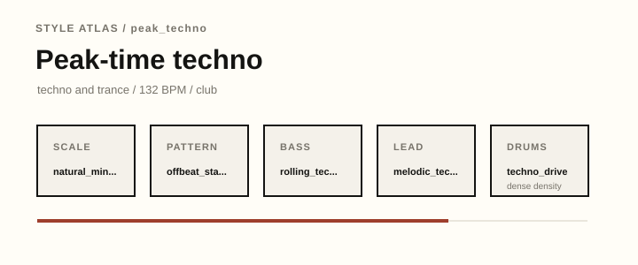
Peak-time technopeak_techno
Drums: techno_drive / dense / swing 0%
A reference canon for pressure, repetition, distorted drums, and concise harmonic cells.
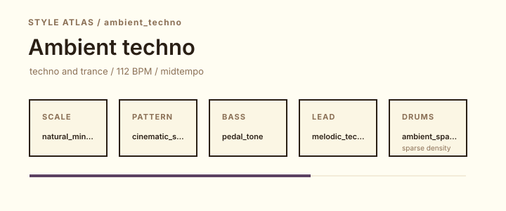
Ambient technoambient_techno
Drums: ambient_sparse / sparse / swing 8%
A reference canon for spacious techno structure, pads, dub delay, and low-pressure hypnotic movement.
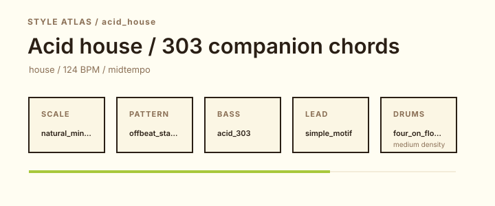
Acid house / 303 companion chordsacid_house
Drums: four_on_floor / medium / swing 0%
A reference canon for TB-303 squelch, simple minor cells, four-on-the-floor pressure, and raw machine funk.
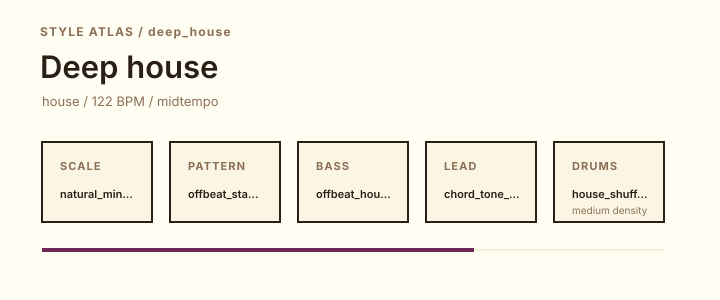
Deep housedeep_house
Drums: house_shuffle / medium / swing 18%
A reference canon for warm chords, jazz/soul color, restrained drums, and basslines that support mood.
tech_house
Drums: house_shuffle / medium / swing 10%
A reference canon for stripped grooves, repetitive hooks, clipped stabs, and basslines built for DJ momentum.
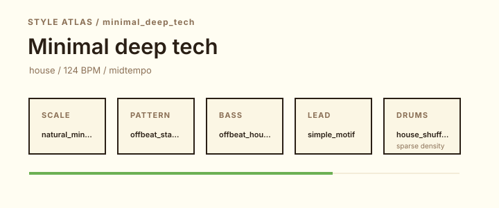
Minimal deep techminimal_deep_tech
Drums: house_shuffle / sparse / swing 14%
A reference canon for reduced chord cells, sub pressure, microtimed percussion, and low-slung club hypnosis.
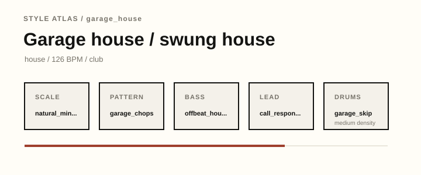
Garage house / swung housegarage_house
Drums: garage_skip / medium / swing 34%
A reference canon for swung chord chops, vocal-house feel, warm keys, and shuffle-friendly bass.
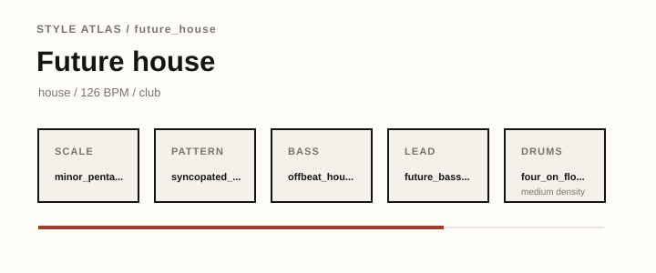
Future housefuture_house
Drums: four_on_floor / medium / swing 0%
A reference canon for bouncy bass stabs, bright hooks, and compressed modern house drops.
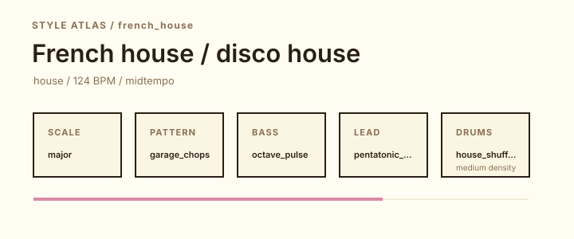
French house / disco housefrench_house
Drums: house_shuffle / medium / swing 18%
A reference canon for filtered disco loops, major-seventh color, chunky sidechain, and sample-chop repetition.
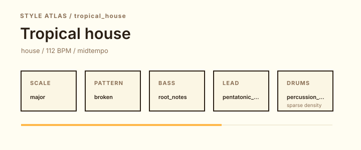
Tropical housetropical_house
Drums: percussion_pulse / sparse / swing 14%
A reference canon for relaxed major-key progressions, plucks, marimba-like tones, and soft dance-pop energy.
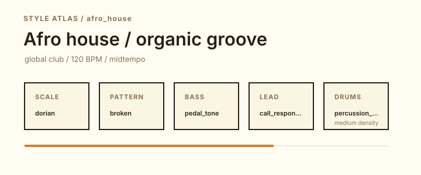
Afro house / organic grooveafro_house
Drums: percussion_pulse / medium / swing 18%
A reference canon for modal house grooves, percussion layers, deep bass, and call-response melodic gestures.
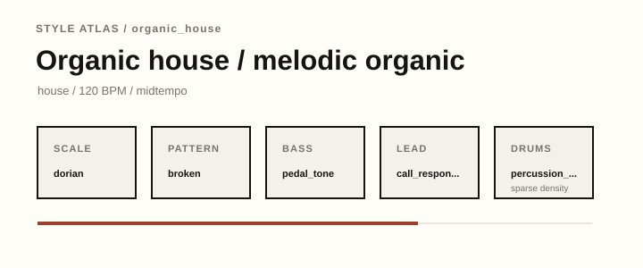
Organic house / melodic organicorganic_house
Drums: percussion_pulse / sparse / swing 18%
A reference canon for spacious percussion, modal harmony, acoustic color, and gentle dance-floor movement.
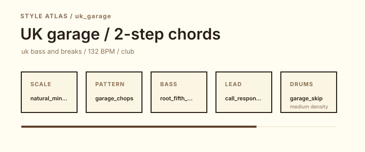
UK garage / 2-step chordsuk_garage
Drums: garage_skip / medium / swing 36%
A reference canon for shuffle, chopped chords, sub pressure, and vocal-house swing adapted for UK sound systems.
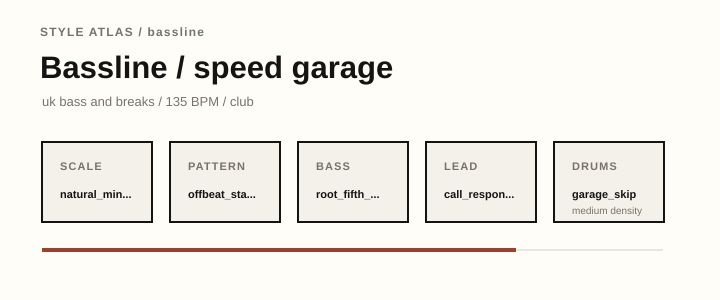
Bassline / speed garagebassline
Drums: garage_skip / medium / swing 30%
A reference canon for bouncy sub riffs, clipped chords, garage swing, and dark club hooks.
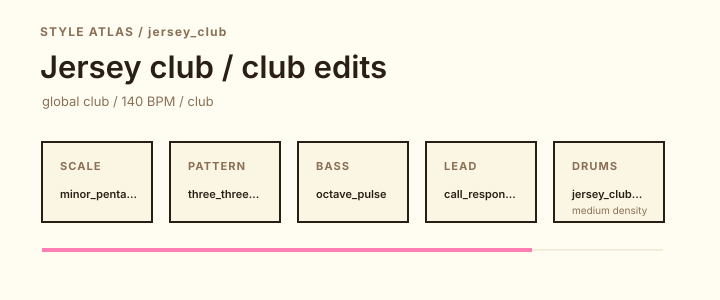
Jersey club / club editsjersey_club
Drums: club_triplet / medium / swing 0%
A reference canon for kick-triplet bounce, short edits, sparse harmony, and chant-like call-response.
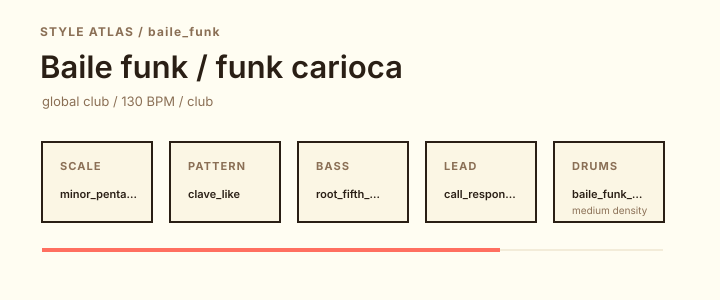
Baile funk / funk cariocabaile_funk
Drums: percussion_pulse / medium / swing 8%
A reference canon for percussive loops, call-response energy, sparse harmonic cells, and vocal-led club momentum.
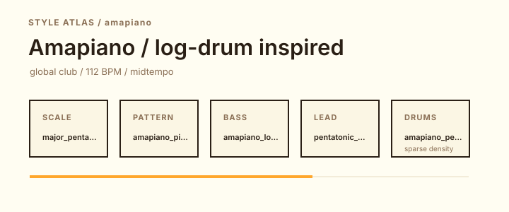
Amapiano / log-drum inspiredamapiano
Drums: percussion_pulse / sparse / swing 16%
A reference canon for log-drum bass, spacious piano chords, rolling percussion, and relaxed long-form groove.
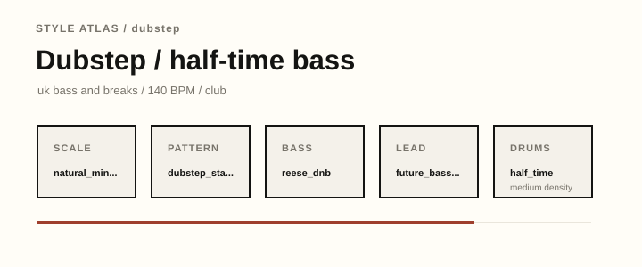
Dubstep / half-time bassdubstep
Drums: half_time / medium / swing 0%
A reference canon for half-time drums, sub pressure, sparse chords, dub space, and bass-response writing.
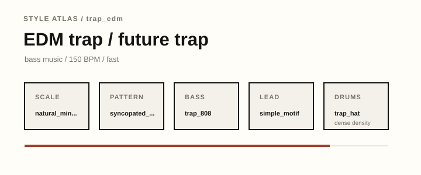
EDM trap / future traptrap_edm
Drums: trap_hat / dense / swing 0%
A reference canon for 808 bass, brass-like stabs, halftime drops, snare rolls, and sparse minor harmony.
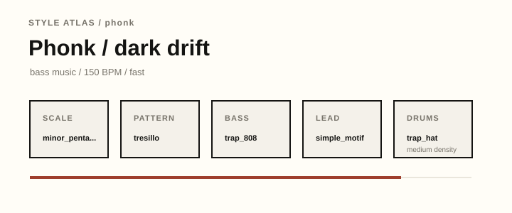
Phonk / dark driftphonk
Drums: trap_hat / medium / swing 0%
A reference canon for Memphis-rap atmosphere, cowbell hooks, 808 pressure, and minor-pentatonic loops.
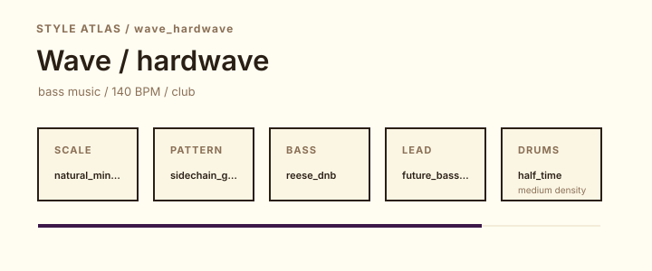
Wave / hardwavewave_hardwave
Drums: half_time / medium / swing 0%
A reference canon for wide minor harmony, reverb-heavy bass, cinematic pads, and trap-adjacent drums.
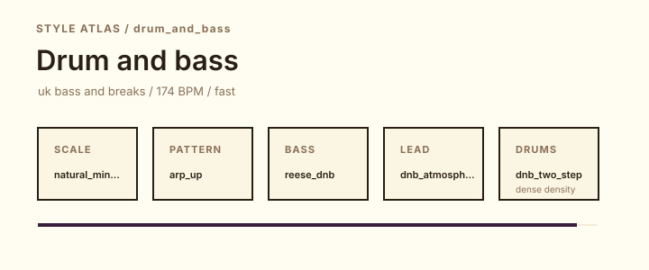
Drum and bassdrum_and_bass
Drums: dnb_two_step / dense / swing 0%
A reference canon for fast breakbeats, Reese bass, high energy, and cinematic or rave-influenced harmonic beds.
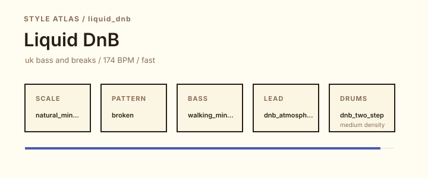
Liquid DnBliquid_dnb
Drums: dnb_two_step / medium / swing 4%
A reference canon for soulful pads, jazz-influenced harmony, rolling drums, and warm bass movement.
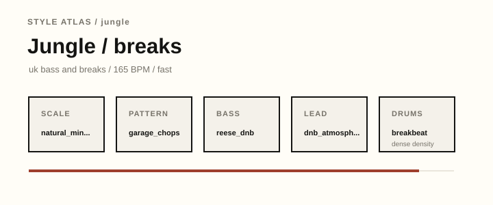
Jungle / breaksjungle
Drums: breakbeat / dense / swing 16%
A reference canon for chopped breaks, reggae/dub pressure, rave stabs, and high-speed bass movement.
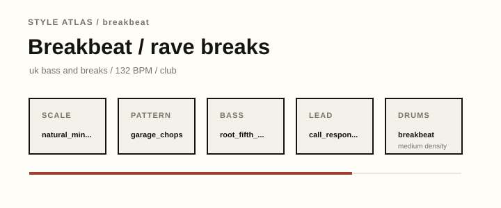
Breakbeat / rave breaksbreakbeat
Drums: breakbeat / medium / swing 18%
A reference canon for syncopated breaks, rave energy, funky bass, and chord stabs that leave room for drums.
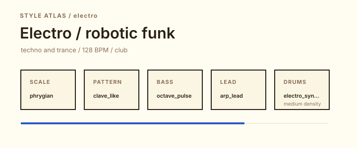
Electro / robotic funkelectro
Drums: electro_syncopated / medium / swing 0%
A reference canon for robotic syncopation, vocoder-like futurism, 808 drums, and modal funk cells.
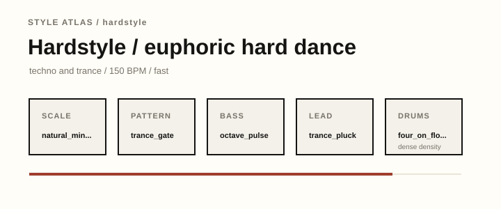
Hardstyle / euphoric hard dancehardstyle
Drums: four_on_floor / dense / swing 0%
A reference canon for distorted kicks, euphoric minor leads, gated energy, and dramatic breakdowns.
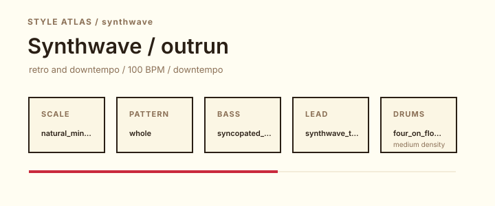
Synthwave / outrunsynthwave
Drums: four_on_floor / medium / swing 0%
A reference canon for retro-futurist minor harmony, steady arps, neon pads, and drum-machine nostalgia.
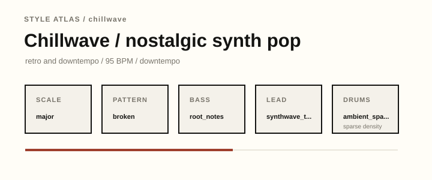
Chillwave / nostalgic synth popchillwave
Drums: ambient_sparse / sparse / swing 16%
A reference canon for hazy synth-pop harmony, softened drums, tape-like color, and nostalgic repetition.
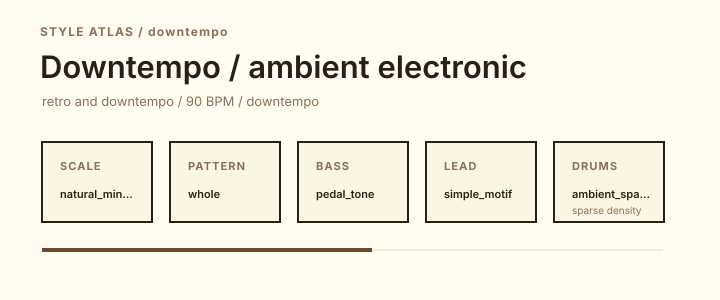
Downtempo / ambient electronicdowntempo
Drums: ambient_sparse / sparse / swing 12%
A reference canon for slow grooves, spacious harmony, atmospheric texture, and headphone-friendly arrangement.
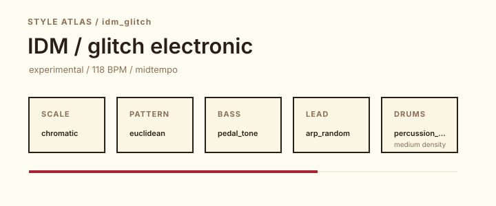
IDM / glitch electronicidm_glitch
Drums: percussion_pulse / medium / swing 10%
A reference canon for asymmetrical rhythm, chromatic harmony, digital artifacts, and detailed sound editing.
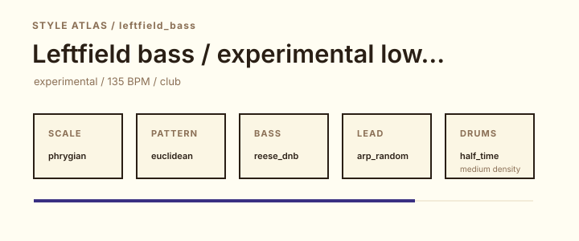
Leftfield bass / experimental low-endleftfield_bass
Drums: half_time / medium / swing 0%
A reference canon for heavy low-end, abstract rhythm, dark modal color, and sound-design-forward arrangement.
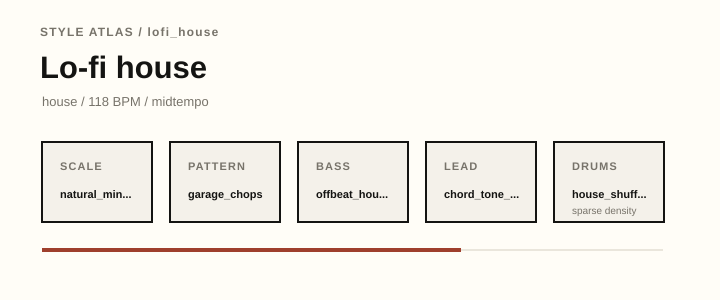
Lo-fi houselofi_house
Drums: house_shuffle / sparse / swing 24%
A reference canon for dusty chords, tape-like texture, restrained drums, and emotionally direct loop writing.
No styles match those filters.
| Style | Name | Era | BPM | Family |
|---|---|---|---|---|
future_bass | Future bass / wonky emotional | 2010s-present | 150 | bass music |
melodic_bass | Melodic bass / anthem drop | 2010s-present | 145 | bass music |
chill_electronic | Chill electronic / indie dance | 2000s-present | 105 | retro and downtempo |
bittersweet_electropop | Electronic pop / bittersweet synth chords | 2000s-present | 128 | retro and downtempo |
progressive_house | Progressive house | 1990s-present | 128 | house |
big_room | Big room / festival stabs | 2010s-present | 128 | house |
trance | Uplifting trance | 1990s-present | 138 | techno and trance |
psytrance | Psytrance / modal drive | 1990s-present | 145 | techno and trance |
melodic_techno | Melodic techno | 2000s-present | 124 | techno and trance |
peak_techno | Peak-time techno | 1990s-present | 132 | techno and trance |
ambient_techno | Ambient techno | 1990s-present | 112 | techno and trance |
acid_house | Acid house / 303 companion chords | 1980s-present | 124 | house |
deep_house | Deep house | 1980s-present | 122 | house |
tech_house | Tech house | 1990s-present | 126 | house |
minimal_deep_tech | Minimal deep tech | 2000s-present | 124 | house |
garage_house | Garage house / swung house | 1990s-present | 126 | house |
future_house | Future house | 2010s-present | 126 | house |
french_house | French house / disco house | 1990s-present | 124 | house |
tropical_house | Tropical house | 2010s-present | 112 | house |
afro_house | Afro house / organic groove | 2000s-present | 120 | global club |
organic_house | Organic house / melodic organic | 2010s-present | 120 | house |
uk_garage | UK garage / 2-step chords | 1990s-present | 132 | uk bass and breaks |
bassline | Bassline / speed garage | 2000s-present | 135 | uk bass and breaks |
jersey_club | Jersey club / club edits | 2000s-present | 140 | global club |
baile_funk | Baile funk / funk carioca | 1980s-present | 130 | global club |
amapiano | Amapiano / log-drum inspired | 2010s-present | 112 | global club |
dubstep | Dubstep / half-time bass | 2000s-present | 140 | uk bass and breaks |
trap_edm | EDM trap / future trap | 2010s-present | 150 | bass music |
phonk | Phonk / dark drift | 2010s-present | 150 | bass music |
wave_hardwave | Wave / hardwave | 2010s-present | 140 | bass music |
drum_and_bass | Drum and bass | 1990s-present | 174 | uk bass and breaks |
liquid_dnb | Liquid DnB | 1990s-present | 174 | uk bass and breaks |
jungle | Jungle / breaks | 1990s-present | 165 | uk bass and breaks |
breakbeat | Breakbeat / rave breaks | 1980s-present | 132 | uk bass and breaks |
electro | Electro / robotic funk | 1980s-present | 128 | techno and trance |
hardstyle | Hardstyle / euphoric hard dance | 2000s-present | 150 | techno and trance |
synthwave | Synthwave / outrun | 2000s-present | 100 | retro and downtempo |
chillwave | Chillwave / nostalgic synth pop | 2000s-present | 95 | retro and downtempo |
downtempo | Downtempo / ambient electronic | 1990s-present | 90 | retro and downtempo |
idm_glitch | IDM / glitch electronic | 1990s-present | 118 | experimental |
leftfield_bass | Leftfield bass / experimental low-end | 2000s-present | 135 | experimental |
lofi_house | Lo-fi house | 2010s-present | 118 | house |
| Style | Geography |
|---|---|
future_bass | UK and North American bass scenes, online producer communities, and festival bass stages. |
melodic_bass | UK and North American bass scenes, online producer communities, and festival bass stages. |
chill_electronic | Internet-era retro scenes, North American indie electronic scenes, European synth-pop lineages, and ambient listening rooms. |
bittersweet_electropop | Internet-era retro scenes, North American indie electronic scenes, European synth-pop lineages, and ambient listening rooms. |
progressive_house | Chicago, New York, London, Paris, Ibiza, South Africa, and global club circuits. |
big_room | Chicago, New York, London, Paris, Ibiza, South Africa, and global club circuits. |
trance | Detroit, Berlin, Frankfurt, Goa, the Netherlands, and international warehouse/festival scenes. |
psytrance | Detroit, Berlin, Frankfurt, Goa, the Netherlands, and international warehouse/festival scenes. |
melodic_techno | Detroit, Berlin, Frankfurt, Goa, the Netherlands, and international warehouse/festival scenes. |
peak_techno | Detroit, Berlin, Frankfurt, Goa, the Netherlands, and international warehouse/festival scenes. |
ambient_techno | Detroit, Berlin, Frankfurt, Goa, the Netherlands, and international warehouse/festival scenes. |
acid_house | Chicago, New York, London, Paris, Ibiza, South Africa, and global club circuits. |
deep_house | Chicago, New York, London, Paris, Ibiza, South Africa, and global club circuits. |
tech_house | Chicago, New York, London, Paris, Ibiza, South Africa, and global club circuits. |
minimal_deep_tech | Chicago, New York, London, Paris, Ibiza, South Africa, and global club circuits. |
garage_house | Chicago, New York, London, Paris, Ibiza, South Africa, and global club circuits. |
future_house | Chicago, New York, London, Paris, Ibiza, South Africa, and global club circuits. |
french_house | Chicago, New York, London, Paris, Ibiza, South Africa, and global club circuits. |
tropical_house | Chicago, New York, London, Paris, Ibiza, South Africa, and global club circuits. |
afro_house | Regional club scenes in Brazil, South Africa, New Jersey, and globally connected dance networks. |
organic_house | Chicago, New York, London, Paris, Ibiza, South Africa, and global club circuits. |
uk_garage | London, Bristol, Sheffield, Manchester, and wider UK sound-system and rave networks. |
bassline | London, Bristol, Sheffield, Manchester, and wider UK sound-system and rave networks. |
jersey_club | Regional club scenes in Brazil, South Africa, New Jersey, and globally connected dance networks. |
baile_funk | Regional club scenes in Brazil, South Africa, New Jersey, and globally connected dance networks. |
amapiano | Regional club scenes in Brazil, South Africa, New Jersey, and globally connected dance networks. |
dubstep | London, Bristol, Sheffield, Manchester, and wider UK sound-system and rave networks. |
trap_edm | UK and North American bass scenes, online producer communities, and festival bass stages. |
phonk | UK and North American bass scenes, online producer communities, and festival bass stages. |
wave_hardwave | UK and North American bass scenes, online producer communities, and festival bass stages. |
drum_and_bass | London, Bristol, Sheffield, Manchester, and wider UK sound-system and rave networks. |
liquid_dnb | London, Bristol, Sheffield, Manchester, and wider UK sound-system and rave networks. |
jungle | London, Bristol, Sheffield, Manchester, and wider UK sound-system and rave networks. |
breakbeat | London, Bristol, Sheffield, Manchester, and wider UK sound-system and rave networks. |
electro | Detroit, Berlin, Frankfurt, Goa, the Netherlands, and international warehouse/festival scenes. |
hardstyle | Detroit, Berlin, Frankfurt, Goa, the Netherlands, and international warehouse/festival scenes. |
synthwave | Internet-era retro scenes, North American indie electronic scenes, European synth-pop lineages, and ambient listening rooms. |
chillwave | Internet-era retro scenes, North American indie electronic scenes, European synth-pop lineages, and ambient listening rooms. |
downtempo | Internet-era retro scenes, North American indie electronic scenes, European synth-pop lineages, and ambient listening rooms. |
idm_glitch | UK, North American, European, and online experimental electronic communities. |
leftfield_bass | UK, North American, European, and online experimental electronic communities. |
lofi_house | Chicago, New York, London, Paris, Ibiza, South Africa, and global club circuits. |
Future bass grew from post-dubstep, trap, wonky, and internet beat scenes into a chord-forward festival and streaming-era language.
natural_minorwidesyncopated_padsroot_fifth_octave @ octave 1high_shimmer @ octave 5future_bass_chop @ octave 5medium / mediumhalf_timemedium0%Half-time — Wide snare spacing and downbeat weight for bass music, dubstep, and wave/hardwave.
Choose a heavy kit or sampler lane, then tune kick/snare length around the bass line.
Density medium. Sparse leaves lots of room; medium adds hats; dense adds extra top movement and impact. Swing hint: 0%. Drum export is General MIDI only; enable it with generate_drums: true.
Use this as a practical Ableton-friendly starting point, then choose your own sounds and edit the MIDI for the track you are making.
polyphonic chord synth
Clear harmonic color that supports the groove without covering bass, lead, or drums.
clean mono bass synth
Centered low-end motion that makes the generated roots feel intentional and editable.
wide sustained pad synth
High, bright support that can be softened with filter and reverb if it competes with the lead.
short pluck or chopped sampler layer
Editable top-line idea that should guide the sketch, not become a finished melody by default.
General MIDI drum instrument or Drum Rack
half time drum scaffold at medium density with 0% swing for DAW editing.
DAW samplers, wavetable synths, Roland TR-808 lineage, sidechain compressors
detuned saw layers, pitch envelopes, formant or vocal resampling, sub layering, wide unison modulation
intro atmosphere, pre-drop reduction, impact-led drops, call-and-response chord hooks
sidechain ducking, bright reverb throws, parallel saturation, wide stereo chorusing
Melodic bass connects dubstep's half-time weight with trance-sized harmony, pop toplines, and cinematic breakdowns.
natural_minorwidepulsed_eighthsroot_fifth_octave @ octave 1slow_wide @ octave 4chord_tone_lead @ octave 5medium / mediumhalf_timemedium0%Half-time — Wide snare spacing and downbeat weight for bass music, dubstep, and wave/hardwave.
Choose a heavy kit or sampler lane, then tune kick/snare length around the bass line.
Density medium. Sparse leaves lots of room; medium adds hats; dense adds extra top movement and impact. Swing hint: 0%. Drum export is General MIDI only; enable it with generate_drums: true.
Use this as a practical Ableton-friendly starting point, then choose your own sounds and edit the MIDI for the track you are making.
polyphonic chord synth
Clear harmonic color that supports the groove without covering bass, lead, or drums.
clean mono bass synth
Centered low-end motion that makes the generated roots feel intentional and editable.
wide sustained pad synth
Wide sustained tone for mood, depth, and section contrast.
simple motif or chord-tone lead
Editable top-line idea that should guide the sketch, not become a finished melody by default.
General MIDI drum instrument or Drum Rack
half time drum scaffold at medium density with 0% swing for DAW editing.
DAW samplers, wavetable synths, Roland TR-808 lineage, sidechain compressors
detuned saw layers, pitch envelopes, formant or vocal resampling, sub layering, wide unison modulation
intro atmosphere, pre-drop reduction, impact-led drops, call-and-response chord hooks
sidechain ducking, bright reverb throws, parallel saturation, wide stereo chorusing
This lane blends downtempo, indie electronic, trip-hop, and melodic house-adjacent writing into accessible song sketches.
majoropenbrokenroot_notes @ octave 1slow_wide @ octave 4pentatonic_lead @ octave 5sparse / highambient_sparsesparse12%Ambient sparse — Minimal percussive markers for chill, ambient techno, downtempo, and hazy pop lanes.
Route to soft percussion, foley, or a muted kit and keep velocities low.
Density sparse. Sparse is nearly empty; medium adds small markers; dense adds a quiet shaker bed. Swing hint: 12%. Drum export is General MIDI only; enable it with generate_drums: true.
Use this as a practical Ableton-friendly starting point, then choose your own sounds and edit the MIDI for the track you are making.
warm poly synth or analog-style keys
Clear harmonic color that supports the groove without covering bass, lead, or drums.
clean mono bass synth
Centered low-end motion that makes the generated roots feel intentional and editable.
wide sustained pad synth
Wide sustained tone for mood, depth, and section contrast.
simple motif or chord-tone lead
Editable top-line idea that should guide the sketch, not become a finished melody by default.
General MIDI drum instrument or Drum Rack
ambient sparse drum scaffold at sparse density with 12% swing for DAW editing.
Roland Juno lineage, Yamaha DX lineage, Roland TR-808 lineage, cassette or tape processors
chorused pads, slow filter envelopes, soft detune, noise layers, tape-style modulation
long intros, melodic toplines, nostalgic breakdowns, slow pad reveals
chorus, ensemble, tape delay, plate reverb, gentle saturation
This lane frames electropop and internet-era synth songwriting as usable harmonic study material for original MIDI sketches.
majorwidesyncopated_padsoctave_pulse @ octave 1top_note_melody @ octave 4simple_motif @ octave 5medium / mediumfour_on_floormedium0%Four-on-the-floor — Steady kick pulse for house, trance, synthwave, and other grid-forward ideas.
Drop the lane onto a General MIDI kit or Drum Rack, then choose a kick, clap, and hat palette that fits the track.
Density medium. Sparse keeps kick/clap shape; medium adds offbeat hats; dense adds busier hats and lift. Swing hint: 0%. Drum export is General MIDI only; enable it with generate_drums: true.
Use this as a practical Ableton-friendly starting point, then choose your own sounds and edit the MIDI for the track you are making.
warm poly synth or analog-style keys
Clear harmonic color that supports the groove without covering bass, lead, or drums.
clean mono bass synth
Centered low-end motion that makes the generated roots feel intentional and editable.
wide sustained pad synth
Wide sustained tone for mood, depth, and section contrast.
simple motif or chord-tone lead
Small original motif that answers the rhythm section and leaves room for future vocals or hooks.
General MIDI drum instrument or Drum Rack
four on floor drum scaffold at medium density with 0% swing for DAW editing.
Roland Juno lineage, Yamaha DX lineage, Roland TR-808 lineage, cassette or tape processors
chorused pads, slow filter envelopes, soft detune, noise layers, tape-style modulation
long intros, melodic toplines, nostalgic breakdowns, slow pad reveals
chorus, ensemble, tape delay, plate reverb, gentle saturation
Progressive house developed through club culture, then became a major festival language through melodic breakdowns and large drops.
majoropenwholeoffbeat_house @ octave 1sustain_chords @ octave 4chord_tone_lead @ octave 5medium / mediumfour_on_floormedium0%Four-on-the-floor — Steady kick pulse for house, trance, synthwave, and other grid-forward ideas.
Drop the lane onto a General MIDI kit or Drum Rack, then choose a kick, clap, and hat palette that fits the track.
Density medium. Sparse keeps kick/clap shape; medium adds offbeat hats; dense adds busier hats and lift. Swing hint: 0%. Drum export is General MIDI only; enable it with generate_drums: true.
Use this as a practical Ableton-friendly starting point, then choose your own sounds and edit the MIDI for the track you are making.
short filtered chord stab instrument
Clear harmonic color that supports the groove without covering bass, lead, or drums.
short mono club bass
Centered low-end motion that makes the generated roots feel intentional and editable.
wide sustained pad synth
Wide sustained tone for mood, depth, and section contrast.
simple motif or chord-tone lead
Editable top-line idea that should guide the sketch, not become a finished melody by default.
General MIDI drum instrument or Drum Rack
four on floor drum scaffold at medium density with 0% swing for DAW editing.
Roland TR-909 lineage, Roland TR-808 lineage, Akai-style samplers, MIDI chord modules
filter envelopes, sample filtering, short amp envelopes, chorused keys, subtractive bass patches
DJ-friendly intros, incremental mutes, breakdowns, drop returns, loop variation
bus compression, delay sends, filtered transitions, spring or plate reverb
Big room house emphasized minimal harmonic information and maximum sound-system contrast during the 2010s festival boom.
majoropendubstep_stabsroot_notes @ octave 1sustain_chords @ octave 4simple_motif @ octave 5sparse / highfour_on_floormedium0%Four-on-the-floor — Steady kick pulse for house, trance, synthwave, and other grid-forward ideas.
Drop the lane onto a General MIDI kit or Drum Rack, then choose a kick, clap, and hat palette that fits the track.
Density medium. Sparse keeps kick/clap shape; medium adds offbeat hats; dense adds busier hats and lift. Swing hint: 0%. Drum export is General MIDI only; enable it with generate_drums: true.
Use this as a practical Ableton-friendly starting point, then choose your own sounds and edit the MIDI for the track you are making.
short filtered chord stab instrument
Clear harmonic color that supports the groove without covering bass, lead, or drums.
clean mono bass synth
Centered low-end motion that makes the generated roots feel intentional and editable.
wide sustained pad synth
Wide sustained tone for mood, depth, and section contrast.
simple motif or chord-tone lead
Small original motif that answers the rhythm section and leaves room for future vocals or hooks.
General MIDI drum instrument or Drum Rack
four on floor drum scaffold at medium density with 0% swing for DAW editing.
Roland TR-909 lineage, Roland TR-808 lineage, Akai-style samplers, MIDI chord modules
filter envelopes, sample filtering, short amp envelopes, chorused keys, subtractive bass patches
DJ-friendly intros, incremental mutes, breakdowns, drop returns, loop variation
bus compression, delay sends, filtered transitions, spring or plate reverb
Trance grew from European club scenes around hypnotic repetition, extended builds, and high-register melodic release.
natural_minoropentrance_gateoctave_pulse @ octave 1high_shimmer @ octave 5trance_pluck @ octave 5dense / highfour_on_floordense0%Four-on-the-floor — Steady kick pulse for house, trance, synthwave, and other grid-forward ideas.
Drop the lane onto a General MIDI kit or Drum Rack, then choose a kick, clap, and hat palette that fits the track.
Density dense. Sparse keeps kick/clap shape; medium adds offbeat hats; dense adds busier hats and lift. Swing hint: 0%. Drum export is General MIDI only; enable it with generate_drums: true.
Use this as a practical Ableton-friendly starting point, then choose your own sounds and edit the MIDI for the track you are making.
polyphonic chord synth
Clear harmonic color that supports the groove without covering bass, lead, or drums.
clean mono bass synth
Centered low-end motion that makes the generated roots feel intentional and editable.
wide sustained pad synth
High, bright support that can be softened with filter and reverb if it competes with the lead.
pluck or arpeggiated lead synth
Bright, tempo-aware pluck motion that can be automated or muted across sections.
General MIDI drum instrument or Drum Rack
four on floor drum scaffold at dense density with 0% swing for DAW editing.
Roland JP-8000 supersaw lineage, Access Virus-style virtual analog, Roland TR-909 lineage, tempo-synced gate effects
supersaw detune, tempo-synced gates, long reverb tails, ping-pong delay, filter-open builds
long drum-led intro, breakdown pad reveal, snare-roll build, lead return after silence, extended outro for DJ mixing
sidechain compression, wide chorus, large hall reverb, tempo delay throws, high-pass filter automation
Psytrance connects Goa trance, psychedelic festival culture, and highly sequenced electronic production.
phrygianclosedarp_updownrolling_techno @ octave 1root_drone @ octave 4arp_lead @ octave 5dense / hightechno_drivedense0%Techno drive — Motorik kick pressure and precise machine hats for techno and psytrance lanes.
Route to a tight electronic kit, then tune kick length and hat decay before arranging.
Density dense. Sparse is kick-led; medium adds hats and claps; dense pushes the top-end machine pulse. Swing hint: 0%. Drum export is General MIDI only; enable it with generate_drums: true.
Use this as a practical Ableton-friendly starting point, then choose your own sounds and edit the MIDI for the track you are making.
polyphonic chord synth
Clear harmonic color that supports the groove without covering bass, lead, or drums.
short mono club bass
Centered low-end motion that makes the generated roots feel intentional and editable.
drone or sustained atmosphere instrument
Slow, steady harmonic bed that adds scale context without stealing rhythmic focus.
pluck or arpeggiated lead synth
Bright, tempo-aware pluck motion that can be automated or muted across sections.
General MIDI drum instrument or Drum Rack
techno drive drum scaffold at dense density with 0% swing for DAW editing.
Roland TR-909 lineage, Roland TB-303 lineage, step sequencers, analog monosynths
resonant filter sweeps, tempo-synced gates, acid slides, supersaw detune, FM plucks
long builds, filter-open tension, drum-led breakdowns, return-to-groove drops
tempo delay, large hall reverb, drive saturation, sidechain compression
Melodic techno sits between techno repetition, progressive-house melody, and cinematic sound design.
natural_minoropenpulsed_eighthsrolling_techno @ octave 1evolving_inversions @ octave 4melodic_techno_pluck @ octave 5medium / hightechno_drivemedium0%Techno drive — Motorik kick pressure and precise machine hats for techno and psytrance lanes.
Route to a tight electronic kit, then tune kick length and hat decay before arranging.
Density medium. Sparse is kick-led; medium adds hats and claps; dense pushes the top-end machine pulse. Swing hint: 0%. Drum export is General MIDI only; enable it with generate_drums: true.
Use this as a practical Ableton-friendly starting point, then choose your own sounds and edit the MIDI for the track you are making.
polyphonic chord synth
Clear harmonic color that supports the groove without covering bass, lead, or drums.
short mono club bass
Centered low-end motion that makes the generated roots feel intentional and editable.
wide sustained pad synth
Wide sustained tone for mood, depth, and section contrast.
pluck or arpeggiated lead synth
Bright, tempo-aware pluck motion that can be automated or muted across sections.
General MIDI drum instrument or Drum Rack
techno drive drum scaffold at medium density with 0% swing for DAW editing.
Roland TR-909 lineage, Roland TB-303 lineage, step sequencers, analog monosynths
resonant filter sweeps, tempo-synced gates, acid slides, supersaw detune, FM plucks
long builds, filter-open tension, drum-led breakdowns, return-to-groove drops
tempo delay, large hall reverb, drive saturation, sidechain compression
Peak-time techno focuses on high-energy club utility, drawing from Detroit, European warehouse, and modern festival techno.
natural_minorclosedoffbeat_stabsrolling_techno @ octave 1root_drone @ octave 4melodic_techno_pluck @ octave 5medium / hightechno_drivedense0%Techno drive — Motorik kick pressure and precise machine hats for techno and psytrance lanes.
Route to a tight electronic kit, then tune kick length and hat decay before arranging.
Density dense. Sparse is kick-led; medium adds hats and claps; dense pushes the top-end machine pulse. Swing hint: 0%. Drum export is General MIDI only; enable it with generate_drums: true.
Use this as a practical Ableton-friendly starting point, then choose your own sounds and edit the MIDI for the track you are making.
polyphonic chord synth
Clear harmonic color that supports the groove without covering bass, lead, or drums.
short mono club bass
Centered low-end motion that makes the generated roots feel intentional and editable.
drone or sustained atmosphere instrument
Slow, steady harmonic bed that adds scale context without stealing rhythmic focus.
pluck or arpeggiated lead synth
Bright, tempo-aware pluck motion that can be automated or muted across sections.
General MIDI drum instrument or Drum Rack
techno drive drum scaffold at dense density with 0% swing for DAW editing.
Roland TR-909 lineage, Roland TB-303 lineage, step sequencers, analog monosynths
resonant filter sweeps, tempo-synced gates, acid slides, supersaw detune, FM plucks
long builds, filter-open tension, drum-led breakdowns, return-to-groove drops
tempo delay, large hall reverb, drive saturation, sidechain compression
Ambient techno merges techno's pulse with ambient listening-space design and dub-influenced depth.
natural_minoropencinematic_swellspedal_tone @ octave 1evolving_inversions @ octave 4melodic_techno_pluck @ octave 5sparse / highambient_sparsesparse8%Ambient sparse — Minimal percussive markers for chill, ambient techno, downtempo, and hazy pop lanes.
Route to soft percussion, foley, or a muted kit and keep velocities low.
Density sparse. Sparse is nearly empty; medium adds small markers; dense adds a quiet shaker bed. Swing hint: 8%. Drum export is General MIDI only; enable it with generate_drums: true.
Use this as a practical Ableton-friendly starting point, then choose your own sounds and edit the MIDI for the track you are making.
polyphonic chord synth
Clear harmonic color that supports the groove without covering bass, lead, or drums.
clean mono bass synth
Centered low-end motion that makes the generated roots feel intentional and editable.
wide sustained pad synth
Wide sustained tone for mood, depth, and section contrast.
pluck or arpeggiated lead synth
Bright, tempo-aware pluck motion that can be automated or muted across sections.
General MIDI drum instrument or Drum Rack
ambient sparse drum scaffold at sparse density with 8% swing for DAW editing.
Roland TR-909 lineage, Roland TB-303 lineage, step sequencers, analog monosynths
resonant filter sweeps, tempo-synced gates, acid slides, supersaw detune, FM plucks
long builds, filter-open tension, drum-led breakdowns, return-to-groove drops
tempo delay, large hall reverb, drive saturation, sidechain compression
Acid house formed around experiments with the Roland TB-303 and became central to late-1980s club and rave culture.
natural_minorclosedoffbeat_stabsacid_303 @ octave 2fifth_drone @ octave 4simple_motif @ octave 5sparse / highfour_on_floormedium0%Four-on-the-floor — Steady kick pulse for house, trance, synthwave, and other grid-forward ideas.
Drop the lane onto a General MIDI kit or Drum Rack, then choose a kick, clap, and hat palette that fits the track.
Density medium. Sparse keeps kick/clap shape; medium adds offbeat hats; dense adds busier hats and lift. Swing hint: 0%. Drum export is General MIDI only; enable it with generate_drums: true.
Use this as a practical Ableton-friendly starting point, then choose your own sounds and edit the MIDI for the track you are making.
short filtered chord stab instrument
Clear harmonic color that supports the groove without covering bass, lead, or drums.
resonant mono acid bass
Resonant, envelope-driven movement with the cutoff low enough to leave room for the mix.
drone or sustained atmosphere instrument
Slow, steady harmonic bed that adds scale context without stealing rhythmic focus.
simple motif or chord-tone lead
Small original motif that answers the rhythm section and leaves room for future vocals or hooks.
General MIDI drum instrument or Drum Rack
four on floor drum scaffold at medium density with 0% swing for DAW editing.
Roland TR-909 lineage, Roland TR-808 lineage, Akai-style samplers, MIDI chord modules
filter envelopes, sample filtering, short amp envelopes, chorused keys, subtractive bass patches
DJ-friendly intros, incremental mutes, breakdowns, drop returns, loop variation
bus compression, delay sends, filtered transitions, spring or plate reverb
Deep house emerged by blending Chicago house with soul, jazz-funk, and smoother chord language.
natural_minordrop2offbeat_stabsoffbeat_house @ octave 1slow_wide @ octave 4chord_tone_lead @ octave 5sparse / mediumhouse_shufflemedium18%House shuffle — A swung club scaffold with kick/clap weight and loose hat or shaker motion.
Use a warm Drum Rack, 909-style kit, or sampled house kit and keep the hats editable for groove feel.
Density medium. Sparse sketches the pocket; medium adds shuffled hats; dense adds extra top-loop energy. Swing hint: 18%. Drum export is General MIDI only; enable it with generate_drums: true.
Use this as a practical Ableton-friendly starting point, then choose your own sounds and edit the MIDI for the track you are making.
short filtered chord stab instrument
Clear harmonic color that supports the groove without covering bass, lead, or drums.
short mono club bass
Centered low-end motion that makes the generated roots feel intentional and editable.
wide sustained pad synth
Wide sustained tone for mood, depth, and section contrast.
simple motif or chord-tone lead
Editable top-line idea that should guide the sketch, not become a finished melody by default.
General MIDI drum instrument or Drum Rack
house shuffle drum scaffold at medium density with 18% swing for DAW editing.
Roland TR-909 lineage, Roland TR-808 lineage, Akai-style samplers, MIDI chord modules
filter envelopes, sample filtering, short amp envelopes, chorused keys, subtractive bass patches
DJ-friendly intros, incremental mutes, breakdowns, drop returns, loop variation
bus compression, delay sends, filtered transitions, spring or plate reverb
Tech house combines house groove with techno restraint, often prioritizing rhythm and mix utility over dense harmony.
natural_minorclosedoffbeat_stabsoffbeat_house @ octave 1sustain_chords @ octave 4call_response @ octave 5medium / mediumhouse_shufflemedium10%House shuffle — A swung club scaffold with kick/clap weight and loose hat or shaker motion.
Use a warm Drum Rack, 909-style kit, or sampled house kit and keep the hats editable for groove feel.
Density medium. Sparse sketches the pocket; medium adds shuffled hats; dense adds extra top-loop energy. Swing hint: 10%. Drum export is General MIDI only; enable it with generate_drums: true.
Use this as a practical Ableton-friendly starting point, then choose your own sounds and edit the MIDI for the track you are making.
short filtered chord stab instrument
Clear harmonic color that supports the groove without covering bass, lead, or drums.
short mono club bass
Centered low-end motion that makes the generated roots feel intentional and editable.
wide sustained pad synth
Wide sustained tone for mood, depth, and section contrast.
simple motif or chord-tone lead
Small original motif that answers the rhythm section and leaves room for future vocals or hooks.
General MIDI drum instrument or Drum Rack
house shuffle drum scaffold at medium density with 10% swing for DAW editing.
Roland TR-909 lineage, Akai-style samplers, subtractive mono synths, DJ-mixer filter workflows
short amp envelopes, low-pass filter automation, sample gating, delay throws on one-shots, mono bass saturation
drums-first intros, bass mutes, late stab reveals, one-bar percussion fills, DJ-friendly return points
tight bus compression, short room reverb, filtered transitions, tempo delay throws, low-mid saturation
Minimal deep tech draws on minimal house, Romanian minimal, and tech-house restraint for long-form groove work.
natural_minorclosedoffbeat_stabsoffbeat_house @ octave 1fifth_drone @ octave 4simple_motif @ octave 5sparse / highhouse_shufflesparse14%House shuffle — A swung club scaffold with kick/clap weight and loose hat or shaker motion.
Use a warm Drum Rack, 909-style kit, or sampled house kit and keep the hats editable for groove feel.
Density sparse. Sparse sketches the pocket; medium adds shuffled hats; dense adds extra top-loop energy. Swing hint: 14%. Drum export is General MIDI only; enable it with generate_drums: true.
Use this as a practical Ableton-friendly starting point, then choose your own sounds and edit the MIDI for the track you are making.
short filtered chord stab instrument
Clear harmonic color that supports the groove without covering bass, lead, or drums.
short mono club bass
Centered low-end motion that makes the generated roots feel intentional and editable.
drone or sustained atmosphere instrument
Slow, steady harmonic bed that adds scale context without stealing rhythmic focus.
simple motif or chord-tone lead
Small original motif that answers the rhythm section and leaves room for future vocals or hooks.
General MIDI drum instrument or Drum Rack
house shuffle drum scaffold at sparse density with 14% swing for DAW editing.
Roland TR-909 lineage, Roland TR-808 lineage, Akai-style samplers, MIDI chord modules
filter envelopes, sample filtering, short amp envelopes, chorused keys, subtractive bass patches
DJ-friendly intros, incremental mutes, breakdowns, drop returns, loop variation
bus compression, delay sends, filtered transitions, spring or plate reverb
Garage house bridges US vocal house traditions and UK garage timing, with strong emphasis on swing and soulful keys.
natural_minordrop2garage_chopsoffbeat_house @ octave 1sustain_chords @ octave 4call_response @ octave 5medium / mediumgarage_skipmedium34%Garage skip — Syncopated 2-step-style placement for garage, bassline, and swung house sketches.
Use a crisp kit with short hats and claps, then nudge or quantize selectively inside the DAW.
Density medium. Sparse preserves the skip; medium adds hat answers; dense adds shaker texture and extra kicks. Swing hint: 34%. Drum export is General MIDI only; enable it with generate_drums: true.
Use this as a practical Ableton-friendly starting point, then choose your own sounds and edit the MIDI for the track you are making.
short filtered chord stab instrument
Rhythmic garage chops chords with enough transient edge to read as a groove part.
short mono club bass
Centered low-end motion that makes the generated roots feel intentional and editable.
wide sustained pad synth
Wide sustained tone for mood, depth, and section contrast.
simple motif or chord-tone lead
Small original motif that answers the rhythm section and leaves room for future vocals or hooks.
General MIDI drum instrument or Drum Rack
garage skip drum scaffold at medium density with 34% swing for DAW editing.
Roland TR-909 lineage, Roland TR-808 lineage, Akai-style samplers, MIDI chord modules
filter envelopes, sample filtering, short amp envelopes, chorused keys, subtractive bass patches
DJ-friendly intros, incremental mutes, breakdowns, drop returns, loop variation
bus compression, delay sends, filtered transitions, spring or plate reverb
Future house emerged from 2010s house scenes with strong bass design, short stabs, and pop-friendly club structure.
minor_pentatonicopensyncopated_padsoffbeat_house @ octave 1sustain_chords @ octave 4future_bass_chop @ octave 5medium / mediumfour_on_floormedium0%Four-on-the-floor — Steady kick pulse for house, trance, synthwave, and other grid-forward ideas.
Drop the lane onto a General MIDI kit or Drum Rack, then choose a kick, clap, and hat palette that fits the track.
Density medium. Sparse keeps kick/clap shape; medium adds offbeat hats; dense adds busier hats and lift. Swing hint: 0%. Drum export is General MIDI only; enable it with generate_drums: true.
Use this as a practical Ableton-friendly starting point, then choose your own sounds and edit the MIDI for the track you are making.
short filtered chord stab instrument
Clear harmonic color that supports the groove without covering bass, lead, or drums.
short mono club bass
Centered low-end motion that makes the generated roots feel intentional and editable.
wide sustained pad synth
Wide sustained tone for mood, depth, and section contrast.
short pluck or chopped sampler layer
Editable top-line idea that should guide the sketch, not become a finished melody by default.
General MIDI drum instrument or Drum Rack
four on floor drum scaffold at medium density with 0% swing for DAW editing.
Roland TR-909 lineage, Roland TR-808 lineage, Akai-style samplers, MIDI chord modules
filter envelopes, sample filtering, short amp envelopes, chorused keys, subtractive bass patches
DJ-friendly intros, incremental mutes, breakdowns, drop returns, loop variation
bus compression, delay sends, filtered transitions, spring or plate reverb
French house grew from French touch production, disco sampling, and club-focused filter automation.
majordrop2garage_chopsoctave_pulse @ octave 1sustain_chords @ octave 4pentatonic_lead @ octave 5medium / mediumhouse_shufflemedium18%House shuffle — A swung club scaffold with kick/clap weight and loose hat or shaker motion.
Use a warm Drum Rack, 909-style kit, or sampled house kit and keep the hats editable for groove feel.
Density medium. Sparse sketches the pocket; medium adds shuffled hats; dense adds extra top-loop energy. Swing hint: 18%. Drum export is General MIDI only; enable it with generate_drums: true.
Use this as a practical Ableton-friendly starting point, then choose your own sounds and edit the MIDI for the track you are making.
short filtered chord stab instrument
Rhythmic garage chops chords with enough transient edge to read as a groove part.
clean mono bass synth
Centered low-end motion that makes the generated roots feel intentional and editable.
wide sustained pad synth
Wide sustained tone for mood, depth, and section contrast.
simple motif or chord-tone lead
Editable top-line idea that should guide the sketch, not become a finished melody by default.
General MIDI drum instrument or Drum Rack
house shuffle drum scaffold at medium density with 18% swing for DAW editing.
Roland TR-909 lineage, Roland TR-808 lineage, Akai-style samplers, MIDI chord modules
filter envelopes, sample filtering, short amp envelopes, chorused keys, subtractive bass patches
DJ-friendly intros, incremental mutes, breakdowns, drop returns, loop variation
bus compression, delay sends, filtered transitions, spring or plate reverb
Tropical house softened deep-house tempo and texture with balearic, pop, and island-influenced timbres.
majoropenbrokenroot_notes @ octave 1sustain_chords @ octave 4pentatonic_lead @ octave 5sparse / highpercussion_pulsesparse14%Percussion pulse — Clave, tom, shaker, and rim scaffolding for organic, global-club, and experimental lanes.
Map to hand percussion, synthetic drums, or a GM kit, then swap voices to match your session.
Density sparse. Sparse leaves space for bass and vocals; medium adds pulse; dense adds more hand-percussion motion. Swing hint: 14%. Drum export is General MIDI only; enable it with generate_drums: true.
Use this as a practical Ableton-friendly starting point, then choose your own sounds and edit the MIDI for the track you are making.
short filtered chord stab instrument
Clear harmonic color that supports the groove without covering bass, lead, or drums.
clean mono bass synth
Centered low-end motion that makes the generated roots feel intentional and editable.
wide sustained pad synth
Wide sustained tone for mood, depth, and section contrast.
simple motif or chord-tone lead
Editable top-line idea that should guide the sketch, not become a finished melody by default.
General MIDI drum instrument or Drum Rack
percussion pulse drum scaffold at sparse density with 14% swing for DAW editing.
Roland TR-909 lineage, Roland TR-808 lineage, Akai-style samplers, MIDI chord modules
filter envelopes, sample filtering, short amp envelopes, chorused keys, subtractive bass patches
DJ-friendly intros, incremental mutes, breakdowns, drop returns, loop variation
bus compression, delay sends, filtered transitions, spring or plate reverb
Afro house connects South African house, global club networks, deep house, and percussion-forward arrangement practice.
dorianopenbrokenpedal_tone @ octave 1fifth_drone @ octave 4call_response @ octave 5sparse / mediumpercussion_pulsemedium18%Percussion pulse — Clave, tom, shaker, and rim scaffolding for organic, global-club, and experimental lanes.
Map to hand percussion, synthetic drums, or a GM kit, then swap voices to match your session.
Density medium. Sparse leaves space for bass and vocals; medium adds pulse; dense adds more hand-percussion motion. Swing hint: 18%. Drum export is General MIDI only; enable it with generate_drums: true.
Use this as a practical Ableton-friendly starting point, then choose your own sounds and edit the MIDI for the track you are making.
polyphonic chord synth
Clear harmonic color that supports the groove without covering bass, lead, or drums.
clean mono bass synth
Centered low-end motion that makes the generated roots feel intentional and editable.
drone or sustained atmosphere instrument
Slow, steady harmonic bed that adds scale context without stealing rhythmic focus.
simple motif or chord-tone lead
Small original motif that answers the rhythm section and leaves room for future vocals or hooks.
General MIDI drum instrument or Drum Rack
percussion pulse drum scaffold at medium density with 18% swing for DAW editing.
DAW drum racks, Akai-style samplers, Roland TR-909 lineage, field-recording libraries, hardware percussion controllers
short pluck envelopes, subtractive bass filtering, sample gating, percussive envelopes, earthy delay sends
drum-forward intros, late chord reveals, call-response breaks, percussion-density lifts
short room reverb, tempo delay throws, transient shaping, bass saturation, filtered percussion sends
Organic house blends melodic house, downtempo, live-instrument color, and globally inflected percussion in long-form DJ contexts.
dorianopenbrokenpedal_tone @ octave 1slow_wide @ octave 4call_response @ octave 5sparse / mediumpercussion_pulsesparse18%Percussion pulse — Clave, tom, shaker, and rim scaffolding for organic, global-club, and experimental lanes.
Map to hand percussion, synthetic drums, or a GM kit, then swap voices to match your session.
Density sparse. Sparse leaves space for bass and vocals; medium adds pulse; dense adds more hand-percussion motion. Swing hint: 18%. Drum export is General MIDI only; enable it with generate_drums: true.
Use this as a practical Ableton-friendly starting point, then choose your own sounds and edit the MIDI for the track you are making.
short filtered chord stab instrument
Clear harmonic color that supports the groove without covering bass, lead, or drums.
clean mono bass synth
Centered low-end motion that makes the generated roots feel intentional and editable.
wide sustained pad synth
Wide sustained tone for mood, depth, and section contrast.
simple motif or chord-tone lead
Small original motif that answers the rhythm section and leaves room for future vocals or hooks.
General MIDI drum instrument or Drum Rack
percussion pulse drum scaffold at sparse density with 18% swing for DAW editing.
Roland TR-909 lineage, Roland TR-808 lineage, Akai-style samplers, MIDI chord modules
filter envelopes, sample filtering, short amp envelopes, chorused keys, subtractive bass patches
DJ-friendly intros, incremental mutes, breakdowns, drop returns, loop variation
bus compression, delay sends, filtered transitions, spring or plate reverb
UK garage developed from US garage, jungle, R&B, and London club culture into a distinctive swung bass language.
natural_minordrop2garage_chopsroot_fifth_octave @ octave 1sustain_chords @ octave 4call_response @ octave 5medium / mediumgarage_skipmedium36%Garage skip — Syncopated 2-step-style placement for garage, bassline, and swung house sketches.
Use a crisp kit with short hats and claps, then nudge or quantize selectively inside the DAW.
Density medium. Sparse preserves the skip; medium adds hat answers; dense adds shaker texture and extra kicks. Swing hint: 36%. Drum export is General MIDI only; enable it with generate_drums: true.
Use this as a practical Ableton-friendly starting point, then choose your own sounds and edit the MIDI for the track you are making.
short filtered chord stab instrument
Rhythmic garage chops chords with enough transient edge to read as a groove part.
clean mono bass synth
Centered low-end motion that makes the generated roots feel intentional and editable.
wide sustained pad synth
Wide sustained tone for mood, depth, and section contrast.
simple motif or chord-tone lead
Small original motif that answers the rhythm section and leaves room for future vocals or hooks.
General MIDI drum instrument or Drum Rack
garage skip drum scaffold at medium density with 36% swing for DAW editing.
Akai-style samplers, Roland TR-808 lineage, Roland TR-909 lineage, hardware sequencers
Reese detune, sample slicing, pitch-shifted stabs, sub layering, filter modulation
break edits, bass switch-ups, dub delays, rave breakdowns
tape delay, filtered sends, bass saturation, room reverb on chops
Bassline grew from UK garage and speed garage, emphasizing bass riffs, MC-ready space, and northern UK club energy.
natural_minorclosedoffbeat_stabsroot_fifth_octave @ octave 1sustain_chords @ octave 4call_response @ octave 5medium / mediumgarage_skipmedium30%Garage skip — Syncopated 2-step-style placement for garage, bassline, and swung house sketches.
Use a crisp kit with short hats and claps, then nudge or quantize selectively inside the DAW.
Density medium. Sparse preserves the skip; medium adds hat answers; dense adds shaker texture and extra kicks. Swing hint: 30%. Drum export is General MIDI only; enable it with generate_drums: true.
Use this as a practical Ableton-friendly starting point, then choose your own sounds and edit the MIDI for the track you are making.
short filtered chord stab instrument
Clear harmonic color that supports the groove without covering bass, lead, or drums.
clean mono bass synth
Centered low-end motion that makes the generated roots feel intentional and editable.
wide sustained pad synth
Wide sustained tone for mood, depth, and section contrast.
simple motif or chord-tone lead
Small original motif that answers the rhythm section and leaves room for future vocals or hooks.
General MIDI drum instrument or Drum Rack
garage skip drum scaffold at medium density with 30% swing for DAW editing.
Akai-style samplers, Roland TR-808 lineage, Roland TR-909 lineage, hardware sequencers
Reese detune, sample slicing, pitch-shifted stabs, sub layering, filter modulation
break edits, bass switch-ups, dub delays, rave breakdowns
tape delay, filtered sends, bass saturation, room reverb on chops
Jersey club evolved from Baltimore club and Newark/New Jersey dance scenes into a fast, edit-friendly club language.
minor_pentatonicclosedthree_three_twooctave_pulse @ octave 1sustain_chords @ octave 4call_response @ octave 5medium / mediumclub_tripletmedium0%Club triplet — Triplet-leaning club bounce for Jersey-club and edit-focused sketches.
Use short kicks, claps, and rims in Drum Rack, then reshape accents around vocal chops.
Density medium. Sparse outlines the bounce; medium adds clap/rim support; dense adds triplet hat motion. Swing hint: 0%. Drum export is General MIDI only; enable it with generate_drums: true.
Use this as a practical Ableton-friendly starting point, then choose your own sounds and edit the MIDI for the track you are making.
polyphonic chord synth
Clear harmonic color that supports the groove without covering bass, lead, or drums.
clean mono bass synth
Centered low-end motion that makes the generated roots feel intentional and editable.
wide sustained pad synth
Wide sustained tone for mood, depth, and section contrast.
simple motif or chord-tone lead
Small original motif that answers the rhythm section and leaves room for future vocals or hooks.
General MIDI drum instrument or Drum Rack
club triplet drum scaffold at medium density with 0% swing for DAW editing.
DAW samplers, drum racks, 808-style sub tools, field-recording libraries
short plucks, pitched percussion bass, sample gating, percussive envelopes, sub slides
drum-forward intros, short breaks, call or motif responses, energy through percussion density
short room reverb, delay throws, transient shaping, bass saturation
Funk carioca grew from Rio de Janeiro sound-system culture, Miami bass influence, and Brazilian party networks.
minor_pentatonicclosedclave_likeroot_fifth_octave @ octave 1sustain_chords @ octave 4call_response @ octave 5medium / mediumpercussion_pulsemedium8%Percussion pulse — Clave, tom, shaker, and rim scaffolding for organic, global-club, and experimental lanes.
Map to hand percussion, synthetic drums, or a GM kit, then swap voices to match your session.
Density medium. Sparse leaves space for bass and vocals; medium adds pulse; dense adds more hand-percussion motion. Swing hint: 8%. Drum export is General MIDI only; enable it with generate_drums: true.
Use this as a practical Ableton-friendly starting point, then choose your own sounds and edit the MIDI for the track you are making.
polyphonic chord synth
Clear harmonic color that supports the groove without covering bass, lead, or drums.
clean mono bass synth
Centered low-end motion that makes the generated roots feel intentional and editable.
wide sustained pad synth
Wide sustained tone for mood, depth, and section contrast.
simple motif or chord-tone lead
Small original motif that answers the rhythm section and leaves room for future vocals or hooks.
General MIDI drum instrument or Drum Rack
percussion pulse drum scaffold at medium density with 8% swing for DAW editing.
DAW samplers, drum racks, 808-style sub tools, field-recording libraries
short plucks, pitched percussion bass, sample gating, percussive envelopes, sub slides
drum-forward intros, short breaks, call or motif responses, energy through percussion density
short room reverb, delay throws, transient shaping, bass saturation
Amapiano emerged in South Africa from house, kwaito, jazz-influenced keys, and distinctive log-drum bass writing.
major_pentatonicopenthree_three_tworoot_fifth_octave @ octave 1slow_wide @ octave 4pentatonic_lead @ octave 5sparse / highpercussion_pulsesparse16%Percussion pulse — Clave, tom, shaker, and rim scaffolding for organic, global-club, and experimental lanes.
Map to hand percussion, synthetic drums, or a GM kit, then swap voices to match your session.
Density sparse. Sparse leaves space for bass and vocals; medium adds pulse; dense adds more hand-percussion motion. Swing hint: 16%. Drum export is General MIDI only; enable it with generate_drums: true.
Use this as a practical Ableton-friendly starting point, then choose your own sounds and edit the MIDI for the track you are making.
polyphonic chord synth
Clear harmonic color that supports the groove without covering bass, lead, or drums.
clean mono bass synth
Centered low-end motion that makes the generated roots feel intentional and editable.
wide sustained pad synth
Wide sustained tone for mood, depth, and section contrast.
simple motif or chord-tone lead
Editable top-line idea that should guide the sketch, not become a finished melody by default.
General MIDI drum instrument or Drum Rack
percussion pulse drum scaffold at sparse density with 16% swing for DAW editing.
DAW samplers, drum racks, 808-style sub tools, field-recording libraries
short plucks, pitched percussion bass, sample gating, percussive envelopes, sub slides
drum-forward intros, short breaks, call or motif responses, energy through percussion density
short room reverb, delay throws, transient shaping, bass saturation
Dubstep originated in South London from UK garage, dub, grime, and sound-system practice before branching globally.
natural_minorwidedubstep_stabsreese_dnb @ octave 1slow_wide @ octave 4future_bass_chop @ octave 5sparse / lowhalf_timemedium0%Half-time — Wide snare spacing and downbeat weight for bass music, dubstep, and wave/hardwave.
Choose a heavy kit or sampler lane, then tune kick/snare length around the bass line.
Density medium. Sparse leaves lots of room; medium adds hats; dense adds extra top movement and impact. Swing hint: 0%. Drum export is General MIDI only; enable it with generate_drums: true.
Use this as a practical Ableton-friendly starting point, then choose your own sounds and edit the MIDI for the track you are making.
short filtered chord stab instrument
Clear harmonic color that supports the groove without covering bass, lead, or drums.
wide Reese or detuned bass synth with mono low end
Detuned motion and low-end pressure with the sub content kept centered.
wide sustained pad synth
Wide sustained tone for mood, depth, and section contrast.
short pluck or chopped sampler layer
Editable top-line idea that should guide the sketch, not become a finished melody by default.
General MIDI drum instrument or Drum Rack
half time drum scaffold at medium density with 0% swing for DAW editing.
Akai-style samplers, Roland TR-808 lineage, Roland TR-909 lineage, hardware sequencers
Reese detune, sample slicing, pitch-shifted stabs, sub layering, filter modulation
break edits, bass switch-ups, dub delays, rave breakdowns
tape delay, filtered sends, bass saturation, room reverb on chops
EDM trap translates Southern hip-hop drum language and bass-music drops into electronic festival arrangements.
natural_minorwidesyncopated_padstrap_808 @ octave 1root_drone @ octave 4simple_motif @ octave 5sparse / hightrap_hatdense0%Trap hat — 808/trap-informed hat motion with sparse kick and snare placement.
Use Drum Rack, a GM kit, or an 808-style sampler and edit hat rolls after import.
Density dense. Sparse is minimal; medium adds steady hats; dense adds faster hat subdivisions. Swing hint: 0%. Drum export is General MIDI only; enable it with generate_drums: true.
Use this as a practical Ableton-friendly starting point, then choose your own sounds and edit the MIDI for the track you are making.
polyphonic chord synth
Clear harmonic color that supports the groove without covering bass, lead, or drums.
tuned 808 or sine-sub bass
Tuned low notes with glide or pitch shape where useful, leaving space for kick and snare hits.
drone or sustained atmosphere instrument
Slow, steady harmonic bed that adds scale context without stealing rhythmic focus.
simple motif or chord-tone lead
Small original motif that answers the rhythm section and leaves room for future vocals or hooks.
General MIDI drum instrument or Drum Rack
trap hat drum scaffold at dense density with 0% swing for DAW editing.
DAW samplers, wavetable synths, Roland TR-808 lineage, sidechain compressors
detuned saw layers, pitch envelopes, formant or vocal resampling, sub layering, wide unison modulation
intro atmosphere, pre-drop reduction, impact-led drops, call-and-response chord hooks
sidechain ducking, bright reverb throws, parallel saturation, wide stereo chorusing
Phonk grew through online beat scenes inspired by 1990s Memphis rap, later developing drift-oriented electronic variants.
minor_pentatonicclosedtresillotrap_808 @ octave 1root_drone @ octave 4simple_motif @ octave 5sparse / hightrap_hatmedium0%Trap hat — 808/trap-informed hat motion with sparse kick and snare placement.
Use Drum Rack, a GM kit, or an 808-style sampler and edit hat rolls after import.
Density medium. Sparse is minimal; medium adds steady hats; dense adds faster hat subdivisions. Swing hint: 0%. Drum export is General MIDI only; enable it with generate_drums: true.
Use this as a practical Ableton-friendly starting point, then choose your own sounds and edit the MIDI for the track you are making.
polyphonic chord synth
Clear harmonic color that supports the groove without covering bass, lead, or drums.
tuned 808 or sine-sub bass
Tuned low notes with glide or pitch shape where useful, leaving space for kick and snare hits.
drone or sustained atmosphere instrument
Slow, steady harmonic bed that adds scale context without stealing rhythmic focus.
simple motif or chord-tone lead
Small original motif that answers the rhythm section and leaves room for future vocals or hooks.
General MIDI drum instrument or Drum Rack
trap hat drum scaffold at medium density with 0% swing for DAW editing.
DAW samplers, wavetable synths, Roland TR-808 lineage, sidechain compressors
detuned saw layers, pitch envelopes, formant or vocal resampling, sub layering, wide unison modulation
intro atmosphere, pre-drop reduction, impact-led drops, call-and-response chord hooks
sidechain ducking, bright reverb throws, parallel saturation, wide stereo chorusing
Wave and hardwave developed through online bass communities, linking grime, trap, dubstep, and atmospheric club music.
natural_minorwidesidechain_gapsreese_dnb @ octave 1high_shimmer @ octave 5future_bass_chop @ octave 5medium / mediumhalf_timemedium0%Half-time — Wide snare spacing and downbeat weight for bass music, dubstep, and wave/hardwave.
Choose a heavy kit or sampler lane, then tune kick/snare length around the bass line.
Density medium. Sparse leaves lots of room; medium adds hats; dense adds extra top movement and impact. Swing hint: 0%. Drum export is General MIDI only; enable it with generate_drums: true.
Use this as a practical Ableton-friendly starting point, then choose your own sounds and edit the MIDI for the track you are making.
polyphonic chord synth
Rhythmic sidechain gaps chords with enough transient edge to read as a groove part.
wide Reese or detuned bass synth with mono low end
Detuned motion and low-end pressure with the sub content kept centered.
wide sustained pad synth
High, bright support that can be softened with filter and reverb if it competes with the lead.
short pluck or chopped sampler layer
Editable top-line idea that should guide the sketch, not become a finished melody by default.
General MIDI drum instrument or Drum Rack
half time drum scaffold at medium density with 0% swing for DAW editing.
DAW samplers, wavetable synths, Roland TR-808 lineage, sidechain compressors
detuned saw layers, pitch envelopes, formant or vocal resampling, sub layering, wide unison modulation
intro atmosphere, pre-drop reduction, impact-led drops, call-and-response chord hooks
sidechain ducking, bright reverb throws, parallel saturation, wide stereo chorusing
Drum and bass emerged from UK jungle and rave cultures, centering breakbeat speed and powerful bass-system design.
natural_minoropenarp_upreese_dnb @ octave 1high_shimmer @ octave 5dnb_atmospheric @ octave 6dense / mediumdnb_two_stepdense0%DnB two-step — Fast two-step kick/snare orientation for drum and bass and liquid lanes.
Route to a break kit or Drum Rack, then layer snares and edit ghost hits around the bass.
Density dense. Sparse marks the backbeat; medium adds hats; dense adds faster hat and ghost-note movement. Swing hint: 0%. Drum export is General MIDI only; enable it with generate_drums: true.
Use this as a practical Ableton-friendly starting point, then choose your own sounds and edit the MIDI for the track you are making.
short filtered chord stab instrument
Clear harmonic color that supports the groove without covering bass, lead, or drums.
wide Reese or detuned bass synth with mono low end
Detuned motion and low-end pressure with the sub content kept centered.
wide sustained pad synth
High, bright support that can be softened with filter and reverb if it competes with the lead.
airy bell or atmospheric lead
Editable top-line idea that should guide the sketch, not become a finished melody by default.
General MIDI drum instrument or Drum Rack
dnb two step drum scaffold at dense density with 0% swing for DAW editing.
Akai-style samplers, Roland TR-808 lineage, Roland TR-909 lineage, hardware sequencers
Reese detune, sample slicing, pitch-shifted stabs, sub layering, filter modulation
break edits, bass switch-ups, dub delays, rave breakdowns
tape delay, filtered sends, bass saturation, room reverb on chops
Liquid DnB softens drum and bass intensity with musical pads, vocals, keys, and smoother harmonic vocabulary.
natural_minordrop2brokenwalking_minor @ octave 1slow_wide @ octave 4dnb_atmospheric @ octave 6medium / mediumdnb_two_stepmedium4%DnB two-step — Fast two-step kick/snare orientation for drum and bass and liquid lanes.
Route to a break kit or Drum Rack, then layer snares and edit ghost hits around the bass.
Density medium. Sparse marks the backbeat; medium adds hats; dense adds faster hat and ghost-note movement. Swing hint: 4%. Drum export is General MIDI only; enable it with generate_drums: true.
Use this as a practical Ableton-friendly starting point, then choose your own sounds and edit the MIDI for the track you are making.
short filtered chord stab instrument
Clear harmonic color that supports the groove without covering bass, lead, or drums.
clean mono bass synth
Centered low-end motion that makes the generated roots feel intentional and editable.
wide sustained pad synth
Wide sustained tone for mood, depth, and section contrast.
airy bell or atmospheric lead
Editable top-line idea that should guide the sketch, not become a finished melody by default.
General MIDI drum instrument or Drum Rack
dnb two step drum scaffold at medium density with 4% swing for DAW editing.
Akai-style samplers, Roland TR-808 lineage, Roland TR-909 lineage, hardware sequencers
Reese detune, sample slicing, pitch-shifted stabs, sub layering, filter modulation
break edits, bass switch-ups, dub delays, rave breakdowns
tape delay, filtered sends, bass saturation, room reverb on chops
Jungle grew from UK rave, breakbeat hardcore, reggae sound-system culture, and early drum and bass.
natural_minorclosedgarage_chopsreese_dnb @ octave 1root_drone @ octave 4dnb_atmospheric @ octave 6dense / mediumbreakbeatdense16%Breakbeat — Kick/snare breaks for rave, jungle-adjacent, and broken-beat writing practice.
Send to sliced breaks, a Drum Rack, or a GM kit, then layer or replace hits by hand.
Density dense. Sparse gives the backbone; medium adds hats and ghost notes; dense suggests busier break energy. Swing hint: 16%. Drum export is General MIDI only; enable it with generate_drums: true.
Use this as a practical Ableton-friendly starting point, then choose your own sounds and edit the MIDI for the track you are making.
short filtered chord stab instrument
Rhythmic garage chops chords with enough transient edge to read as a groove part.
wide Reese or detuned bass synth with mono low end
Detuned motion and low-end pressure with the sub content kept centered.
drone or sustained atmosphere instrument
Slow, steady harmonic bed that adds scale context without stealing rhythmic focus.
airy bell or atmospheric lead
Editable top-line idea that should guide the sketch, not become a finished melody by default.
General MIDI drum instrument or Drum Rack
breakbeat drum scaffold at dense density with 16% swing for DAW editing.
Akai-style samplers, Roland TR-808 lineage, Roland TR-909 lineage, hardware sequencers
Reese detune, sample slicing, pitch-shifted stabs, sub layering, filter modulation
break edits, bass switch-ups, dub delays, rave breakdowns
tape delay, filtered sends, bass saturation, room reverb on chops
Breakbeat covers a broad lineage of club music built around sampled or programmed breaks rather than straight 4/4 kicks.
natural_minorclosedgarage_chopsroot_fifth_octave @ octave 1root_drone @ octave 4call_response @ octave 5medium / mediumbreakbeatmedium18%Breakbeat — Kick/snare breaks for rave, jungle-adjacent, and broken-beat writing practice.
Send to sliced breaks, a Drum Rack, or a GM kit, then layer or replace hits by hand.
Density medium. Sparse gives the backbone; medium adds hats and ghost notes; dense suggests busier break energy. Swing hint: 18%. Drum export is General MIDI only; enable it with generate_drums: true.
Use this as a practical Ableton-friendly starting point, then choose your own sounds and edit the MIDI for the track you are making.
short filtered chord stab instrument
Rhythmic garage chops chords with enough transient edge to read as a groove part.
clean mono bass synth
Centered low-end motion that makes the generated roots feel intentional and editable.
drone or sustained atmosphere instrument
Slow, steady harmonic bed that adds scale context without stealing rhythmic focus.
simple motif or chord-tone lead
Small original motif that answers the rhythm section and leaves room for future vocals or hooks.
General MIDI drum instrument or Drum Rack
breakbeat drum scaffold at medium density with 18% swing for DAW editing.
Akai-style samplers, Roland TR-808 lineage, Roland TR-909 lineage, hardware sequencers
Reese detune, sample slicing, pitch-shifted stabs, sub layering, filter modulation
break edits, bass switch-ups, dub delays, rave breakdowns
tape delay, filtered sends, bass saturation, room reverb on chops
Electro links early hip-hop, Kraftwerk-inspired machine rhythm, Detroit techno roots, and futuristic funk aesthetics.
phrygianclosedclave_likeoctave_pulse @ octave 1fifth_drone @ octave 4arp_lead @ octave 5medium / mediumelectro_syncopatedmedium0%Electro syncopated — Robotic syncopation with clave/cowbell accents for electro and machine-funk ideas.
Try an 808-style kit, short synthetic percussion, and deliberate velocity edits.
Density medium. Sparse keeps the machine groove clean; medium adds accent voices; dense adds sixteenth drive. Swing hint: 0%. Drum export is General MIDI only; enable it with generate_drums: true.
Use this as a practical Ableton-friendly starting point, then choose your own sounds and edit the MIDI for the track you are making.
polyphonic chord synth
Clear harmonic color that supports the groove without covering bass, lead, or drums.
clean mono bass synth
Centered low-end motion that makes the generated roots feel intentional and editable.
drone or sustained atmosphere instrument
Slow, steady harmonic bed that adds scale context without stealing rhythmic focus.
pluck or arpeggiated lead synth
Bright, tempo-aware pluck motion that can be automated or muted across sections.
General MIDI drum instrument or Drum Rack
electro syncopated drum scaffold at medium density with 0% swing for DAW editing.
Roland TR-909 lineage, Roland TB-303 lineage, step sequencers, analog monosynths
resonant filter sweeps, tempo-synced gates, acid slides, supersaw detune, FM plucks
long builds, filter-open tension, drum-led breakdowns, return-to-groove drops
tempo delay, large hall reverb, drive saturation, sidechain compression
Hardstyle developed from hard trance, hardcore, and Dutch/European hard dance scenes with a signature kick-led structure.
natural_minoropentrance_gateoctave_pulse @ octave 1high_shimmer @ octave 5trance_pluck @ octave 5dense / highfour_on_floordense0%Four-on-the-floor — Steady kick pulse for house, trance, synthwave, and other grid-forward ideas.
Drop the lane onto a General MIDI kit or Drum Rack, then choose a kick, clap, and hat palette that fits the track.
Density dense. Sparse keeps kick/clap shape; medium adds offbeat hats; dense adds busier hats and lift. Swing hint: 0%. Drum export is General MIDI only; enable it with generate_drums: true.
Use this as a practical Ableton-friendly starting point, then choose your own sounds and edit the MIDI for the track you are making.
polyphonic chord synth
Clear harmonic color that supports the groove without covering bass, lead, or drums.
clean mono bass synth
Centered low-end motion that makes the generated roots feel intentional and editable.
wide sustained pad synth
High, bright support that can be softened with filter and reverb if it competes with the lead.
pluck or arpeggiated lead synth
Bright, tempo-aware pluck motion that can be automated or muted across sections.
General MIDI drum instrument or Drum Rack
four on floor drum scaffold at dense density with 0% swing for DAW editing.
Roland TR-909 lineage, Roland TB-303 lineage, step sequencers, analog monosynths
resonant filter sweeps, tempo-synced gates, acid slides, supersaw detune, FM plucks
long builds, filter-open tension, drum-led breakdowns, return-to-groove drops
tempo delay, large hall reverb, drive saturation, sidechain compression
Synthwave developed through online retro scenes drawing on 1980s film scores, game music, and analog-synth aesthetics.
natural_minoropenwholesyncopated_synthwave @ octave 1slow_wide @ octave 4synthwave_topline @ octave 5sparse / highfour_on_floormedium0%Four-on-the-floor — Steady kick pulse for house, trance, synthwave, and other grid-forward ideas.
Drop the lane onto a General MIDI kit or Drum Rack, then choose a kick, clap, and hat palette that fits the track.
Density medium. Sparse keeps kick/clap shape; medium adds offbeat hats; dense adds busier hats and lift. Swing hint: 0%. Drum export is General MIDI only; enable it with generate_drums: true.
Use this as a practical Ableton-friendly starting point, then choose your own sounds and edit the MIDI for the track you are making.
warm poly synth or analog-style keys
Clear harmonic color that supports the groove without covering bass, lead, or drums.
clean mono bass synth
Centered low-end motion that makes the generated roots feel intentional and editable.
wide sustained pad synth
Wide sustained tone for mood, depth, and section contrast.
simple motif or chord-tone lead
Editable top-line idea that should guide the sketch, not become a finished melody by default.
General MIDI drum instrument or Drum Rack
four on floor drum scaffold at medium density with 0% swing for DAW editing.
Roland Juno lineage, Yamaha DX lineage, Roland TR-808 lineage, cassette or tape processors
chorused pads, slow filter envelopes, soft detune, noise layers, tape-style modulation
long intros, melodic toplines, nostalgic breakdowns, slow pad reveals
chorus, ensemble, tape delay, plate reverb, gentle saturation
Chillwave formed in late-2000s indie and internet scenes around home-recorded synth textures and memory-warped pop forms.
majoropenbrokenroot_notes @ octave 1slow_wide @ octave 4synthwave_topline @ octave 5sparse / highambient_sparsesparse16%Ambient sparse — Minimal percussive markers for chill, ambient techno, downtempo, and hazy pop lanes.
Route to soft percussion, foley, or a muted kit and keep velocities low.
Density sparse. Sparse is nearly empty; medium adds small markers; dense adds a quiet shaker bed. Swing hint: 16%. Drum export is General MIDI only; enable it with generate_drums: true.
Use this as a practical Ableton-friendly starting point, then choose your own sounds and edit the MIDI for the track you are making.
warm poly synth or analog-style keys
Clear harmonic color that supports the groove without covering bass, lead, or drums.
clean mono bass synth
Centered low-end motion that makes the generated roots feel intentional and editable.
wide sustained pad synth
Wide sustained tone for mood, depth, and section contrast.
simple motif or chord-tone lead
Editable top-line idea that should guide the sketch, not become a finished melody by default.
General MIDI drum instrument or Drum Rack
ambient sparse drum scaffold at sparse density with 16% swing for DAW editing.
Roland Juno lineage, Yamaha DX lineage, Roland TR-808 lineage, cassette or tape processors
chorused pads, slow filter envelopes, soft detune, noise layers, tape-style modulation
long intros, melodic toplines, nostalgic breakdowns, slow pad reveals
chorus, ensemble, tape delay, plate reverb, gentle saturation
Downtempo intersects trip-hop, chill-out rooms, ambient music, and sample-based electronic composition.
natural_minorwidewholepedal_tone @ octave 1slow_wide @ octave 4simple_motif @ octave 5sparse / highambient_sparsesparse12%Ambient sparse — Minimal percussive markers for chill, ambient techno, downtempo, and hazy pop lanes.
Route to soft percussion, foley, or a muted kit and keep velocities low.
Density sparse. Sparse is nearly empty; medium adds small markers; dense adds a quiet shaker bed. Swing hint: 12%. Drum export is General MIDI only; enable it with generate_drums: true.
Use this as a practical Ableton-friendly starting point, then choose your own sounds and edit the MIDI for the track you are making.
warm poly synth or analog-style keys
Clear harmonic color that supports the groove without covering bass, lead, or drums.
clean mono bass synth
Centered low-end motion that makes the generated roots feel intentional and editable.
wide sustained pad synth
Wide sustained tone for mood, depth, and section contrast.
simple motif or chord-tone lead
Small original motif that answers the rhythm section and leaves room for future vocals or hooks.
General MIDI drum instrument or Drum Rack
ambient sparse drum scaffold at sparse density with 12% swing for DAW editing.
Roland Juno lineage, Yamaha DX lineage, Roland TR-808 lineage, cassette or tape processors
chorused pads, slow filter envelopes, soft detune, noise layers, tape-style modulation
long intros, melodic toplines, nostalgic breakdowns, slow pad reveals
chorus, ensemble, tape delay, plate reverb, gentle saturation
IDM and glitch electronic music developed through experimental listening scenes, software tools, and leftfield club-adjacent practice.
chromaticclustereuclideanpedal_tone @ octave 1cluster @ octave 4arp_random @ octave 5dense / lowpercussion_pulsemedium10%Percussion pulse — Clave, tom, shaker, and rim scaffolding for organic, global-club, and experimental lanes.
Map to hand percussion, synthetic drums, or a GM kit, then swap voices to match your session.
Density medium. Sparse leaves space for bass and vocals; medium adds pulse; dense adds more hand-percussion motion. Swing hint: 10%. Drum export is General MIDI only; enable it with generate_drums: true.
Use this as a practical Ableton-friendly starting point, then choose your own sounds and edit the MIDI for the track you are making.
textural poly synth or controlled dissonance rack
Controlled tension and close intervals, filtered so the color stays musical rather than harsh.
clean mono bass synth
Centered low-end motion that makes the generated roots feel intentional and editable.
filtered texture pad
Wide sustained tone for mood, depth, and section contrast.
simple motif or chord-tone lead
Editable top-line idea that should guide the sketch, not become a finished melody by default.
General MIDI drum instrument or Drum Rack
percussion pulse drum scaffold at medium density with 10% swing for DAW editing.
modular systems, samplers, wavetable synths, hardware sequencers, effect pedals
granular resampling, FM modulation, bit reduction, randomized arps, micro-edited envelopes
fragmented motifs, negative space, unexpected mutes, texture-first transitions
bitcrushing, comb filtering, spectral delay, distortion sends, wide modulation
Leftfield bass draws from dubstep, glitch, hip-hop, and experimental sound-system music with emphasis on unusual bass design.
phrygianclustereuclideanreese_dnb @ octave 1cluster @ octave 4arp_random @ octave 5medium / lowhalf_timemedium0%Half-time — Wide snare spacing and downbeat weight for bass music, dubstep, and wave/hardwave.
Choose a heavy kit or sampler lane, then tune kick/snare length around the bass line.
Density medium. Sparse leaves lots of room; medium adds hats; dense adds extra top movement and impact. Swing hint: 0%. Drum export is General MIDI only; enable it with generate_drums: true.
Use this as a practical Ableton-friendly starting point, then choose your own sounds and edit the MIDI for the track you are making.
textural poly synth or controlled dissonance rack
Controlled tension and close intervals, filtered so the color stays musical rather than harsh.
wide Reese or detuned bass synth with mono low end
Detuned motion and low-end pressure with the sub content kept centered.
filtered texture pad
Wide sustained tone for mood, depth, and section contrast.
simple motif or chord-tone lead
Editable top-line idea that should guide the sketch, not become a finished melody by default.
General MIDI drum instrument or Drum Rack
half time drum scaffold at medium density with 0% swing for DAW editing.
modular systems, samplers, wavetable synths, hardware sequencers, effect pedals
granular resampling, FM modulation, bit reduction, randomized arps, micro-edited envelopes
fragmented motifs, negative space, unexpected mutes, texture-first transitions
bitcrushing, comb filtering, spectral delay, distortion sends, wide modulation
Lo-fi house became prominent through online scenes and underground house communities favoring rough edges and nostalgic samples.
natural_minordrop2garage_chopsoffbeat_house @ octave 1slow_wide @ octave 4chord_tone_lead @ octave 5sparse / highhouse_shufflesparse24%House shuffle — A swung club scaffold with kick/clap weight and loose hat or shaker motion.
Use a warm Drum Rack, 909-style kit, or sampled house kit and keep the hats editable for groove feel.
Density sparse. Sparse sketches the pocket; medium adds shuffled hats; dense adds extra top-loop energy. Swing hint: 24%. Drum export is General MIDI only; enable it with generate_drums: true.
Use this as a practical Ableton-friendly starting point, then choose your own sounds and edit the MIDI for the track you are making.
short filtered chord stab instrument
Rhythmic garage chops chords with enough transient edge to read as a groove part.
short mono club bass
Centered low-end motion that makes the generated roots feel intentional and editable.
wide sustained pad synth
Wide sustained tone for mood, depth, and section contrast.
simple motif or chord-tone lead
Editable top-line idea that should guide the sketch, not become a finished melody by default.
General MIDI drum instrument or Drum Rack
house shuffle drum scaffold at sparse density with 24% swing for DAW editing.
Roland TR-909 lineage, Roland TR-808 lineage, Akai-style samplers, MIDI chord modules
filter envelopes, sample filtering, short amp envelopes, chorused keys, subtractive bass patches
DJ-friendly intros, incremental mutes, breakdowns, drop returns, loop variation
bus compression, delay sends, filtered transitions, spring or plate reverb
Sources support broad genre history, terminology, gear context, and reference canon orientation. The references are context for original jamburgr writing, not templates for reproducing recordings.
| Source ID | Title | Publisher | Supports | Accessed |
|---|---|---|---|---|
genre_acid_house | Acid house | Wikipedia | Genre history, terminology, scene context, and broad reference-canon orientation. | 2026-05-02 |
genre_afro_house | Afro house | Wikipedia | Genre history, terminology, scene context, and broad reference-canon orientation. | 2026-05-02 |
genre_amapiano | Amapiano | Wikipedia | Genre history, terminology, scene context, and broad reference-canon orientation. | 2026-05-02 |
genre_ambient_techno | Ambient techno | Wikipedia | Genre history, terminology, scene context, and broad reference-canon orientation. | 2026-05-02 |
genre_baile_funk | Funk carioca | Wikipedia | Genre history, terminology, scene context, and broad reference-canon orientation. | 2026-05-02 |
genre_bassline | Bassline | Wikipedia | Genre history, terminology, scene context, and broad reference-canon orientation. | 2026-05-02 |
genre_big_room | Big room house | Wikipedia | Genre history, terminology, scene context, and broad reference-canon orientation. | 2026-05-02 |
genre_breakbeat | Breakbeat | Wikipedia | Genre history, terminology, scene context, and broad reference-canon orientation. | 2026-05-02 |
genre_chillout | Chill-out music | Wikipedia | Genre history, terminology, scene context, and broad reference-canon orientation. | 2026-05-02 |
genre_chillwave | Chillwave | Wikipedia | Genre history, terminology, scene context, and broad reference-canon orientation. | 2026-05-02 |
genre_deep_house | Deep house | Wikipedia | Genre history, terminology, scene context, and broad reference-canon orientation. | 2026-05-02 |
genre_downtempo | Downtempo | Wikipedia | Genre history, terminology, scene context, and broad reference-canon orientation. | 2026-05-02 |
genre_drum_and_bass | Drum and bass | Wikipedia | Genre history, terminology, scene context, and broad reference-canon orientation. | 2026-05-02 |
genre_dubstep | Dubstep | Wikipedia | Genre history, terminology, scene context, and broad reference-canon orientation. | 2026-05-02 |
genre_electro | Electro | Wikipedia | Genre history, terminology, scene context, and broad reference-canon orientation. | 2026-05-02 |
genre_electropop | Electropop | Wikipedia | Genre history, terminology, scene context, and broad reference-canon orientation. | 2026-05-02 |
genre_french_house | French house | Wikipedia | Genre history, terminology, scene context, and broad reference-canon orientation. | 2026-05-02 |
genre_future_bass | Future bass | Wikipedia | Genre history, terminology, scene context, and broad reference-canon orientation. | 2026-05-02 |
genre_future_house | Future house | Wikipedia | Genre history, terminology, scene context, and broad reference-canon orientation. | 2026-05-02 |
genre_hardstyle | Hardstyle | Wikipedia | Genre history, terminology, scene context, and broad reference-canon orientation. | 2026-05-02 |
genre_house | House music | Wikipedia | Genre history, terminology, scene context, and broad reference-canon orientation. | 2026-05-02 |
genre_idm | Intelligent dance music | Wikipedia | Genre history, terminology, scene context, and broad reference-canon orientation. | 2026-05-02 |
genre_jersey_club | Jersey club | Wikipedia | Genre history, terminology, scene context, and broad reference-canon orientation. | 2026-05-02 |
genre_jungle | Jungle music | Wikipedia | Genre history, terminology, scene context, and broad reference-canon orientation. | 2026-05-02 |
genre_liquid_funk | Liquid funk | Wikipedia | Genre history, terminology, scene context, and broad reference-canon orientation. | 2026-05-02 |
genre_lofi_house | Lo-fi house | Wikipedia | Genre history, terminology, scene context, and broad reference-canon orientation. | 2026-05-02 |
genre_minimal_techno | Minimal techno | Wikipedia | Genre history, terminology, scene context, and broad reference-canon orientation. | 2026-05-02 |
genre_phonk | Phonk | Wikipedia | Genre history, terminology, scene context, and broad reference-canon orientation. | 2026-05-02 |
genre_progressive_house | Progressive house | Wikipedia | Genre history, terminology, scene context, and broad reference-canon orientation. | 2026-05-02 |
genre_psytrance | Psychedelic trance | Wikipedia | Genre history, terminology, scene context, and broad reference-canon orientation. | 2026-05-02 |
genre_synthwave | Synthwave | Wikipedia | Genre history, terminology, scene context, and broad reference-canon orientation. | 2026-05-02 |
genre_tech_house | Tech house | Wikipedia | Genre history, terminology, scene context, and broad reference-canon orientation. | 2026-05-02 |
genre_techno | Techno | Wikipedia | Genre history, terminology, scene context, and broad reference-canon orientation. | 2026-05-02 |
genre_trance | Trance music | Wikipedia | Genre history, terminology, scene context, and broad reference-canon orientation. | 2026-05-02 |
genre_trap | Trap music | Wikipedia | Genre history, terminology, scene context, and broad reference-canon orientation. | 2026-05-02 |
genre_tropical_house | Tropical house | Wikipedia | Genre history, terminology, scene context, and broad reference-canon orientation. | 2026-05-02 |
genre_uk_garage | UK garage | Wikipedia | Genre history, terminology, scene context, and broad reference-canon orientation. | 2026-05-02 |
genre_wave | Wave music | Wikipedia | Genre history, terminology, scene context, and broad reference-canon orientation. | 2026-05-02 |
source_britannica_edm | Electronic dance music | Encyclopaedia Britannica | General electronic dance music history and terminology context. | 2026-05-02 |
source_discogs_electronic | Electronic music style database | Discogs | Electronic style taxonomy, release context, and broad genre vocabulary. | 2026-05-02 |
source_ishkur | Ishkur's Guide to Electronic Music | Ishkur's Guide | Informal electronic music style taxonomy and historical listening context. | 2026-05-02 |
source_musicbrainz | MusicBrainz open music encyclopedia | MusicBrainz | Open artist, recording, and release metadata used to cross-check reference-canon context. | 2026-05-02 |
source_musicmap | Musicmap: The Genealogy and History of Popular Music Genres | Musicmap | Popular music genealogy, era context, and genre relationship mapping. | 2026-05-02 |
source_roland_303 | 303 Day | Roland | Gear history and hardware context for drum machines, acid bass, and production vocabulary. | 2026-05-02 |
source_roland_808 | The TR-808 Story | Roland | Gear history and hardware context for drum machines, acid bass, and production vocabulary. | 2026-05-02 |
source_roland_909 | The TR-909 Story | Roland | Gear history and hardware context for drum machines, acid bass, and production vocabulary. | 2026-05-02 |
The library is moving from broad study configs toward named Jam Library recipes. Authored recipe sets are available for: Uplifting trance, Deep house, Tech house, French house / disco house, Afro house / organic groove, UK garage / 2-step chords, Amapiano / log-drum inspired, Synthwave / outrun. Amapiano native log-drum and percussion behavior is still tracked as product work. Remaining styles still expose the original study configs until their recipe sets land.
python jamburgr.py --config configs/recipes/synthwave/synthwave_night_drive_arp.mdfuture_bass
Ten original study configs for this style, with chords, bass, pads, leads, and editable General MIDI drums enabled. Run any file with python jamburgr.py --config configs/recipes/future_bass/filename.md.
configs/recipes/future_bass/future_bass_arp_motion_study.md
Atlas
configs/recipes/future_bass/future_bass_chop_and_stab_study.md
Atlas
configs/recipes/future_bass/future_bass_club_energy_variation_study.md
Atlas
configs/recipes/future_bass/future_bass_default_layer_pack_study.md
Atlas
configs/recipes/future_bass/future_bass_modal_pedal_study.md
Atlas
configs/recipes/future_bass/future_bass_offbeat_bass_response_study.md
Atlas
configs/recipes/future_bass/future_bass_pentatonic_hook_study.md
Atlas
configs/recipes/future_bass/future_bass_sparse_texture_map_study.md
Atlas
configs/recipes/future_bass/future_bass_voice_led_pad_study.md
Atlas
configs/recipes/future_bass/future_bass_wide_section_sketch_study.md
Atlas
melodic_bass
Ten original study configs for this style, with chords, bass, pads, leads, and editable General MIDI drums enabled. Run any file with python jamburgr.py --config configs/recipes/melodic_bass/filename.md.
configs/recipes/melodic_bass/melodic_bass_arp_motion_study.md
Atlas
configs/recipes/melodic_bass/melodic_bass_chop_and_stab_study.md
Atlas
configs/recipes/melodic_bass/melodic_bass_club_energy_variation_study.md
Atlas
configs/recipes/melodic_bass/melodic_bass_default_layer_pack_study.md
Atlas
configs/recipes/melodic_bass/melodic_bass_modal_pedal_study.md
Atlas
configs/recipes/melodic_bass/melodic_bass_offbeat_bass_response_study.md
Atlas
configs/recipes/melodic_bass/melodic_bass_pentatonic_hook_study.md
Atlas
configs/recipes/melodic_bass/melodic_bass_sparse_texture_map_study.md
Atlas
configs/recipes/melodic_bass/melodic_bass_voice_led_pad_study.md
Atlas
configs/recipes/melodic_bass/melodic_bass_wide_section_sketch_study.md
Atlas
trap_edm
Ten original study configs for this style, with chords, bass, pads, leads, and editable General MIDI drums enabled. Run any file with python jamburgr.py --config configs/recipes/trap_edm/filename.md.
configs/recipes/trap_edm/trap_edm_arp_motion_study.md
Atlas
configs/recipes/trap_edm/trap_edm_chop_and_stab_study.md
Atlas
configs/recipes/trap_edm/trap_edm_club_energy_variation_study.md
Atlas
configs/recipes/trap_edm/trap_edm_default_layer_pack_study.md
Atlas
configs/recipes/trap_edm/trap_edm_modal_pedal_study.md
Atlas
configs/recipes/trap_edm/trap_edm_offbeat_bass_response_study.md
Atlas
configs/recipes/trap_edm/trap_edm_pentatonic_hook_study.md
Atlas
configs/recipes/trap_edm/trap_edm_sparse_texture_map_study.md
Atlas
configs/recipes/trap_edm/trap_edm_voice_led_pad_study.md
Atlas
configs/recipes/trap_edm/trap_edm_wide_section_sketch_study.md
Atlas
phonk
Ten original study configs for this style, with chords, bass, pads, leads, and editable General MIDI drums enabled. Run any file with python jamburgr.py --config configs/recipes/phonk/filename.md.
configs/recipes/phonk/phonk_arp_motion_study.md
Atlas
configs/recipes/phonk/phonk_chop_and_stab_study.md
Atlas
configs/recipes/phonk/phonk_club_energy_variation_study.md
Atlas
configs/recipes/phonk/phonk_default_layer_pack_study.md
Atlas
configs/recipes/phonk/phonk_modal_pedal_study.md
Atlas
configs/recipes/phonk/phonk_offbeat_bass_response_study.md
Atlas
configs/recipes/phonk/phonk_pentatonic_hook_study.md
Atlas
configs/recipes/phonk/phonk_sparse_texture_map_study.md
Atlas
configs/recipes/phonk/phonk_voice_led_pad_study.md
Atlas
configs/recipes/phonk/phonk_wide_section_sketch_study.md
Atlas
wave_hardwave
Ten original study configs for this style, with chords, bass, pads, leads, and editable General MIDI drums enabled. Run any file with python jamburgr.py --config configs/recipes/wave_hardwave/filename.md.
configs/recipes/wave_hardwave/wave_hardwave_arp_motion_study.md
Atlas
configs/recipes/wave_hardwave/wave_hardwave_chop_and_stab_study.md
Atlas
configs/recipes/wave_hardwave/wave_hardwave_club_energy_variation_study.md
Atlas
configs/recipes/wave_hardwave/wave_hardwave_default_layer_pack_study.md
Atlas
configs/recipes/wave_hardwave/wave_hardwave_modal_pedal_study.md
Atlas
configs/recipes/wave_hardwave/wave_hardwave_offbeat_bass_response_study.md
Atlas
configs/recipes/wave_hardwave/wave_hardwave_pentatonic_hook_study.md
Atlas
configs/recipes/wave_hardwave/wave_hardwave_sparse_texture_map_study.md
Atlas
configs/recipes/wave_hardwave/wave_hardwave_voice_led_pad_study.md
Atlas
configs/recipes/wave_hardwave/wave_hardwave_wide_section_sketch_study.md
Atlas
idm_glitch
Ten original study configs for this style, with chords, bass, pads, leads, and editable General MIDI drums enabled. Run any file with python jamburgr.py --config configs/recipes/idm_glitch/filename.md.
configs/recipes/idm_glitch/idm_glitch_arp_motion_study.md
Atlas
configs/recipes/idm_glitch/idm_glitch_chop_and_stab_study.md
Atlas
configs/recipes/idm_glitch/idm_glitch_club_energy_variation_study.md
Atlas
configs/recipes/idm_glitch/idm_glitch_default_layer_pack_study.md
Atlas
configs/recipes/idm_glitch/idm_glitch_modal_pedal_study.md
Atlas
configs/recipes/idm_glitch/idm_glitch_offbeat_bass_response_study.md
Atlas
configs/recipes/idm_glitch/idm_glitch_pentatonic_hook_study.md
Atlas
configs/recipes/idm_glitch/idm_glitch_sparse_texture_map_study.md
Atlas
configs/recipes/idm_glitch/idm_glitch_voice_led_pad_study.md
Atlas
configs/recipes/idm_glitch/idm_glitch_wide_section_sketch_study.md
Atlas
leftfield_bass
Ten original study configs for this style, with chords, bass, pads, leads, and editable General MIDI drums enabled. Run any file with python jamburgr.py --config configs/recipes/leftfield_bass/filename.md.
configs/recipes/leftfield_bass/leftfield_bass_arp_motion_study.md
Atlas
configs/recipes/leftfield_bass/leftfield_bass_chop_and_stab_study.md
Atlas
configs/recipes/leftfield_bass/leftfield_bass_club_energy_variation_study.md
Atlas
configs/recipes/leftfield_bass/leftfield_bass_default_layer_pack_study.md
Atlas
configs/recipes/leftfield_bass/leftfield_bass_modal_pedal_study.md
Atlas
configs/recipes/leftfield_bass/leftfield_bass_offbeat_bass_response_study.md
Atlas
configs/recipes/leftfield_bass/leftfield_bass_pentatonic_hook_study.md
Atlas
configs/recipes/leftfield_bass/leftfield_bass_sparse_texture_map_study.md
Atlas
configs/recipes/leftfield_bass/leftfield_bass_voice_led_pad_study.md
Atlas
configs/recipes/leftfield_bass/leftfield_bass_wide_section_sketch_study.md
Atlas
afro_house
Authored recipe set for this style: one hero, a set of alternates, one arrangement recipe, and one bridge-ready recipe. 10 legacy study configs remain runnable on disk. Run any file with python jamburgr.py --config configs/recipes/afro_house/filename.md.
configs/recipes/afro_house/afro_house_dorian_percussion_pocket.md
Atlas
configs/recipes/afro_house/afro_house_deep_pedal_call.md
Atlas
configs/recipes/afro_house/afro_house_sunrise_stab_motion.md
Atlas
configs/recipes/afro_house/afro_house_webaba_organic_call.md
Atlas
configs/recipes/afro_house/afro_house_drum_first_section_sketch.md
Atlas
configs/recipes/afro_house/afro_house_bridge_ready_percussion_session.md
Atlas
jersey_club
Ten original study configs for this style, with chords, bass, pads, leads, and editable General MIDI drums enabled. Run any file with python jamburgr.py --config configs/recipes/jersey_club/filename.md.
configs/recipes/jersey_club/jersey_club_arp_motion_study.md
Atlas
configs/recipes/jersey_club/jersey_club_chop_and_stab_study.md
Atlas
configs/recipes/jersey_club/jersey_club_club_energy_variation_study.md
Atlas
configs/recipes/jersey_club/jersey_club_default_layer_pack_study.md
Atlas
configs/recipes/jersey_club/jersey_club_modal_pedal_study.md
Atlas
configs/recipes/jersey_club/jersey_club_offbeat_bass_response_study.md
Atlas
configs/recipes/jersey_club/jersey_club_pentatonic_hook_study.md
Atlas
configs/recipes/jersey_club/jersey_club_sparse_texture_map_study.md
Atlas
configs/recipes/jersey_club/jersey_club_voice_led_pad_study.md
Atlas
configs/recipes/jersey_club/jersey_club_wide_section_sketch_study.md
Atlas
baile_funk
Ten original study configs for this style, with chords, bass, pads, leads, and editable General MIDI drums enabled. Run any file with python jamburgr.py --config configs/recipes/baile_funk/filename.md.
configs/recipes/baile_funk/baile_funk_arp_motion_study.md
Atlas
configs/recipes/baile_funk/baile_funk_chop_and_stab_study.md
Atlas
configs/recipes/baile_funk/baile_funk_club_energy_variation_study.md
Atlas
configs/recipes/baile_funk/baile_funk_default_layer_pack_study.md
Atlas
configs/recipes/baile_funk/baile_funk_modal_pedal_study.md
Atlas
configs/recipes/baile_funk/baile_funk_offbeat_bass_response_study.md
Atlas
configs/recipes/baile_funk/baile_funk_pentatonic_hook_study.md
Atlas
configs/recipes/baile_funk/baile_funk_sparse_texture_map_study.md
Atlas
configs/recipes/baile_funk/baile_funk_voice_led_pad_study.md
Atlas
configs/recipes/baile_funk/baile_funk_wide_section_sketch_study.md
Atlas
amapiano
Authored recipe set for this style: one hero, a set of alternates, one arrangement recipe, and one bridge-ready recipe. Native log-drum and percussion behavior is still tracked as product work. 10 legacy study configs remain runnable on disk. Run any file with python jamburgr.py --config configs/recipes/amapiano/filename.md.
configs/recipes/amapiano/amapiano_spacious_piano_pocket.md
Atlas
configs/recipes/amapiano/amapiano_low_answer_pressure.md
Atlas
configs/recipes/amapiano/amapiano_soft_vocal_space.md
Atlas
configs/recipes/amapiano/amapiano_vocal_space_piano_call.md
Atlas
configs/recipes/amapiano/amapiano_late_chords_section_pressure.md
Atlas
configs/recipes/amapiano/amapiano_bridge_ready_piano_starter.md
Atlas
progressive_house
Ten original study configs for this style, with chords, bass, pads, leads, and editable General MIDI drums enabled. Run any file with python jamburgr.py --config configs/recipes/progressive_house/filename.md.
configs/recipes/progressive_house/progressive_house_arp_motion_study.md
Atlas
configs/recipes/progressive_house/progressive_house_chop_and_stab_study.md
Atlas
configs/recipes/progressive_house/progressive_house_club_energy_variation_study.md
Atlas
configs/recipes/progressive_house/progressive_house_default_layer_pack_study.md
Atlas
configs/recipes/progressive_house/progressive_house_modal_pedal_study.md
Atlas
configs/recipes/progressive_house/progressive_house_offbeat_bass_response_study.md
Atlas
configs/recipes/progressive_house/progressive_house_pentatonic_hook_study.md
Atlas
configs/recipes/progressive_house/progressive_house_sparse_texture_map_study.md
Atlas
configs/recipes/progressive_house/progressive_house_voice_led_pad_study.md
Atlas
configs/recipes/progressive_house/progressive_house_wide_section_sketch_study.md
Atlas
big_room
Ten original study configs for this style, with chords, bass, pads, leads, and editable General MIDI drums enabled. Run any file with python jamburgr.py --config configs/recipes/big_room/filename.md.
configs/recipes/big_room/big_room_arp_motion_study.md
Atlas
configs/recipes/big_room/big_room_chop_and_stab_study.md
Atlas
configs/recipes/big_room/big_room_club_energy_variation_study.md
Atlas
configs/recipes/big_room/big_room_default_layer_pack_study.md
Atlas
configs/recipes/big_room/big_room_modal_pedal_study.md
Atlas
configs/recipes/big_room/big_room_offbeat_bass_response_study.md
Atlas
configs/recipes/big_room/big_room_pentatonic_hook_study.md
Atlas
configs/recipes/big_room/big_room_sparse_texture_map_study.md
Atlas
configs/recipes/big_room/big_room_voice_led_pad_study.md
Atlas
configs/recipes/big_room/big_room_wide_section_sketch_study.md
Atlas
acid_house
Ten original study configs for this style, with chords, bass, pads, leads, and editable General MIDI drums enabled. Run any file with python jamburgr.py --config configs/recipes/acid_house/filename.md.
configs/recipes/acid_house/acid_house_arp_motion_study.md
Atlas
configs/recipes/acid_house/acid_house_chop_and_stab_study.md
Atlas
configs/recipes/acid_house/acid_house_club_energy_variation_study.md
Atlas
configs/recipes/acid_house/acid_house_default_layer_pack_study.md
Atlas
configs/recipes/acid_house/acid_house_modal_pedal_study.md
Atlas
configs/recipes/acid_house/acid_house_offbeat_bass_response_study.md
Atlas
configs/recipes/acid_house/acid_house_pentatonic_hook_study.md
Atlas
configs/recipes/acid_house/acid_house_sparse_texture_map_study.md
Atlas
configs/recipes/acid_house/acid_house_voice_led_pad_study.md
Atlas
configs/recipes/acid_house/acid_house_wide_section_sketch_study.md
Atlas
deep_house
Authored recipe set for this style: one hero, a set of alternates, one arrangement recipe, and one bridge-ready recipe. 10 legacy study configs remain runnable on disk. Run any file with python jamburgr.py --config configs/recipes/deep_house/filename.md.
configs/recipes/deep_house/deep_house_afterhours_stab_pocket.md
Atlas
configs/recipes/deep_house/deep_house_altered_states_chord_lift.md
Atlas
configs/recipes/deep_house/deep_house_atmosphere_bass_answer.md
Atlas
configs/recipes/deep_house/deep_house_close_pad_drift.md
Atlas
configs/recipes/deep_house/deep_house_bass_cold_open_sketch.md
Atlas
configs/recipes/deep_house/deep_house_bridge_ready_warm_session.md
Atlas
tech_house
Authored recipe set for this style: one hero, a set of alternates, one arrangement recipe, and one bridge-ready recipe. 10 legacy study configs remain runnable on disk. Run any file with python jamburgr.py --config configs/recipes/tech_house/filename.md.
configs/recipes/tech_house/tech_house_tight_stab_club_pocket.md
Atlas
configs/recipes/tech_house/tech_house_filtered_chop_response.md
Atlas
configs/recipes/tech_house/tech_house_minimal_loop_pressure.md
Atlas
configs/recipes/tech_house/tech_house_shuffle_bass_answer.md
Atlas
configs/recipes/tech_house/tech_house_night_shift_section_sketch.md
Atlas
configs/recipes/tech_house/tech_house_bridge_ready_club_session.md
Atlas
minimal_deep_tech
Ten original study configs for this style, with chords, bass, pads, leads, and editable General MIDI drums enabled. Run any file with python jamburgr.py --config configs/recipes/minimal_deep_tech/filename.md.
configs/recipes/minimal_deep_tech/minimal_deep_tech_arp_motion_study.md
Atlas
configs/recipes/minimal_deep_tech/minimal_deep_tech_chop_and_stab_study.md
Atlas
configs/recipes/minimal_deep_tech/minimal_deep_tech_club_energy_variation_study.md
Atlas
configs/recipes/minimal_deep_tech/minimal_deep_tech_default_layer_pack_study.md
Atlas
configs/recipes/minimal_deep_tech/minimal_deep_tech_modal_pedal_study.md
Atlas
configs/recipes/minimal_deep_tech/minimal_deep_tech_offbeat_bass_response_study.md
Atlas
configs/recipes/minimal_deep_tech/minimal_deep_tech_pentatonic_hook_study.md
Atlas
configs/recipes/minimal_deep_tech/minimal_deep_tech_sparse_texture_map_study.md
Atlas
configs/recipes/minimal_deep_tech/minimal_deep_tech_voice_led_pad_study.md
Atlas
configs/recipes/minimal_deep_tech/minimal_deep_tech_wide_section_sketch_study.md
Atlas
garage_house
Ten original study configs for this style, with chords, bass, pads, leads, and editable General MIDI drums enabled. Run any file with python jamburgr.py --config configs/recipes/garage_house/filename.md.
configs/recipes/garage_house/garage_house_arp_motion_study.md
Atlas
configs/recipes/garage_house/garage_house_chop_and_stab_study.md
Atlas
configs/recipes/garage_house/garage_house_club_energy_variation_study.md
Atlas
configs/recipes/garage_house/garage_house_default_layer_pack_study.md
Atlas
configs/recipes/garage_house/garage_house_modal_pedal_study.md
Atlas
configs/recipes/garage_house/garage_house_offbeat_bass_response_study.md
Atlas
configs/recipes/garage_house/garage_house_pentatonic_hook_study.md
Atlas
configs/recipes/garage_house/garage_house_sparse_texture_map_study.md
Atlas
configs/recipes/garage_house/garage_house_voice_led_pad_study.md
Atlas
configs/recipes/garage_house/garage_house_wide_section_sketch_study.md
Atlas
future_house
Ten original study configs for this style, with chords, bass, pads, leads, and editable General MIDI drums enabled. Run any file with python jamburgr.py --config configs/recipes/future_house/filename.md.
configs/recipes/future_house/future_house_arp_motion_study.md
Atlas
configs/recipes/future_house/future_house_chop_and_stab_study.md
Atlas
configs/recipes/future_house/future_house_club_energy_variation_study.md
Atlas
configs/recipes/future_house/future_house_default_layer_pack_study.md
Atlas
configs/recipes/future_house/future_house_modal_pedal_study.md
Atlas
configs/recipes/future_house/future_house_offbeat_bass_response_study.md
Atlas
configs/recipes/future_house/future_house_pentatonic_hook_study.md
Atlas
configs/recipes/future_house/future_house_sparse_texture_map_study.md
Atlas
configs/recipes/future_house/future_house_voice_led_pad_study.md
Atlas
configs/recipes/future_house/future_house_wide_section_sketch_study.md
Atlas
french_house
Authored recipe set for this style: one hero, a set of alternates, one arrangement recipe, and one bridge-ready recipe. 10 legacy study configs remain runnable on disk. Run any file with python jamburgr.py --config configs/recipes/french_house/filename.md.
configs/recipes/french_house/french_house_filtered_disco_chop.md
Atlas
configs/recipes/french_house/french_house_bass_filter_loop.md
Atlas
configs/recipes/french_house/french_house_sidechain_chord_lift.md
Atlas
configs/recipes/french_house/french_house_vocoder_space_chops.md
Atlas
configs/recipes/french_house/french_house_filter_open_section_sketch.md
Atlas
configs/recipes/french_house/french_house_bridge_ready_filter_session.md
Atlas
tropical_house
Ten original study configs for this style, with chords, bass, pads, leads, and editable General MIDI drums enabled. Run any file with python jamburgr.py --config configs/recipes/tropical_house/filename.md.
configs/recipes/tropical_house/tropical_house_arp_motion_study.md
Atlas
configs/recipes/tropical_house/tropical_house_chop_and_stab_study.md
Atlas
configs/recipes/tropical_house/tropical_house_club_energy_variation_study.md
Atlas
configs/recipes/tropical_house/tropical_house_default_layer_pack_study.md
Atlas
configs/recipes/tropical_house/tropical_house_modal_pedal_study.md
Atlas
configs/recipes/tropical_house/tropical_house_offbeat_bass_response_study.md
Atlas
configs/recipes/tropical_house/tropical_house_pentatonic_hook_study.md
Atlas
configs/recipes/tropical_house/tropical_house_sparse_texture_map_study.md
Atlas
configs/recipes/tropical_house/tropical_house_voice_led_pad_study.md
Atlas
configs/recipes/tropical_house/tropical_house_wide_section_sketch_study.md
Atlas
organic_house
Ten original study configs for this style, with chords, bass, pads, leads, and editable General MIDI drums enabled. Run any file with python jamburgr.py --config configs/recipes/organic_house/filename.md.
configs/recipes/organic_house/organic_house_arp_motion_study.md
Atlas
configs/recipes/organic_house/organic_house_chop_and_stab_study.md
Atlas
configs/recipes/organic_house/organic_house_club_energy_variation_study.md
Atlas
configs/recipes/organic_house/organic_house_default_layer_pack_study.md
Atlas
configs/recipes/organic_house/organic_house_modal_pedal_study.md
Atlas
configs/recipes/organic_house/organic_house_offbeat_bass_response_study.md
Atlas
configs/recipes/organic_house/organic_house_pentatonic_hook_study.md
Atlas
configs/recipes/organic_house/organic_house_sparse_texture_map_study.md
Atlas
configs/recipes/organic_house/organic_house_voice_led_pad_study.md
Atlas
configs/recipes/organic_house/organic_house_wide_section_sketch_study.md
Atlas
lofi_house
Ten original study configs for this style, with chords, bass, pads, leads, and editable General MIDI drums enabled. Run any file with python jamburgr.py --config configs/recipes/lofi_house/filename.md.
configs/recipes/lofi_house/lofi_house_arp_motion_study.md
Atlas
configs/recipes/lofi_house/lofi_house_chop_and_stab_study.md
Atlas
configs/recipes/lofi_house/lofi_house_club_energy_variation_study.md
Atlas
configs/recipes/lofi_house/lofi_house_default_layer_pack_study.md
Atlas
configs/recipes/lofi_house/lofi_house_modal_pedal_study.md
Atlas
configs/recipes/lofi_house/lofi_house_offbeat_bass_response_study.md
Atlas
configs/recipes/lofi_house/lofi_house_pentatonic_hook_study.md
Atlas
configs/recipes/lofi_house/lofi_house_sparse_texture_map_study.md
Atlas
configs/recipes/lofi_house/lofi_house_voice_led_pad_study.md
Atlas
configs/recipes/lofi_house/lofi_house_wide_section_sketch_study.md
Atlas
chill_electronic
Ten original study configs for this style, with chords, bass, pads, leads, and editable General MIDI drums enabled. Run any file with python jamburgr.py --config configs/recipes/chill_electronic/filename.md.
configs/recipes/chill_electronic/chill_electronic_arp_motion_study.md
Atlas
configs/recipes/chill_electronic/chill_electronic_chop_and_stab_study.md
Atlas
configs/recipes/chill_electronic/chill_electronic_club_energy_variation_study.md
Atlas
configs/recipes/chill_electronic/chill_electronic_default_layer_pack_study.md
Atlas
configs/recipes/chill_electronic/chill_electronic_modal_pedal_study.md
Atlas
configs/recipes/chill_electronic/chill_electronic_offbeat_bass_response_study.md
Atlas
configs/recipes/chill_electronic/chill_electronic_pentatonic_hook_study.md
Atlas
configs/recipes/chill_electronic/chill_electronic_sparse_texture_map_study.md
Atlas
configs/recipes/chill_electronic/chill_electronic_voice_led_pad_study.md
Atlas
configs/recipes/chill_electronic/chill_electronic_wide_section_sketch_study.md
Atlas
bittersweet_electropop
Ten original study configs for this style, with chords, bass, pads, leads, and editable General MIDI drums enabled. Run any file with python jamburgr.py --config configs/recipes/bittersweet_electropop/filename.md.
configs/recipes/bittersweet_electropop/bittersweet_electropop_arp_motion_study.md
Atlas
configs/recipes/bittersweet_electropop/bittersweet_electropop_chop_and_stab_study.md
Atlas
configs/recipes/bittersweet_electropop/bittersweet_electropop_club_energy_variation_study.md
Atlas
configs/recipes/bittersweet_electropop/bittersweet_electropop_default_layer_pack_study.md
Atlas
configs/recipes/bittersweet_electropop/bittersweet_electropop_modal_pedal_study.md
Atlas
configs/recipes/bittersweet_electropop/bittersweet_electropop_offbeat_bass_response_study.md
Atlas
configs/recipes/bittersweet_electropop/bittersweet_electropop_pentatonic_hook_study.md
Atlas
configs/recipes/bittersweet_electropop/bittersweet_electropop_sparse_texture_map_study.md
Atlas
configs/recipes/bittersweet_electropop/bittersweet_electropop_voice_led_pad_study.md
Atlas
configs/recipes/bittersweet_electropop/bittersweet_electropop_wide_section_sketch_study.md
Atlas
synthwave
Authored recipe set for this style: one hero, a set of alternates, one arrangement recipe, and one bridge-ready recipe. 10 legacy study configs remain runnable on disk. Run any file with python jamburgr.py --config configs/recipes/synthwave/filename.md.
configs/recipes/synthwave/synthwave_night_drive_arp.md
Atlas
configs/recipes/synthwave/synthwave_cassette_pad_intro.md
Atlas
configs/recipes/synthwave/synthwave_neon_chop_response.md
Atlas
configs/recipes/synthwave/synthwave_outrun_bass_pulse.md
Atlas
configs/recipes/synthwave/synthwave_cinematic_breakdown_sketch.md
Atlas
configs/recipes/synthwave/synthwave_bridge_ready_live_set.md
Atlas
chillwave
Ten original study configs for this style, with chords, bass, pads, leads, and editable General MIDI drums enabled. Run any file with python jamburgr.py --config configs/recipes/chillwave/filename.md.
configs/recipes/chillwave/chillwave_arp_motion_study.md
Atlas
configs/recipes/chillwave/chillwave_chop_and_stab_study.md
Atlas
configs/recipes/chillwave/chillwave_club_energy_variation_study.md
Atlas
configs/recipes/chillwave/chillwave_default_layer_pack_study.md
Atlas
configs/recipes/chillwave/chillwave_modal_pedal_study.md
Atlas
configs/recipes/chillwave/chillwave_offbeat_bass_response_study.md
Atlas
configs/recipes/chillwave/chillwave_pentatonic_hook_study.md
Atlas
configs/recipes/chillwave/chillwave_sparse_texture_map_study.md
Atlas
configs/recipes/chillwave/chillwave_voice_led_pad_study.md
Atlas
configs/recipes/chillwave/chillwave_wide_section_sketch_study.md
Atlas
downtempo
Ten original study configs for this style, with chords, bass, pads, leads, and editable General MIDI drums enabled. Run any file with python jamburgr.py --config configs/recipes/downtempo/filename.md.
configs/recipes/downtempo/downtempo_arp_motion_study.md
Atlas
configs/recipes/downtempo/downtempo_chop_and_stab_study.md
Atlas
configs/recipes/downtempo/downtempo_club_energy_variation_study.md
Atlas
configs/recipes/downtempo/downtempo_default_layer_pack_study.md
Atlas
configs/recipes/downtempo/downtempo_modal_pedal_study.md
Atlas
configs/recipes/downtempo/downtempo_offbeat_bass_response_study.md
Atlas
configs/recipes/downtempo/downtempo_pentatonic_hook_study.md
Atlas
configs/recipes/downtempo/downtempo_sparse_texture_map_study.md
Atlas
configs/recipes/downtempo/downtempo_voice_led_pad_study.md
Atlas
configs/recipes/downtempo/downtempo_wide_section_sketch_study.md
Atlas
trance
Authored recipe set for this style: one hero, a set of alternates, one arrangement recipe, and one bridge-ready recipe. 10 legacy study configs remain runnable on disk. Run any file with python jamburgr.py --config configs/recipes/trance/filename.md.
configs/recipes/trance/trance_euphoric_gate_pluck.md
Atlas
configs/recipes/trance/trance_airwave_bass_pulse.md
Atlas
configs/recipes/trance/trance_classic_supersaw_lift.md
Atlas
configs/recipes/trance/trance_solar_breakdown_swell.md
Atlas
configs/recipes/trance/trance_breakdown_return_section_sketch.md
Atlas
configs/recipes/trance/trance_bridge_ready_uplift_session.md
Atlas
psytrance
Ten original study configs for this style, with chords, bass, pads, leads, and editable General MIDI drums enabled. Run any file with python jamburgr.py --config configs/recipes/psytrance/filename.md.
configs/recipes/psytrance/psytrance_arp_motion_study.md
Atlas
configs/recipes/psytrance/psytrance_chop_and_stab_study.md
Atlas
configs/recipes/psytrance/psytrance_club_energy_variation_study.md
Atlas
configs/recipes/psytrance/psytrance_default_layer_pack_study.md
Atlas
configs/recipes/psytrance/psytrance_modal_pedal_study.md
Atlas
configs/recipes/psytrance/psytrance_offbeat_bass_response_study.md
Atlas
configs/recipes/psytrance/psytrance_pentatonic_hook_study.md
Atlas
configs/recipes/psytrance/psytrance_sparse_texture_map_study.md
Atlas
configs/recipes/psytrance/psytrance_voice_led_pad_study.md
Atlas
configs/recipes/psytrance/psytrance_wide_section_sketch_study.md
Atlas
melodic_techno
Ten original study configs for this style, with chords, bass, pads, leads, and editable General MIDI drums enabled. Run any file with python jamburgr.py --config configs/recipes/melodic_techno/filename.md.
configs/recipes/melodic_techno/melodic_techno_arp_motion_study.md
Atlas
configs/recipes/melodic_techno/melodic_techno_chop_and_stab_study.md
Atlas
configs/recipes/melodic_techno/melodic_techno_club_energy_variation_study.md
Atlas
configs/recipes/melodic_techno/melodic_techno_default_layer_pack_study.md
Atlas
configs/recipes/melodic_techno/melodic_techno_modal_pedal_study.md
Atlas
configs/recipes/melodic_techno/melodic_techno_offbeat_bass_response_study.md
Atlas
configs/recipes/melodic_techno/melodic_techno_pentatonic_hook_study.md
Atlas
configs/recipes/melodic_techno/melodic_techno_sparse_texture_map_study.md
Atlas
configs/recipes/melodic_techno/melodic_techno_voice_led_pad_study.md
Atlas
configs/recipes/melodic_techno/melodic_techno_wide_section_sketch_study.md
Atlas
peak_techno
Ten original study configs for this style, with chords, bass, pads, leads, and editable General MIDI drums enabled. Run any file with python jamburgr.py --config configs/recipes/peak_techno/filename.md.
configs/recipes/peak_techno/peak_techno_arp_motion_study.md
Atlas
configs/recipes/peak_techno/peak_techno_chop_and_stab_study.md
Atlas
configs/recipes/peak_techno/peak_techno_club_energy_variation_study.md
Atlas
configs/recipes/peak_techno/peak_techno_default_layer_pack_study.md
Atlas
configs/recipes/peak_techno/peak_techno_modal_pedal_study.md
Atlas
configs/recipes/peak_techno/peak_techno_offbeat_bass_response_study.md
Atlas
configs/recipes/peak_techno/peak_techno_pentatonic_hook_study.md
Atlas
configs/recipes/peak_techno/peak_techno_sparse_texture_map_study.md
Atlas
configs/recipes/peak_techno/peak_techno_voice_led_pad_study.md
Atlas
configs/recipes/peak_techno/peak_techno_wide_section_sketch_study.md
Atlas
ambient_techno
Ten original study configs for this style, with chords, bass, pads, leads, and editable General MIDI drums enabled. Run any file with python jamburgr.py --config configs/recipes/ambient_techno/filename.md.
configs/recipes/ambient_techno/ambient_techno_arp_motion_study.md
Atlas
configs/recipes/ambient_techno/ambient_techno_chop_and_stab_study.md
Atlas
configs/recipes/ambient_techno/ambient_techno_club_energy_variation_study.md
Atlas
configs/recipes/ambient_techno/ambient_techno_default_layer_pack_study.md
Atlas
configs/recipes/ambient_techno/ambient_techno_modal_pedal_study.md
Atlas
configs/recipes/ambient_techno/ambient_techno_offbeat_bass_response_study.md
Atlas
configs/recipes/ambient_techno/ambient_techno_pentatonic_hook_study.md
Atlas
configs/recipes/ambient_techno/ambient_techno_sparse_texture_map_study.md
Atlas
configs/recipes/ambient_techno/ambient_techno_voice_led_pad_study.md
Atlas
configs/recipes/ambient_techno/ambient_techno_wide_section_sketch_study.md
Atlas
electro
Ten original study configs for this style, with chords, bass, pads, leads, and editable General MIDI drums enabled. Run any file with python jamburgr.py --config configs/recipes/electro/filename.md.
configs/recipes/electro/electro_arp_motion_study.md
Atlas
configs/recipes/electro/electro_chop_and_stab_study.md
Atlas
configs/recipes/electro/electro_club_energy_variation_study.md
Atlas
configs/recipes/electro/electro_default_layer_pack_study.md
Atlas
configs/recipes/electro/electro_modal_pedal_study.md
Atlas
configs/recipes/electro/electro_offbeat_bass_response_study.md
Atlas
configs/recipes/electro/electro_pentatonic_hook_study.md
Atlas
configs/recipes/electro/electro_sparse_texture_map_study.md
Atlas
configs/recipes/electro/electro_voice_led_pad_study.md
Atlas
configs/recipes/electro/electro_wide_section_sketch_study.md
Atlas
hardstyle
Ten original study configs for this style, with chords, bass, pads, leads, and editable General MIDI drums enabled. Run any file with python jamburgr.py --config configs/recipes/hardstyle/filename.md.
configs/recipes/hardstyle/hardstyle_arp_motion_study.md
Atlas
configs/recipes/hardstyle/hardstyle_chop_and_stab_study.md
Atlas
configs/recipes/hardstyle/hardstyle_club_energy_variation_study.md
Atlas
configs/recipes/hardstyle/hardstyle_default_layer_pack_study.md
Atlas
configs/recipes/hardstyle/hardstyle_modal_pedal_study.md
Atlas
configs/recipes/hardstyle/hardstyle_offbeat_bass_response_study.md
Atlas
configs/recipes/hardstyle/hardstyle_pentatonic_hook_study.md
Atlas
configs/recipes/hardstyle/hardstyle_sparse_texture_map_study.md
Atlas
configs/recipes/hardstyle/hardstyle_voice_led_pad_study.md
Atlas
configs/recipes/hardstyle/hardstyle_wide_section_sketch_study.md
Atlas
uk_garage
Authored recipe set for this style: one hero, a set of alternates, one arrangement recipe, and one bridge-ready recipe. 10 legacy study configs remain runnable on disk. Run any file with python jamburgr.py --config configs/recipes/uk_garage/filename.md.
configs/recipes/uk_garage/uk_garage_two_step_chord_skip.md
Atlas
configs/recipes/uk_garage/uk_garage_battle_chop_lift.md
Atlas
configs/recipes/uk_garage/uk_garage_dark_swing_sub_room.md
Atlas
configs/recipes/uk_garage/uk_garage_rewind_bass_pressure.md
Atlas
configs/recipes/uk_garage/uk_garage_neighbourhood_section_sketch.md
Atlas
configs/recipes/uk_garage/uk_garage_bridge_ready_2step_session.md
Atlas
bassline
Ten original study configs for this style, with chords, bass, pads, leads, and editable General MIDI drums enabled. Run any file with python jamburgr.py --config configs/recipes/bassline/filename.md.
configs/recipes/bassline/bassline_arp_motion_study.md
Atlas
configs/recipes/bassline/bassline_chop_and_stab_study.md
Atlas
configs/recipes/bassline/bassline_club_energy_variation_study.md
Atlas
configs/recipes/bassline/bassline_default_layer_pack_study.md
Atlas
configs/recipes/bassline/bassline_modal_pedal_study.md
Atlas
configs/recipes/bassline/bassline_offbeat_bass_response_study.md
Atlas
configs/recipes/bassline/bassline_pentatonic_hook_study.md
Atlas
configs/recipes/bassline/bassline_sparse_texture_map_study.md
Atlas
configs/recipes/bassline/bassline_voice_led_pad_study.md
Atlas
configs/recipes/bassline/bassline_wide_section_sketch_study.md
Atlas
dubstep
Ten original study configs for this style, with chords, bass, pads, leads, and editable General MIDI drums enabled. Run any file with python jamburgr.py --config configs/recipes/dubstep/filename.md.
configs/recipes/dubstep/dubstep_arp_motion_study.md
Atlas
configs/recipes/dubstep/dubstep_chop_and_stab_study.md
Atlas
configs/recipes/dubstep/dubstep_club_energy_variation_study.md
Atlas
configs/recipes/dubstep/dubstep_default_layer_pack_study.md
Atlas
configs/recipes/dubstep/dubstep_modal_pedal_study.md
Atlas
configs/recipes/dubstep/dubstep_offbeat_bass_response_study.md
Atlas
configs/recipes/dubstep/dubstep_pentatonic_hook_study.md
Atlas
configs/recipes/dubstep/dubstep_sparse_texture_map_study.md
Atlas
configs/recipes/dubstep/dubstep_voice_led_pad_study.md
Atlas
configs/recipes/dubstep/dubstep_wide_section_sketch_study.md
Atlas
drum_and_bass
Ten original study configs for this style, with chords, bass, pads, leads, and editable General MIDI drums enabled. Run any file with python jamburgr.py --config configs/recipes/drum_and_bass/filename.md.
configs/recipes/drum_and_bass/drum_and_bass_arp_motion_study.md
Atlas
configs/recipes/drum_and_bass/drum_and_bass_chop_and_stab_study.md
Atlas
configs/recipes/drum_and_bass/drum_and_bass_club_energy_variation_study.md
Atlas
configs/recipes/drum_and_bass/drum_and_bass_default_layer_pack_study.md
Atlas
configs/recipes/drum_and_bass/drum_and_bass_modal_pedal_study.md
Atlas
configs/recipes/drum_and_bass/drum_and_bass_offbeat_bass_response_study.md
Atlas
configs/recipes/drum_and_bass/drum_and_bass_pentatonic_hook_study.md
Atlas
configs/recipes/drum_and_bass/drum_and_bass_sparse_texture_map_study.md
Atlas
configs/recipes/drum_and_bass/drum_and_bass_voice_led_pad_study.md
Atlas
configs/recipes/drum_and_bass/drum_and_bass_wide_section_sketch_study.md
Atlas
liquid_dnb
Ten original study configs for this style, with chords, bass, pads, leads, and editable General MIDI drums enabled. Run any file with python jamburgr.py --config configs/recipes/liquid_dnb/filename.md.
configs/recipes/liquid_dnb/liquid_dnb_arp_motion_study.md
Atlas
configs/recipes/liquid_dnb/liquid_dnb_chop_and_stab_study.md
Atlas
configs/recipes/liquid_dnb/liquid_dnb_club_energy_variation_study.md
Atlas
configs/recipes/liquid_dnb/liquid_dnb_default_layer_pack_study.md
Atlas
configs/recipes/liquid_dnb/liquid_dnb_modal_pedal_study.md
Atlas
configs/recipes/liquid_dnb/liquid_dnb_offbeat_bass_response_study.md
Atlas
configs/recipes/liquid_dnb/liquid_dnb_pentatonic_hook_study.md
Atlas
configs/recipes/liquid_dnb/liquid_dnb_sparse_texture_map_study.md
Atlas
configs/recipes/liquid_dnb/liquid_dnb_voice_led_pad_study.md
Atlas
configs/recipes/liquid_dnb/liquid_dnb_wide_section_sketch_study.md
Atlas
jungle
Ten original study configs for this style, with chords, bass, pads, leads, and editable General MIDI drums enabled. Run any file with python jamburgr.py --config configs/recipes/jungle/filename.md.
configs/recipes/jungle/jungle_arp_motion_study.md
Atlas
configs/recipes/jungle/jungle_chop_and_stab_study.md
Atlas
configs/recipes/jungle/jungle_club_energy_variation_study.md
Atlas
configs/recipes/jungle/jungle_default_layer_pack_study.md
Atlas
configs/recipes/jungle/jungle_modal_pedal_study.md
Atlas
configs/recipes/jungle/jungle_offbeat_bass_response_study.md
Atlas
configs/recipes/jungle/jungle_pentatonic_hook_study.md
Atlas
configs/recipes/jungle/jungle_sparse_texture_map_study.md
Atlas
configs/recipes/jungle/jungle_voice_led_pad_study.md
Atlas
configs/recipes/jungle/jungle_wide_section_sketch_study.md
Atlas
breakbeat
Ten original study configs for this style, with chords, bass, pads, leads, and editable General MIDI drums enabled. Run any file with python jamburgr.py --config configs/recipes/breakbeat/filename.md.
configs/recipes/breakbeat/breakbeat_arp_motion_study.md
Atlas
configs/recipes/breakbeat/breakbeat_chop_and_stab_study.md
Atlas
configs/recipes/breakbeat/breakbeat_club_energy_variation_study.md
Atlas
configs/recipes/breakbeat/breakbeat_default_layer_pack_study.md
Atlas
configs/recipes/breakbeat/breakbeat_modal_pedal_study.md
Atlas
configs/recipes/breakbeat/breakbeat_offbeat_bass_response_study.md
Atlas
configs/recipes/breakbeat/breakbeat_pentatonic_hook_study.md
Atlas
configs/recipes/breakbeat/breakbeat_sparse_texture_map_study.md
Atlas
configs/recipes/breakbeat/breakbeat_voice_led_pad_study.md
Atlas
configs/recipes/breakbeat/breakbeat_wide_section_sketch_study.md
Atlas
The reference below is generated from the project Markdown. Every heading has a stable deep link, every table is horizontally scrollable on small screens, and the search field filters sections in place.
jamburgr helps you generate MIDI ideas, drag them into your DAW, choose sounds, and keep moving while the musical spark is still warm. It is designed for producers who want chord-first electronic music sketches they can edit, arrange, sound-design, and make their own.
jamburgr is MIDI-only: it creates Standard MIDI .mid files and Markdown notes. It does not generate audio. It can optionally generate editable General MIDI drum/percussion lanes, but those are still MIDI notes that need your own drum rack, sampler, or hardware drum instrument. Drag the generated files into Ableton or another DAW, then choose sounds such as Drift, Wavetable, Operator, Drum Rack, a third-party synth/sampler, or an external hardware route.
Artist and track names in the style material are listening context, not instructions to duplicate recordings. Treat them as broad arrangement, groove, and sound-design references while using jamburgr to generate original MIDI ideas.
Put jamburgr.py somewhere easy to reach, open Terminal, and run:
python jamburgr.pyThat opens the interactive menu. Leave a prompt blank to keep its default.
To generate a full folder pack:
python jamburgr.py \
--key "F# minor" \
--chord minor_add9 \
--style future_bass \
--output-mode pack \
--out ./ableton_midi_outTo generate one broad idea pack across every included style:
python jamburgr.py \
--key "A minor" \
--chord auto \
--style all \
--progression default \
--output-mode packTo see the available options directly from the script:
python jamburgr.py --listpython jamburgr.pyBest when you are exploring and do not remember the exact flag names.
python jamburgr.py --key "C minor" --chord minor7 --style deep_house --progression moody --output-mode singleBest when you know exactly what you want and want quick repeatable generation.
Open the script and edit DEFAULT_CONFIG, then run:
python jamburgr.py --non-interactiveBest for a simple “set it and forget it” workflow.
Create an example song config:
python jamburgr.py --write-example-config my_song.mdGenerate MIDI from that config:
python jamburgr.py --config my_song.mdThe parser reads simple key: value lines anywhere in the Markdown file, which means each song file can also contain arrangement notes, synth patch notes, mix notes, references, and todo lists.
| Setting | What it does |
|---|---|
key |
Musical key. Examples: C minor, F# minor, Ab major. If you omit major/minor, the script assumes minor. |
scale |
Optional scale/mode override. Leave blank/None to infer from key; supported values include major, natural_minor, minor, dorian, phrygian, lydian, mixolydian, harmonic_minor, melodic_minor, pentatonic scales, blues_minor, and chromatic. |
chord |
Chord type such as minor_add9, major9, dominant7, quartal, cluster, or auto. auto chooses chord colors from the selected style. |
style |
A style key such as future_bass, deep_house, or melodic_techno. Use all to generate across the full style library. |
progression |
A named progression for the selected style, default, all, or a custom comma-separated Roman numeral pattern such as i,VI,III,VII. |
output_mode |
single, multi, both, or pack. |
out |
Output folder for generated files. |
filename_prefix |
Text added to the beginning of generated file names. Useful for song or project names. |
bpm |
Tempo override. Leave blank/None to use each style’s default BPM. |
bars_per_chord |
How many 4/4 bars each chord lasts before the next chord. |
repeats |
How many times to repeat the full progression. |
octave |
Starting register for chord generation. In this script, C3 = MIDI 60. jamburgr folds chord voicings into a practical, style-aware midrange so arps and wide stabs do not pile up as brittle bell-like top notes. |
velocity |
MIDI velocity for generated notes, 1–127. |
humanize |
Random timing and velocity variation. Try 0 for tight, 3–8 for subtle, 10–15 for looser feel. |
seed |
Random seed for reproducible humanization. Same config + same seed = same MIDI result. |
voicing |
style, closed, open, wide, drop2, auto_voice_leading, inversion_0–inversion_3, rootless, shell, quartal, cluster, octave_doubled, topline_locked, or bass_separated. |
pattern |
style, classic chord pulses/stabs, expanded groove patterns, or arpeggios such as arp_synthwave_drive. Run python jamburgr.py --list for the full current list. |
channel |
MIDI channel number from 0–15. 0 means MIDI channel 1. |
generate_bass |
true or false. When true, jamburgr writes an additional bass MIDI layer that follows the same key, scale, and progression. |
bass_style |
style, root_notes, octave_pulse, root_fifth_octave, offbeat_house, rolling_techno, acid_303, reese_dnb, trap_808, walking_minor, pedal_tone, or syncopated_synthwave. |
bass_octave |
Low-register octave for bass generation. Leave blank/None to use the selected style’s bass register. Most styles default to 1, where C3 = MIDI 60. |
bass_velocity |
Optional bass velocity. Leave blank/None to use velocity, falling back to 96. |
bass_channel |
Optional MIDI channel for bass. Leave blank/None to use channel. |
bass_filename_suffix |
Suffix for generated bass files. Default: bass. |
generate_pad |
true or false. When true, jamburgr writes an additional pad MIDI layer that follows the same key, scale, and progression. |
pad_style |
style, sustain_chords, slow_wide, high_shimmer, root_drone, fifth_drone, evolving_inversions, cluster, or top_note_melody. |
pad_voicing |
Voicing choice for pad generation. Use style to let the selected pad mode choose a suitable default, or set any chord voicing such as open, wide, or auto_voice_leading. |
pad_octave |
Starting register for pad generation. Leave blank/None to use the selected style’s pad register. jamburgr folds pad voicings back into a warm playable range so wide pads and shimmer layers do not pile up in brittle top octaves. |
pad_velocity |
Pad velocity. Default: 64. |
pad_channel |
Optional MIDI channel for pads. Leave blank/None to use channel. |
pad_filename_suffix |
Suffix for generated pad files. Default: pad. |
generate_lead |
true or false. When true, jamburgr writes an additional lead/motif MIDI layer that follows the same key, scale, and progression. |
lead_style |
style, simple_motif, chord_tone_lead, pentatonic_lead, arp_lead, arp_random, call_response, trance_pluck, synthwave_topline, future_bass_chop, melodic_techno_pluck, or dnb_atmospheric. |
lead_scale |
style/current to use the selected scale, or a scale override such as minor_pentatonic, major_pentatonic, blues_minor, or chromatic. |
lead_octave |
Starting register for lead generation. Leave blank/None to use the selected style’s lead register. jamburgr keeps generated leads in a practical, style-aware foreground range so they stay editable and avoid piercing extremes. |
lead_velocity |
Lead velocity. Default: 78. |
lead_density |
style, sparse, medium, or dense. Controls how many motif notes are attempted before style rests. |
lead_repetition |
style, low, medium, or high. Higher repetition reuses motif shapes more strongly. |
lead_channel |
Optional MIDI channel for leads. Leave blank/None to use channel. |
lead_filename_suffix |
Suffix for generated lead files. Default: lead. |
generate_drums |
true or false. When true, jamburgr writes one combined drum/percussion MIDI lane per idea. Default: false. |
drum_style |
style, four_on_floor, house_shuffle, techno_drive, garage_skip, breakbeat, half_time, trap_hat, dnb_two_step, electro_syncopated, club_triplet, ambient_sparse, or percussion_pulse. |
drum_density |
style, sparse, medium, or dense. Controls how busy the drum template is. |
drum_map |
Drum note map. Currently gm, using General MIDI percussion note numbers. |
drum_channel |
Zero-indexed drum MIDI channel. Default: 9, which appears as channel 10 in most DAWs. |
drum_velocity |
Base velocity for drum notes. Template accents add or subtract from this value. |
drum_filename_suffix |
Suffix for generated drum files. Default: _drums, which writes names ending in _drums.mid. |
drum_swing |
style or a number from 0 to 75. Delays swingable off-grid hits by a percentage of a sixteenth note. |
variations |
Number of variations to generate from the same idea. Default: 1, which preserves current behavior. |
variation_strategy |
subtle, medium, or wild. Controls how far generated variations move from the base config. |
variation_affects |
Comma-separated list or all. Options: voicing, pattern, bass, lead, velocity, humanize, inversion. |
explain |
true or false. When true, print the resolved musical interpretation before generation. Use --explain-only to print without writing MIDI. |
arrangement |
true or false. When true, jamburgr places sections sequentially instead of generating only a short loop. |
full_song |
true or false. When true, jamburgr expands the section sketch into a longer producer-ready song form. This also enables arrangement mode. |
song_length |
producer_sketch, radio_edit, or club_mix. Used when full_song: true. |
arrangement_archetype |
style, bass_cold_open, hook_first, breakdown_first, false_drop, late_chords, or call_response_lead. Used when full_song: true; style chooses a deterministic family-appropriate shape. |
section_variation |
none, subtle, or style. Controls how much density, velocity, lead activity, and drum intensity change across full-song sections. |
sections |
Comma-separated section order. Default: intro,verse,drop,breakdown,outro. |
intro_bars, verse_bars, drop_bars, breakdown_bars, outro_bars |
Bar counts for built-in arrangement sections. Unknown custom sections default to 8 bars. |
section_layers |
Optional compact layer map such as intro:pad;verse:drums+pad+bass;drop:drums+chords+bass+lead. Leave blank/None for section defaults. Drum sections export only when generate_drums: true. |
sound_design_cards |
true or false. When true and output_mode: pack, pack notes include optional sound-design recommendation cards. Default: false. |
sound_design_depth |
compact, practical, or detailed. Controls how much patch, effects, and mix guidance appears in the cards. |
target_synth |
general, ableton_stock, or hardware. Controls whether cards use synth-agnostic, Ableton-native, or hardware-friendly wording. |
sound_design_layers |
all or a comma-separated list from chords,bass,pad,lead,drums. Disabled layers are skipped automatically. |
sample_search_cards |
true or false. When true and output_mode: pack, pack notes include Splice search prompts for compatible vocals, loops, one-shots, fills, risers, impacts, and textures. Default: false. |
sample_provider |
splice. Reserved for sample-search guidance; jamburgr does not connect to Splice or download audio. |
sample_search_depth |
compact, practical, or detailed. Controls how much fit, avoid, and workflow guidance appears in sample-search cards. |
sample_search_roles |
auto, all, or a comma-separated list from vocal_chop,vocal_phrase,drum_loop,top_loop,percussion,fill,fx,riser,texture,impact,bass_one_shot,instrument_loop. |
sample_search_sections |
auto, all, or a comma-separated list of arrangement section names. In loop mode, cards target main_loop. |
export_layout |
standard, full_and_sections, or sections_only. standard preserves existing arrangement output; the other layouts can add DAW-ready section MIDI files. |
include_full_arrangement |
true or false. Used when export_layout is not standard; writes full-length arrangement lanes into full_arrangement/. |
include_section_clips |
true or false. Used when export_layout is not standard; writes section-split MIDI files into the section export folder. |
section_clip_folder |
Folder name for section MIDI files. Default: session_view. |
section_clip_naming |
Section MIDI naming mode. Currently daw_friendly, which writes names such as 03_drop_lead_16bars.mid. |
Important tempo note: individual single files use each style’s default BPM unless you override --bpm. A combined multi file has one tempo for the whole file; when style all is used with no --bpm, the combined file uses the first selected style’s BPM. Use both or pack when you want individual files to keep their own style tempos.
Output modes decide how many MIDI files jamburgr writes and how easy the result is to audition in your DAW. Start with pack when you want the most useful producer workflow: focused MIDI files, a combined audition reel, and Markdown notes in one folder.
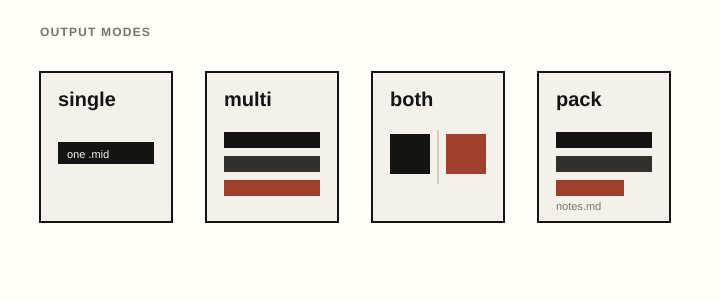
| Output mode | Result | Best for |
|---|---|---|
single |
One MIDI file per selected style/progression job. | Auditioning ideas one at a time in Ableton. |
multi |
One MIDI file with selected ideas placed back-to-back, with one empty bar between ideas. | Dragging in a long audition reel. |
both |
Single files plus the combined multi file. | Keeping focused clips and an overview reel. |
pack |
Single files, combined multi file, and a Markdown notes file. | Building your song/config library. |
When arrangement: true, these output modes keep the same file behavior, but each generated MIDI file is a longer sectioned sketch. Section markers are written into the MIDI files, and pack notes list section bar ranges. Add --full-song when you want jamburgr to choose a longer, style-aware song form instead of the compact default sections.
| Chord key | Formula | C example | MIDI notes if C3 = 60 | Common use |
|---|---|---|---|---|
major |
1 – 3 – 5 | C – E – G | 60, 64, 67 | Plain major triad. Useful when you want clean, simple harmonic blocks. |
minor |
1 – ♭3 – 5 | C – Eb – G | 60, 63, 67 | Plain minor triad. Strong for simple dark or direct ideas. |
dominant7 |
1 – 3 – 5 – ♭7 | C – E – G – Bb | 60, 64, 67, 70 | Bluesy, funky, tense, and useful for house/disco movement. |
minor_add9 |
1 – ♭3 – 5 – 9 | C – Eb – G – D | 60, 63, 67, 74 | Emotional, modern, wide. Strong for future bass, melodic bass, ambient, and cinematic minor progressions. |
major7 |
1 – 3 – 5 – 7 | C – E – G – B | 60, 64, 67, 71 | Dreamy, nostalgic, jazzy. Strong for French house, chill electronic, tropical, and bright pop-flavored ideas. |
minor9 |
1 – ♭3 – 5 – ♭7 – 9 | C – Eb – G – Bb – D | 60, 63, 67, 70, 74 | Lush minor color for liquid, deep house, downtempo, and melodic ideas. |
major9 |
1 – 3 – 5 – 7 – 9 | C – E – G – B – D | 60, 64, 67, 71, 74 | Bright, smooth, and polished. Useful for chill, French house, and pop-leaning progressions. |
add9 |
1 – 3 – 5 – 9 | C – E – G – D | 60, 64, 67, 74 | Major triad with modern openness but no seventh. |
sixth |
1 – 3 – 5 – 6 | C – E – G – A | 60, 64, 67, 69 | Warm major color for disco, house, and retro pop. |
minor6 |
1 – ♭3 – 5 – 6 | C – Eb – G – A | 60, 63, 67, 69 | Moody minor color with a lift; good for cinematic or jazz-adjacent loops. |
six_nine |
1 – 3 – 5 – 6 – 9 | C – E – G – A – D | 60, 64, 67, 69, 74 | Smooth, jazzy major color for house, chill, and lo-fi material. |
half_diminished |
1 – ♭3 – ♭5 – ♭7 | C – Eb – Gb – Bb | 60, 63, 66, 70 | Dark passing color and tension chord. |
diminished7 |
1 – ♭3 – ♭5 – bb7 | C – Eb – Gb – A | 60, 63, 66, 69 | Symmetrical tension chord for dramatic transitions. |
minor_major7 |
1 – ♭3 – 5 – 7 | C – Eb – G – B | 60, 63, 67, 71 | Noir, cinematic, and tense minor-major color. |
sus2 |
1 – 2 / 9 – 5 | C – D – G | 60, 62, 67 | Open and unresolved. Good when you want neither obvious major nor minor identity. |
sus4 |
1 – 4 / 11 – 5 | C – F – G | 60, 65, 67 | Tense and suspended. Good before resolving or for big open stabs. |
sus7 |
1 – 4 – 5 – ♭7 | C – F – G – Bb | 60, 65, 67, 70 | Suspended dominant color for stabs, builds, and unresolved loops. |
minor7 |
1 – ♭3 – 5 – ♭7 | C – Eb – G – Bb | 60, 63, 67, 70 | Moody, housey, jazzy, and stable. Strong for deep house, garage, liquid DnB, and lo-fi house. |
quartal |
1 – 4 – ♭7 | C – F – Bb | 60, 65, 70 | Stacked-fourth color; open, modern, and harmonically ambiguous. |
cluster |
1 – 2 – ♭3 – 5 | C – D – Eb – G | 60, 62, 63, 67 | Close, tense cluster for pads and darker texture. |
no3_add9 |
1 – 5 – 9 | C – G – D | 60, 67, 74 | No-third add9 shape; neutral between major and minor. |
power9 |
1 – 5 – 9 | C – G – D | 60, 67, 74 | Root + fifth + ninth. Strong, clean, wide, and neither fully major nor minor. Good for bass music and heavy stabs. |
auto |
style palette | depends on progression | depends | Lets the style pick chord colors per Roman numeral. |
auto is useful for exploration. The script uses each style’s chord_palette, then prefers minor-friendly colors for lowercase Roman numerals and major/suspended colors for uppercase Roman numerals. In other words, i and iv tend to become darker; I, IV, VI, and VII tend to become brighter or more suspended.
Use keys and Roman numerals when you want musical control without naming every note. jamburgr maps the progression onto the selected key and scale, then applies the chord type, voicing, pattern, and layer settings.
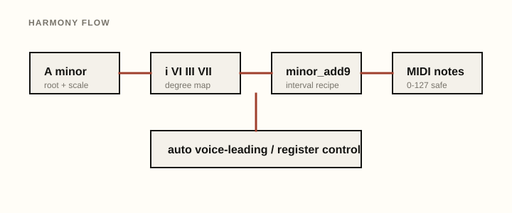
Keys use this syntax:
C minor
F# minor
Ab major
D majorBy default, the script infers the scale from the key mode: C major uses major, and A minor uses natural minor. You can override this with scale, for example key: A minor plus scale: dorian keeps A as the root but maps Roman numerals onto A Dorian.
| Scale value | Semitone degrees |
|---|---|
major |
0, 2, 4, 5, 7, 9, 11 |
natural_minor / minor |
0, 2, 3, 5, 7, 8, 10 |
harmonic_minor |
0, 2, 3, 5, 7, 8, 11 |
melodic_minor |
0, 2, 3, 5, 7, 9, 11 |
dorian |
0, 2, 3, 5, 7, 9, 10 |
phrygian |
0, 1, 3, 5, 7, 8, 10 |
lydian |
0, 2, 4, 6, 7, 9, 11 |
mixolydian |
0, 2, 4, 5, 7, 9, 10 |
major_pentatonic |
0, 2, 4, 7, 9 |
minor_pentatonic |
0, 3, 5, 7, 10 |
blues_minor |
0, 3, 5, 6, 7, 10 |
chromatic |
0 through 11 |
Roman numerals map to scale degree positions in the selected scale. For major and natural minor, this preserves the previous behavior. For modes and other scales, the mapping stays simple and predictable: I is the first scale degree, II is the second, and so on. The script does not enforce classical Roman-numeral grammar. Letter case matters most when chord: auto is used: lowercase numerals are treated as darker/minor-leaning chord choices, uppercase numerals as brighter/major-or-suspended choices.
Custom progressions use comma-separated Roman numerals:
python jamburgr.py --key "D minor" --style dubstep --chord power9 --progression "i,VI,III,VII"You can also use accidentals before a degree, such as bVII or #iv, if you want chromatic color outside the plain scale.
| Voicing | Description |
|---|---|
style |
Use the selected style’s default voicing. |
closed |
Keeps notes close together within the same octave. Example C minor7: C3–Eb3–G3–Bb3. |
open |
Spreads notes across octaves for a wider pad/lead sound. Good default when closed chords sound cramped. |
wide |
Adds a low root and places color tones higher. Useful for future bass, trap, melodic bass, and emotional wide pads. |
drop2 |
Moves the second-highest note down one octave. Smooth for house, garage, French-house, and keyboard-style voicings. |
auto_voice_leading |
Chooses inversions across the full progression to reduce total movement from chord to chord. Good for pads, keys, and smooth synthwave harmony. |
inversion_0–inversion_3 |
Forces a specific inversion. Higher inversion numbers wrap notes upward and degrade gracefully on smaller chords. |
rootless |
Removes the root when enough chord tones remain. Useful when bass or another layer already carries the root. |
shell |
Keeps a compact root/third/seventh shape when available, falling back safely for triads and suspended chords. |
quartal |
Revoices as stacked fourths from the root. Open and modern for modal pads or techno stabs. |
cluster |
Folds chord color into a close cluster. Useful for tense pads and darker texture. |
octave_doubled |
Adds an extra root an octave up for a thicker synth chord. |
topline_locked |
Chooses inversions across the full progression with extra preference for smooth top-note motion. |
bass_separated |
Places a low bass/root below upper chord tones to avoid muddy low clusters. |
General rule: if a progression sounds muddy, raise octave or use open, wide, or bass_separated. If it sounds jumpy, try auto_voice_leading or topline_locked. If it sounds too thin or too high, lower octave or use closed/drop2. jamburgr also folds chord output into a warm, style-aware midrange so arpeggiated chord tones stay more useful when imported into bright synth patches. Acid, deep-house, garage, and techno-adjacent chord parts are kept lower than big anthem or lead-like harmonic layers.
| Pattern | Description |
|---|---|
style |
Use the selected style’s default pattern. |
whole |
One long sustained chord per chord slot. Best for pads, strings, drones, and slow harmonic sketching. |
half_notes |
Two sustained chord pulses per bar. |
quarter_pulse |
Steady quarter-note chord pulses. |
eighth_pulse |
Repeated eighth-note chord pulses; alias-style companion to pulsed_eighths. |
sixteenth_gate |
Short sixteenth-note gated chord hits. |
sidechain_gaps |
Sustained chords that leave regular gaps for kick/sidechain feel. |
slow_attack_pad |
One long pad-style chord per chord slot. |
cinematic_swells |
Long sustained chord swells for cinematic pads. |
call_response_stabs |
Alternating short and longer chord hits for call-response phrasing. |
tresillo |
Three-hit tresillo rhythm across each bar. |
three_three_two |
3-3-2 eighth-note grouping for syncopated chord hits. |
clave_like |
Clave-inspired chord placements for rhythmic tension. |
garage_shuffle |
Shuffled garage-style chord placements. |
french_chops |
Tight chopped chord hits for filtered French-house style loops. |
lofi_push_pull |
Slightly pushed and pulled chord hits for a loose lo-fi feel. |
euclidean |
Deterministic Euclidean rhythm using standard-library-only logic. |
ratchets |
Adds quick repeated chord ratchets near the end of each bar. |
pulsed_eighths |
Repeated eighth-note pulses. Good for sidechained melodic techno, melodic bass, and rhythmic pad beds. |
offbeat_stabs |
House-style offbeat chord hits. Good for deep house, tech house, acid, bassline, and warehouse loops. |
syncopated_pads |
Longer uneven hits with syncopation. Good for future bass, future house, trap, and big emotional chord movement. |
trance_gate |
Short gated eighths. Good for trance, hardstyle, supersaw gates, and rhythmic pad layers. |
arp_up |
Sixteenth-note arpeggio rising through the chord tones. |
arp_down |
Sixteenth-note arpeggio descending through the chord tones. |
arp_updown |
Sixteenth-note arpeggio moving up and back down through the chord tones. |
arp_random |
Seeded random chord-tone arpeggio. Same config and seed produce the same result. |
arp_outer_in |
Arpeggio that alternates low and high chord tones, moving inward. |
arp_bass_top |
Alternates bass/root and top-note emphasis. |
arp_synthwave_drive |
Driving synthwave arpeggio pattern for dark neon/out-run sketches. |
broken |
A hybrid pattern with bass notes, arpeggio notes, and held chord hits. Good for chill electronic and liquid ideas. |
garage_chops |
Short chopped chord hits with a garage-like placement. Good for UK garage, jungle, French house, and lo-fi house. |
dubstep_stabs |
Sparse half-time stabs on the bar and mid-bar. Good for dubstep, big room, and heavy bass intros/drops. |
All current patterns assume 4/4 and respect bars_per_chord. Randomized patterns are deterministic with seed; use humanize or Ableton Groove Pool timing after import when you want looser timing.
Bassline generation is optional and off by default. Set generate_bass: true in a Markdown config, or use --generate-bass true / --generate-bass on the command line, to add a separate bass MIDI file alongside the chord MIDI.
The bass layer uses the same key, scale, Roman numeral progression, tempo, repeats, and bars-per-chord as the chord layer. It does not create audio; it writes Standard MIDI notes in a lower register so you can drag the file into Ableton and choose your own synth, sampler, or hardware instrument.
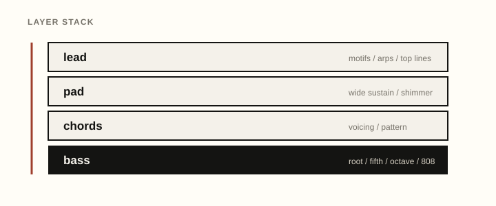
| Bass style | Description |
|---|---|
style |
Use the selected style’s default bass mode. |
root_notes |
One long root note per chord. Good for simple sub support and pad sketches. |
octave_pulse |
Alternates root and octave pulses. Useful for energetic but simple bass motion. |
root_fifth_octave |
Cycles root, fifth, octave, fifth. Useful for broad EDM bass movement. |
offbeat_house |
Offbeat root notes for house, tech house, deep house, and lo-fi house. |
rolling_techno |
Repeated eighth-note roots with occasional fifths for techno motion. |
acid_303 |
Short sixteenth-note root/scale-degree pattern with velocity accents. |
reese_dnb |
Long low roots with occasional octave or fifth movement. |
trap_808 |
Sparse low sub notes with longer durations. |
walking_minor |
Root/fifth motion plus scale-safe passing tones toward the next root. |
pedal_tone |
Mostly tonic/root pedal, useful for modal and ambient styles. |
syncopated_synthwave |
Retro root/octave syncopation for synthwave and outrun sketches. |
Output behavior:
single: writes one chord MIDI file and, when enabled, one matching bass MIDI file per job.multi: writes a chord audition reel and, when enabled, a separate bass audition reel.both: writes individual chord/bass files plus multi chord/bass reels.pack: writes the files above plus pack notes listing the generated bass files and style defaults.Example:
python jamburgr.py --key "A minor" --style synthwave --progression "i,VI,III,VII" --output-mode pack --generate-bass --bass-style syncopated_synthwavePad generation is optional and off by default. Set generate_pad: true in a Markdown config, or use --generate-pad true / --generate-pad on the command line, to add a separate pad MIDI file alongside the chord MIDI.
The pad layer uses the same key, scale, Roman numeral progression, tempo, repeats, and bars-per-chord as the chord layer. Unlike rhythmic chord patterns, pad modes are designed around long sustained notes, drones, or smooth top-note motion. pad_octave sets the starting register, then jamburgr folds the resulting voicing into a warm pad range so wide chords stay out of both bass mud and brittle bell-like extremes.
| Pad style | Description |
|---|---|
style |
Use the selected style’s default pad mode. |
sustain_chords |
Holds each chord for nearly the full chord duration. Good for simple background support. |
slow_wide |
Uses wide, long voicings for cinematic pads and synthwave-style beds. |
high_shimmer |
Keeps a warm sustained pad body and adds controlled upper tones at quieter velocity for air. |
root_drone |
Holds the tonic/root as a steady drone. Useful for ambient, techno, and modal sketches. |
fifth_drone |
Holds tonic plus fifth for open, stable harmonic support. |
evolving_inversions |
Changes chord inversion across repeats for slow movement without changing the progression. |
cluster |
Uses the existing cluster voicing in a controlled mid/high pad register for tense experimental color without low-register mud. |
top_note_melody |
Uses smooth voice leading to keep the upper note moving melodically across chords. |
Output behavior mirrors bass generation:
single: writes one chord MIDI file and, when enabled, one matching pad MIDI file per job.multi: writes a chord audition reel and, when enabled, a separate pad audition reel.both: writes individual chord/pad files plus multi chord/pad reels.pack: writes chord, bass, and pad files as enabled, plus pack notes listing the generated layer files and style defaults.Example:
python jamburgr.py --key "A minor" --style synthwave --progression "i,VI,III,VII" --output-mode pack --generate-pad --pad-style slow_wideFor full song-sketch packs, enable both layers:
python jamburgr.py --config jamburgr_example_recipe.md --generate-bass --generate-padLead generation is optional and off by default. Set generate_lead: true in a Markdown config, or use --generate-lead true / --generate-lead on the command line, to add a separate lead or motif MIDI file alongside chord, bass, and pad layers.
The lead layer follows the same key, scale, Roman numeral progression, tempo, repeats, and bars-per-chord as the chord layer. It prefers chord tones on strong beats and uses scale-safe passing tones on weaker hits. Random choices are seeded, so the same config and seed value produce the same motif every time.
| Lead style | Description |
|---|---|
style |
Use the selected style’s default lead mode. |
simple_motif |
Short motif repeated and lightly varied. Useful as a neutral starting point. |
chord_tone_lead |
Mostly chord tones, especially on strong beats. |
pentatonic_lead |
Scale-safe pentatonic movement for simple melodic hooks. |
arp_lead |
Melodic arpeggio-style line derived from chord tones. |
arp_random |
Reuses the arpeggio engine but randomizes chord-tone order for glitch, IDM, and leftfield sketches. |
call_response |
Phrase/rest/answer behavior for conversational motifs. |
trance_pluck |
Faster gated/plucked notes for trance and hard dance sketches. |
synthwave_topline |
Sparse retro minor motif for synthwave and outrun ideas. |
future_bass_chop |
Syncopated fragments for chopped/plucky melodic ideas. |
melodic_techno_pluck |
Hypnotic repeating motif for techno plucks. |
dnb_atmospheric |
Higher arps and fragments for atmospheric DnB layers. |
Useful lead scale choices:
style or current: use the active scale setting.minor_pentatonic: safer for minor-key hooks and synthwave sketches.major_pentatonic: safer for bright major-key hooks.blues_minor: adds a bluesy minor color.chromatic: permits all pitch classes; use this intentionally.Example:
python jamburgr.py --key "A minor" --style synthwave --progression "i,VI,III,VII" --output-mode pack --generate-lead --lead-style synthwave_topline --lead-scale minor_pentatonicFor a full melodic idea pack:
python jamburgr.py --config jamburgr_example_recipe.md --generate-bass --generate-pad --generate-leadDrum and percussion generation is optional and off by default. Set generate_drums: true in a Markdown config, or use --generate-drums true / --generate-drums on the command line, to add one combined drum MIDI file alongside the chord, bass, pad, and lead layers.
The drum lane is deliberately simple and DAW-friendly. It writes General MIDI percussion note numbers on zero-indexed channel 9, which most DAWs display as MIDI channel 10. It does not generate audio, samples, finished drum productions, or copied beats. Treat it as editable groove scaffolding: drag it to Drum Rack, a GM kit, a sampler, or a hardware drum module, then change sounds, velocities, notes, and groove timing to fit your track.
| Drum style | Description |
|---|---|
style |
Use the selected style’s drum preset. |
four_on_floor |
Straight kick foundation with clap/snare backbeats and optional hats. |
house_shuffle |
House-oriented four-on-floor with shuffled hats and light percussion. |
techno_drive |
Steady kick and machine-like hats for techno pressure. |
garage_skip |
Skippy kick/snare and swung hat placement for garage-leaning ideas. |
breakbeat |
Syncopated kick/snare framework with optional ghost hits and hats. |
half_time |
Sparse half-time backbeat for bass music, dubstep, and wave-style sketches. |
trap_hat |
Half-time snare with 808/trap-style hat density and simple ratchets. |
dnb_two_step |
Fast two-step kick/snare scaffold for DnB and jungle-related lanes. |
electro_syncopated |
Robotic syncopation with optional clave/cowbell accents. |
club_triplet |
Triplet-leaning club pulse for jersey-club-style sketching. |
ambient_sparse |
Minimal percussion and shaker hints for spacious or low-density styles. |
percussion_pulse |
Percussion-led pulse with clave, shakers, and tom-like accents. |
Density and swing:
drum_density: sparse gives you a minimal scaffold.drum_density: medium adds hats or a few supporting accents.drum_density: dense adds busier hats/percussion while keeping the lane editable.drum_swing: style uses each style’s swing hint. You can also set an explicit value such as 20 or 45.Output behavior mirrors the other layers:
single: writes one chord MIDI file and, when enabled, one matching _drums.mid file per job.multi: writes a chord audition reel and, when enabled, a separate multi drum audition reel.both: writes individual chord/drum files plus multi chord/drum reels.pack: writes all enabled files plus pack notes listing the drum defaults.Example:
python jamburgr.py --key "A minor" --style synthwave --progression default --output-mode pack --generate-drums --drum-style styleArrangement sections can include drums with section_layers, but drums still export only when generate_drums: true:
section_layers: intro:pad;verse:drums+bass+pad;drop:drums+chords+bass+lead;breakdown:pad+lead;outro:drums+padVariation generation lets one config produce multiple related takes of the same idea. Set variations above 1 and jamburgr writes files with _v01, _v02, _v03, etc. in the filename. When variations: 1 or the key is omitted, filenames and behavior stay unchanged.
Variations keep the selected key and progression fixed. They can alter musical presentation details such as voicing, pattern, bass mode, lead mode, velocity, humanize amount, or inversion. The same config plus the same seed always produces the same set of variations.
| Setting | Values |
|---|---|
variations |
Any integer 1 or higher. |
variation_strategy |
subtle, medium, or wild. |
variation_affects |
all, or a comma-separated subset of voicing,pattern,bass,lead,velocity,humanize,inversion. |
Examples:
python jamburgr.py --config jamburgr_example_recipe.md --variations 3 --variation-affects voicing,lead,bass,velocityvariations: 4
variation_strategy: medium
variation_affects: voicing,lead,bass,velocityPack notes include a variation summary, and generated files include the variation number before the layer suffix, for example:
idea_A_minor_synthwave_custom_auto_v02_bass.mid
idea_A_minor_synthwave_custom_auto_v02_pad.mid
idea_A_minor_synthwave_custom_auto_v02_lead.midExplain mode prints the musical interpretation of a config in plain text. It is useful before generating a large pack, when checking Roman numerals, or when you want to understand what style resolved to.
Use --explain to print the explanation and still generate files:
python jamburgr.py --config jamburgr_example_recipe.md --explainUse --explain-only to print the explanation without writing any MIDI files:
python jamburgr.py --config jamburgr_example_recipe.md --explain-onlyThe explanation includes:
Example output excerpt:
Progression `custom`: i - VI - III - VII
| `i` | A3 | minor add9 | A3, C4, E4, B4 |
| `VI` | F4 | major 7 | F4, A4, C5, E5 |Arrangement mode turns a short loop idea into a simple song sketch. Set arrangement: true to place named sections one after another in the same MIDI file instead of only rendering repeats copies of the progression.
Default section behavior:
| Section | Default bars | Default layers |
|---|---|---|
intro |
8 | pad |
verse |
16 | pad, bass |
drop |
16 | chords, bass, lead |
breakdown |
8 | pad, sparse lead |
outro |
8 | pad |
Example:
arrangement: true
sections: intro,verse,drop,breakdown,outro
intro_bars: 8
verse_bars: 16
drop_bars: 16
breakdown_bars: 8
outro_bars: 8Override section layers with compact section_layers syntax:
section_layers: intro:pad;verse:drums+pad+bass;drop:drums+chords+bass+lead;breakdown:pad+lead;outro:drums+padThe chord, bass, pad, lead, and optional drum files are still separate MIDI layers. Arrangement mode simply decides where each layer plays. Each section gets a MIDI marker, and pack notes include readable bar ranges such as drop: bars 25-40.
python jamburgr.py --config jamburgr_example_recipe.md --arrangement trueFull-song mode is for a more complete first pass: roughly 2.5-4 minutes of MIDI, depending on BPM and style family. It uses style-aware templates for house, techno, bass music, retro/chill lanes, and global club styles, then brings layers in and out across intro, groove/verse, build, drop/main, breakdown, return, and outro-style sections.
python jamburgr.py --config configs/recipes/synthwave/synthwave_arp_motion_study.md \
--full-song \
--song-length producer_sketch \
--section-variation style \
--generate-drums trueUse song_length: radio_edit for a tighter arrangement, producer_sketch for the default writing session, or club_mix when you want longer DJ-friendly intros, outros, and returns. arrangement_archetype: style avoids one repeated intro formula by choosing from family-appropriate shapes such as bass cold opens, hook-first forms, false drops, late-arriving chords, breakdown-first openings, and call-response lead sections. section_variation: style keeps the harmonic idea coherent while nudging lead density, drum density, velocities, and humanization by section energy. Explicit sections, *_bars, and section_layers in a Markdown config still work when you want to design the form yourself.
When arrangement: true, jamburgr can optionally export both full-length arrangement lanes and section-split clips for faster DAW setup.
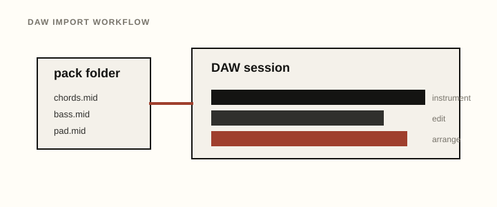
The default layout remains unchanged:
arrangement: true
export_layout: standardFor a DAW-ready pack with full arrangement lanes and section MIDI files:
arrangement: true
output_mode: pack
export_layout: full_and_sections
include_full_arrangement: true
include_section_clips: true
section_clip_folder: session_view
section_clip_naming: daw_friendlyThis creates a structure like:
full_arrangement/
phase20_A_minor_synthwave_custom_auto.mid
phase20_A_minor_synthwave_custom_auto_bass.mid
phase20_A_minor_synthwave_custom_auto_pad.mid
phase20_A_minor_synthwave_custom_auto_lead.mid
phase20_A_minor_synthwave_custom_auto_drums.mid
session_view/
01_intro_pad_8bars.mid
02_verse_drums_16bars.mid
02_verse_bass_16bars.mid
02_verse_pad_16bars.mid
03_drop_chords_16bars.mid
03_drop_bass_16bars.mid
03_drop_lead_16bars.mid
03_drop_drums_16bars.midSection MIDI files start at tick 0 and are clipped to the exact section length. Inactive layers are skipped, so an intro that only contains pads will not export an empty intro chord file. Pack notes include an import guide explaining which folder contains full-length arrangement lanes and which folder contains section-split MIDI exports.
Use export_layout: sections_only when you only want section MIDI files and no full-length arrangement lanes.
Sound-design cards are optional production notes added to pack-mode Markdown notes. They do not change MIDI generation and they do not generate audio. They are short coaching prompts for choosing patches, envelopes, filters, effects, and mix moves after you drag the MIDI into a DAW.
Enable them in a config:
output_mode: pack
generate_bass: true
generate_pad: true
generate_lead: true
generate_drums: true
sound_design_cards: true
sound_design_depth: practical
target_synth: ableton_stock
sound_design_layers: allThe cards are layer-aware and style-aware. A synthwave pack will lean toward retro analog bass, chorused pads, simple toplines, and tight electronic kits; house lanes lean toward stabs, filtered keys, offbeat bass, shuffled hats, and pump/sidechain ideas; techno lanes lean toward mono bass, drones, filter motion, repetition, and machine grooves; bass and DnB lanes lean toward sub/Reese roles, atmospheric space, and impact-with-space drum choices.
target_synth changes the vocabulary:
general keeps suggestions synth-agnostic.ableton_stock mentions Ableton-native devices such as Wavetable, Drift, Operator, Auto Filter, Echo, Hybrid Reverb, Saturator, Utility, and Glue Compressor.hardware uses hardware-friendly signal-chain language such as mono synth, poly synth, external filter, aux delay, and reverb send.The wording is intentionally broad. Use these cards to design original patches for your own MIDI ideas, not to match a specific artist or recording.
Splice sample search cards are optional pack-note prompts for finding licensed samples that fit the generated MIDI sketch. They are not audio generation, they do not call Splice, and they do not download, embed, preview, copy, or redistribute any sample. They give you practical search phrases and fit notes to use with your own Splice account, Splice Desktop, Splice Bridge, Ableton Live 12.3+ Splice integration, or a separate Splice MCP workflow.
Enable them in a config:
output_mode: pack
style: future_house
key: A minor
bpm: 124
sample_search_cards: true
sample_search_depth: practical
sample_search_roles: auto
sample_search_sections: autoEach card includes:
main_looppractical or detailedUse these cards as auditioning shortcuts. License/download any chosen sounds through Splice, then place them in the DAW next to the generated MIDI. Good first roles are vocal_chop, top_loop, fill, riser, impact, and texture; use drum_loop or percussion carefully so they support rather than replace the generated drum MIDI.
The style library controls default BPM, default voicing, default pattern, default bass style, default pad style, default lead style, default drum style/density/swing, named progression options, descriptive notes, and broad reference tags.
When pattern, voicing, bass_style, pad_style, lead_style, drum_style, drum_density, or drum_swing are set to style, jamburgr uses the selected style’s defaults. Each style also defines practical layer registers and lead feel settings. Leave bass_octave, pad_octave, or lead_octave blank/None to use these style registers; set them explicitly when you want to override the preset.
Use --style-info to inspect the educational The Jam Library metadata for a style without generating MIDI:
python jamburgr.py --style-info synthwave| Style | Scale | Bass | Pad | Lead | Lead feel | Drums |
|---|---|---|---|---|---|---|
future_bass |
natural_minor |
root_fifth_octave @ 1 |
high_shimmer @ 5 |
future_bass_chop @ 5 |
medium / medium |
half_time / medium / 0% |
melodic_bass |
natural_minor |
root_fifth_octave @ 1 |
slow_wide @ 4 |
chord_tone_lead @ 5 |
medium / medium |
half_time / medium / 0% |
chill_electronic |
major |
root_notes @ 1 |
slow_wide @ 4 |
pentatonic_lead @ 5 |
sparse / high |
ambient_sparse / sparse / 12% |
bittersweet_electropop |
major |
octave_pulse @ 1 |
top_note_melody @ 4 |
simple_motif @ 5 |
medium / medium |
four_on_floor / medium / 0% |
progressive_house |
major |
offbeat_house @ 1 |
sustain_chords @ 4 |
chord_tone_lead @ 5 |
medium / medium |
four_on_floor / medium / 0% |
big_room |
major |
root_notes @ 1 |
sustain_chords @ 4 |
simple_motif @ 5 |
sparse / high |
four_on_floor / medium / 0% |
trance |
natural_minor |
octave_pulse @ 1 |
high_shimmer @ 5 |
trance_pluck @ 5 |
dense / high |
four_on_floor / dense / 0% |
psytrance |
phrygian |
rolling_techno @ 1 |
root_drone @ 4 |
arp_lead @ 5 |
dense / high |
techno_drive / dense / 0% |
melodic_techno |
natural_minor |
rolling_techno @ 1 |
evolving_inversions @ 4 |
melodic_techno_pluck @ 5 |
medium / high |
techno_drive / medium / 0% |
peak_techno |
natural_minor |
rolling_techno @ 1 |
root_drone @ 4 |
melodic_techno_pluck @ 5 |
medium / high |
techno_drive / dense / 0% |
ambient_techno |
natural_minor |
pedal_tone @ 1 |
evolving_inversions @ 4 |
melodic_techno_pluck @ 5 |
sparse / high |
ambient_sparse / sparse / 8% |
acid_house |
natural_minor |
acid_303 @ 2 |
fifth_drone @ 4 |
simple_motif @ 5 |
sparse / high |
four_on_floor / medium / 0% |
deep_house |
natural_minor |
offbeat_house @ 1 |
slow_wide @ 4 |
chord_tone_lead @ 5 |
sparse / medium |
house_shuffle / medium / 18% |
tech_house |
natural_minor |
offbeat_house @ 1 |
sustain_chords @ 4 |
call_response @ 5 |
medium / medium |
house_shuffle / medium / 10% |
minimal_deep_tech |
natural_minor |
offbeat_house @ 1 |
fifth_drone @ 4 |
simple_motif @ 5 |
sparse / high |
house_shuffle / sparse / 14% |
garage_house |
natural_minor |
offbeat_house @ 1 |
sustain_chords @ 4 |
call_response @ 5 |
medium / medium |
garage_skip / medium / 34% |
future_house |
minor_pentatonic |
offbeat_house @ 1 |
sustain_chords @ 4 |
future_bass_chop @ 5 |
medium / medium |
four_on_floor / medium / 0% |
french_house |
major |
octave_pulse @ 1 |
sustain_chords @ 4 |
pentatonic_lead @ 5 |
medium / medium |
house_shuffle / medium / 18% |
tropical_house |
major |
root_notes @ 1 |
sustain_chords @ 4 |
pentatonic_lead @ 5 |
sparse / high |
percussion_pulse / sparse / 14% |
afro_house |
dorian |
pedal_tone @ 1 |
fifth_drone @ 4 |
call_response @ 5 |
sparse / medium |
percussion_pulse / medium / 18% |
organic_house |
dorian |
pedal_tone @ 1 |
slow_wide @ 4 |
call_response @ 5 |
sparse / medium |
percussion_pulse / sparse / 18% |
uk_garage |
natural_minor |
root_fifth_octave @ 1 |
sustain_chords @ 4 |
call_response @ 5 |
medium / medium |
garage_skip / medium / 36% |
bassline |
natural_minor |
root_fifth_octave @ 1 |
sustain_chords @ 4 |
call_response @ 5 |
medium / medium |
garage_skip / medium / 30% |
jersey_club |
minor_pentatonic |
octave_pulse @ 1 |
sustain_chords @ 4 |
call_response @ 5 |
medium / medium |
club_triplet / medium / 0% |
baile_funk |
minor_pentatonic |
root_fifth_octave @ 1 |
sustain_chords @ 4 |
call_response @ 5 |
medium / medium |
percussion_pulse / medium / 8% |
amapiano |
major_pentatonic |
root_fifth_octave @ 1 |
slow_wide @ 4 |
pentatonic_lead @ 5 |
sparse / high |
percussion_pulse / sparse / 16% |
dubstep |
natural_minor |
reese_dnb @ 1 |
slow_wide @ 4 |
future_bass_chop @ 5 |
sparse / low |
half_time / medium / 0% |
trap_edm |
natural_minor |
trap_808 @ 1 |
root_drone @ 4 |
simple_motif @ 5 |
sparse / high |
trap_hat / dense / 0% |
phonk |
minor_pentatonic |
trap_808 @ 1 |
root_drone @ 4 |
simple_motif @ 5 |
sparse / high |
trap_hat / medium / 0% |
wave_hardwave |
natural_minor |
reese_dnb @ 1 |
high_shimmer @ 5 |
future_bass_chop @ 5 |
medium / medium |
half_time / medium / 0% |
drum_and_bass |
natural_minor |
reese_dnb @ 1 |
high_shimmer @ 5 |
dnb_atmospheric @ 6 |
dense / medium |
dnb_two_step / dense / 0% |
liquid_dnb |
natural_minor |
walking_minor @ 1 |
slow_wide @ 4 |
dnb_atmospheric @ 6 |
medium / medium |
dnb_two_step / medium / 4% |
jungle |
natural_minor |
reese_dnb @ 1 |
root_drone @ 4 |
dnb_atmospheric @ 6 |
dense / medium |
breakbeat / dense / 16% |
breakbeat |
natural_minor |
root_fifth_octave @ 1 |
root_drone @ 4 |
call_response @ 5 |
medium / medium |
breakbeat / medium / 18% |
electro |
phrygian |
octave_pulse @ 1 |
fifth_drone @ 4 |
arp_lead @ 5 |
medium / medium |
electro_syncopated / medium / 0% |
hardstyle |
natural_minor |
octave_pulse @ 1 |
high_shimmer @ 5 |
trance_pluck @ 5 |
dense / high |
four_on_floor / dense / 0% |
synthwave |
natural_minor |
syncopated_synthwave @ 1 |
slow_wide @ 4 |
synthwave_topline @ 5 |
sparse / high |
four_on_floor / medium / 0% |
chillwave |
major |
root_notes @ 1 |
slow_wide @ 4 |
synthwave_topline @ 5 |
sparse / high |
ambient_sparse / sparse / 16% |
downtempo |
natural_minor |
pedal_tone @ 1 |
slow_wide @ 4 |
simple_motif @ 5 |
sparse / high |
ambient_sparse / sparse / 12% |
idm_glitch |
chromatic |
pedal_tone @ 1 |
cluster @ 4 |
arp_random @ 5 |
dense / low |
percussion_pulse / medium / 10% |
leftfield_bass |
phrygian |
reese_dnb @ 1 |
cluster @ 4 |
arp_random @ 5 |
medium / low |
half_time / medium / 0% |
lofi_house |
natural_minor |
offbeat_house @ 1 |
slow_wide @ 4 |
chord_tone_lead @ 5 |
sparse / high |
house_shuffle / sparse / 24% |
| Style key | Display name | BPM | Default voicing | Default pattern | Use when you want… |
|---|---|---|---|---|---|
future_bass |
Future bass / wonky emotional | 150 | wide |
syncopated_pads |
Wide add9/sus voicings, emotional minor movement, syncopated chord hits. |
melodic_bass |
Melodic bass / anthem drop | 145 | wide |
pulsed_eighths |
Big emotional bass-music progressions for stacks, supersaws, and vocal chops. |
dubstep |
Dubstep / half-time bass | 140 | wide |
dubstep_stabs |
Half-time wide chords and sparse stabs for bass drops and intros. |
trap_edm |
EDM trap / future trap | 150 | wide |
syncopated_pads |
Minor-key stabs and emotional wide chords for trap drops and brass layers. |
phonk |
Phonk / dark drift | 150 | closed |
tresillo |
Dark pentatonic drift loops for 808-led sketches without copying source melodies. |
wave_hardwave |
Wave / hardwave | 140 | wide |
sidechain_gaps |
Wide minor harmony and shimmer pads for emotional bass music and wave-inspired sketches. |
leftfield_bass |
Leftfield bass / experimental low-end | 135 | cluster |
euclidean |
Phrygian low-end sketches with sparse clusters and Reese-style bass support. |
| Style key | Display name | BPM | Default voicing | Default pattern | Use when you want… |
|---|---|---|---|---|---|
deep_house |
Deep house | 122 | drop2 |
offbeat_stabs |
Moody sevenths, offbeat stabs, and warmer voicings. |
tech_house |
Tech house | 126 | closed |
offbeat_stabs |
Tight, repetitive, DJ-friendly chord stabs for groove-first arrangements. |
minimal_deep_tech |
Minimal deep tech | 124 | closed |
offbeat_stabs |
Reduced minor cells for clipped stabs, sub movement, and groove-first deep tech sketches. |
garage_house |
Garage house / swung house | 126 | drop2 |
garage_chops |
Swung house chords that approximate garage-style chop placement with the current pattern engine. |
future_house |
Future house | 126 | open |
syncopated_pads |
Bouncy, modern house progressions for plucks and saw chords. |
french_house |
French house / disco house | 124 | drop2 |
garage_chops |
Major 7 / minor 7 harmony for filtered disco loops and chopped chords. |
tropical_house |
Tropical house | 112 | open |
broken |
Relaxed major-key movement for marimba, plucks, and soft pads. |
afro_house |
Afro house / organic groove | 120 | open |
broken |
Modal minor loops with space for percussion, call-response, and organic textures. |
organic_house |
Organic house / melodic organic | 120 | open |
broken |
Modal organic-house movement with roomy chords, pedal bass, and space for live-feeling percussion. |
lofi_house |
Lo-fi house | 118 | drop2 |
garage_chops |
Dusty seventh-chord movement for sampled keys and filtered pads. |
acid_house |
Acid house / 303 companion chords | 124 | closed |
offbeat_stabs |
Minimal minor movement for acid basslines and short chord hits. |
| Style key | Display name | BPM | Default voicing | Default pattern | Use when you want… |
|---|---|---|---|---|---|
melodic_techno |
Melodic techno | 124 | open |
pulsed_eighths |
Dark, cycling minor progressions for pulsing synths and reverb-heavy plucks. |
peak_techno |
Peak-time techno | 132 | closed |
offbeat_stabs |
Sparse, driving harmonic cells for stabs, rave chords, and warehouse loops. |
ambient_techno |
Ambient techno | 112 | open |
cinematic_swells |
Slow-burning techno harmony for evolving pads, drones, and restrained melodic plucks. |
trance |
Uplifting trance | 138 | open |
trance_gate |
Driving gated chords/arps with emotional minor-key movement. |
psytrance |
Psytrance / modal drive | 145 | closed |
arp_updown |
Modal, repetitive, hypnotic movement for fast arps or gated synths. |
hardstyle |
Hardstyle / euphoric hard dance | 150 | open |
trance_gate |
Euphoric minor loops for gated leads and big distorted kick sections. |
| Style key | Display name | BPM | Default voicing | Default pattern | Use when you want… |
|---|---|---|---|---|---|
uk_garage |
UK garage / 2-step chords | 132 | drop2 |
garage_chops |
Shuffled, chopped seventh chords for 2-step grooves. |
bassline |
Bassline / speed garage | 135 | closed |
offbeat_stabs |
Dark minor stabs for bouncy bassline and speed garage ideas. |
drum_and_bass |
Drum and bass | 174 | open |
arp_up |
Fast arps or sustained chords for energetic DnB beds. |
liquid_dnb |
Liquid DnB | 174 | drop2 |
broken |
Soulful sevenths/add9 movement for pads, piano, and atmospheric DnB. |
jungle |
Jungle / breaks | 165 | closed |
garage_chops |
Short chopped chords for breakbeats, Reese bass, and rave samples. |
breakbeat |
Breakbeat / rave breaks | 132 | closed |
garage_chops |
Rave-break chord chops and root-fifth bass support using existing garage-chop rhythm logic. |
electro |
Electro / robotic funk | 128 | closed |
clave_like |
Robotic modal stabs for electro-funk sketches with optional syncopated drum scaffolding. |
| Style key | Display name | BPM | Default voicing | Default pattern | Use when you want… |
|---|---|---|---|---|---|
jersey_club |
Jersey club / club edits | 140 | closed |
three_three_two |
Short club-edit harmonic loops using current 3-3-2 rhythm tools as a DAW-ready approximation. |
baile_funk |
Baile funk / funk carioca | 130 | closed |
clave_like |
Percussive minor-pentatonic club sketches that leave room for vocal chops and drums. |
amapiano |
Amapiano / log-drum inspired | 112 | open |
three_three_two |
Major-pentatonic house sketches with spacious pads and simple bass placeholders for later log-drum work. |
| Style key | Display name | BPM | Default voicing | Default pattern | Use when you want… |
|---|---|---|---|---|---|
chill_electronic |
Chill electronic / indie dance | 105 | open |
broken |
Warm, cinematic, festival-sunset harmonic motion with broken chord patterns. |
bittersweet_electropop |
Electronic pop / bittersweet synth chords | 128 | wide |
syncopated_pads |
Bright-but-sad major/minor shifts, useful for supersaw pads and vocal-led tracks. |
synthwave |
Synthwave / outrun | 100 | open |
whole |
Retro minor progressions for Juno-style pads and arps. |
chillwave |
Chillwave / nostalgic synth pop | 95 | open |
broken |
Hazy major-key synth-pop harmony with slow pads and simple top-line material. |
downtempo |
Downtempo / ambient electronic | 90 | wide |
whole |
Slow, open voicings for pads, drones, and emotional ambient sketches. |
idm_glitch |
IDM / glitch electronic | 118 | cluster |
euclidean |
Unstable chromatic cells and cluster pads for experimental sketches; detailed glitching stays in the DAW. |
| Style key | Display name | BPM | Default voicing | Default pattern | Use when you want… |
|---|---|---|---|---|---|
progressive_house |
Progressive house | 128 | open |
whole |
Long, uplifting chords that work well with sidechain compression and big saw pads. |
big_room |
Big room / festival stabs | 128 | open |
dubstep_stabs |
Simple, huge root movement designed for short stabs and festival leads. |
The Jam Library metadata in jam_library.py gives each style a richer educational record. The MIDI generator still uses the compact style defaults in jamburgr.py; the atlas exists to make jamburgr a better learning tool for producers.
The HTML documentation renders this metadata as searchable The Jam Library cards, deep-linked detail sections, timeline/geography tables, generated style visuals, and a source appendix. Use those pages when you want to compare styles before choosing a config or CLI preset. Each atlas page also shows the resolved drum preset, density, swing hint, and General MIDI routing guidance so rhythm support is visible alongside chords, bass, pads, and leads.
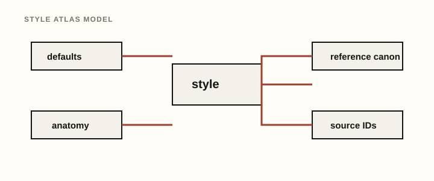
Each style record includes:
The reference canon is not a prompt to imitate a recording. Use it to understand tempo ranges, arrangement roles, sound-design vocabulary, and broad scene context, then generate original MIDI with jamburgr's chord, bass, pad, lead, and optional drum engines.
The Jam Library also includes a setup recipe for every style. Recipes live in jamburgr_setup.py and are rendered in the HTML docs on each style detail page. They translate the atlas into practical DAW choices for producers: chords, bass, pads, leads, drums, routing, effects, and “listen for” learning prompts. The same module now keeps structured layer setup intents for all five layers so docs, arrangement export, and the Ableton bridge can share the same musical intent vocabulary.
Recipes use Ableton stock devices as clear starting points, with hardware-friendly wording where useful. They do not require paid plugins and they do not include Ableton device paths. For example, a synthwave recipe may suggest Ableton Wavetable or Analog for wide chords, Drift for mono bass, a Drum Rack or General MIDI kit for drums, and return-track delay/reverb for fast arrangement work. The point is to start a session quickly, then choose your own sounds and edit the MIDI into an original track.
For the optional Ableton bridge workflow, recipes also include bridge setup notes. Those notes describe practical stock-device or saved-rack starting points, conservative mix balance, and stable rack macro ideas such as Tone, Movement, Brightness, Drive, Width, FX, Attack, and Release. jamburgr itself remains MIDI-only; the bridge is the Ableton-specific layer that can turn those setup ideas into tracks, devices, macros, and mixer defaults.
Each recipe covers:
The structured setup intents add per-layer instrument family, sound character, mix role, effects/routing hint, hardware note, and optional capability tags. Arrangement export version 2 can include these DAW-agnostic hints without adding Ableton paths or plugin assumptions; the Ableton bridge remains responsible for mapping them to actual Live devices, racks, parameters, and mixer defaults.
The source appendix is stored as STYLE_METADATA_SOURCES. The CLI exposes source IDs through --style-info so producers can connect the generated settings to broader listening and learning context:
python jamburgr.py --style-info deep_houseThe repository includes a recipe config library under configs/recipes/. The original library has 10 Markdown study configs for each style, and the Jam Library recipe upgrade is beginning to replace those generic studies with smaller, named recipe sets.
These configs are not song duplication recipes. They use The Jam Library as educational context, then choose original jamburgr settings for chords, bass, pads, leads, editable General MIDI drum lanes, variations, and arrangement sketches. New public recipe sets are tiered as hero, alternate, arrangement, and bridge_ready; old generic studies may be marked legacy: true while staying runnable.
Use any config with:
python jamburgr.py --config configs/recipes/synthwave/synthwave_night_drive_arp.mdEach config includes:
recipe_role, recipe_slug, canon_track, summary, and mood_tagsThe HTML documentation groups the library by style family. Synthwave, trance, deep house, tech house, UK garage, French House, Afro House, and Amapiano now have public hero/alternate/arrangement/bridge-ready recipe sets. Amapiano's native log-drum and percussion behavior is still tracked as product work. Other styles still show the original study configs until their recipe sets are authored.
Each section below shows the exact named progressions included in the script. Use --progression default, --progression all, or any named progression shown for the selected style.
future_bass — Future bass / wonky emotionalwidesyncopated_padsdefault: i - VI - III - VII — Emotional minor-key EDM loop; useful for future bass, melodic bass, trance, melodic techno, DnB, and synthwave.uplift: VI - VII - i - v — Rising pre-chorus / lift feeling that lands back into minor.floating: i - III - VII - VI — Rave/cinematic minor movement with a strong broad sweep.melodic_bass — Melodic bass / anthem dropwidepulsed_eighthsdefault: i - VI - III - VII — Emotional minor-key EDM loop; useful for future bass, melodic bass, trance, melodic techno, DnB, and synthwave.cinematic: i - iv - VI - VII — Cinematic minor movement; darker and more dramatic.resolve_up: VI - VII - i - i — Builds upward, then sits on the tonic for emphasis.chill_electronic — Chill electronic / indie danceopenbrokendefault: I - V - vi - IV — Classic uplifting major-pop/festival progression.nostalgic: vi - IV - I - V — Bittersweet major-key progression that starts on the relative minor.sunset: IV - I - V - vi — Sunny/suspended major movement; good for chill and tropical ideas.bittersweet_electropop — Electronic pop / bittersweet synth chordswidesyncopated_padsdefault: I - V - vi - IV — Classic uplifting major-pop/festival progression.bittersweet: vi - IV - I - V — Bittersweet major-key progression that starts on the relative minor.lift: IV - V - vi - I — Lifting pop/electronic movement that pushes toward the relative minor.progressive_house — Progressive houseopenwholedefault: I - V - vi - IV — Classic uplifting major-pop/festival progression.festival: vi - IV - I - V — Bittersweet major-key progression that starts on the relative minor.classic: I - IV - vi - V — Open, optimistic house/festival movement.big_room — Big room / festival stabsopendubstep_stabsdefault: i - VI - VII - i — Heavy minor loop with a strong return to the tonic.anthem: i - VII - VI - VII — Modal, dark, hypnotic loop; strong for techno, psytrance, afro house, and synthwave.rise: i - III - VI - VII — Dramatic rise through minor harmony; useful for big-room and rave-leaning ideas.trance — Uplifting tranceopentrance_gatedefault: i - VI - III - VII — Emotional minor-key EDM loop; useful for future bass, melodic bass, trance, melodic techno, DnB, and synthwave.euphoric: VI - III - VII - i — Euphoric trance-style order that delays the tonic resolution.classic: i - iv - VI - VII — Cinematic minor movement; darker and more dramatic.psytrance — Psytrance / modal driveclosedarp_updowndefault: i - i - VII - i — Useful EDM progression for this style.hypnotic: i - VII - VI - VII — Modal, dark, hypnotic loop; strong for techno, psytrance, afro house, and synthwave.dark: i - iv - i - VII — Dubby/minimal loop with a strong tonic anchor.melodic_techno — Melodic technoopenpulsed_eighthsdefault: i - VI - III - VII — Emotional minor-key EDM loop; useful for future bass, melodic bass, trance, melodic techno, DnB, and synthwave.dark_drive: i - iv - VI - V — Darker tension; the V gives a more dramatic pull back to i.hypnotic: i - VII - VI - VII — Modal, dark, hypnotic loop; strong for techno, psytrance, afro house, and synthwave.peak_techno — Peak-time technoclosedoffbeat_stabsdefault: i - i - VI - VII — Static/club-friendly; good when bass, drums, or sound design carry the arrangement.warehouse: i - VII - i - VI — Useful EDM progression for this style.tension: i - II - i - VII — Rave/warehouse tension, using a bright II color against the minor center.acid_house — Acid house / 303 companion chordsclosedoffbeat_stabsdefault: i - i - iv - i — Minimal acid/303 companion loop.rave: i - VII - i - VI — Useful EDM progression for this style.simple: i - v - iv - i — Simple minor loop with conventional minor dominant movement.deep_house — Deep housedrop2offbeat_stabsdefault: i - iv - VI - v — Moody deep-house progression with dark minor color.moody: i - VII - VI - iv — Useful EDM progression for this style.jazzy: i - iv - III - VII — Soulful/atmospheric minor progression.tech_house — Tech houseclosedoffbeat_stabsdefault: i - i - VII - VI — Tight club loop with small harmonic movement.groove: i - iv - i - VII — Dubby/minimal loop with a strong tonic anchor.minimal: i - i - i - VII — Useful EDM progression for this style.future_house — Future houseopensyncopated_padsdefault: i - VI - III - VII — Emotional minor-key EDM loop; useful for future bass, melodic bass, trance, melodic techno, DnB, and synthwave.club: i - VII - VI - VII — Modal, dark, hypnotic loop; strong for techno, psytrance, afro house, and synthwave.bright: VI - VII - i - III — Warm lift into minor, then brightens at the end.french_house — French house / disco housedrop2garage_chopsdefault: I - vi - IV - V — Classic nostalgic/disco-pop movement.funky: I - III - vi - IV — Funky/bright major movement with a chromatic-color III chord.nostalgic: IV - V - iii - vi — Nostalgic major movement often useful for French-house/disco-house flavor.tropical_house — Tropical houseopenbrokendefault: I - V - vi - IV — Classic uplifting major-pop/festival progression.island: IV - I - V - vi — Sunny/suspended major movement; good for chill and tropical ideas.soft: vi - IV - I - V — Bittersweet major-key progression that starts on the relative minor.afro_house — Afro house / organic grooveopenbrokendefault: i - VII - VI - VII — Modal, dark, hypnotic loop; strong for techno, psytrance, afro house, and synthwave.organic: i - iv - VII - VI — Organic/modal minor movement with a darker middle.modal: i - III - VII - i — Modal minor with a direct tonic return.uk_garage — UK garage / 2-step chordsdrop2garage_chopsdefault: i - iv - VII - VI — Organic/modal minor movement with a darker middle.sweet: i - VI - III - VII — Emotional minor-key EDM loop; useful for future bass, melodic bass, trance, melodic techno, DnB, and synthwave.shuffle: i - v - VI - VII — Minor loop with a slightly more functional pull before the VI/VII lift.bassline — Bassline / speed garageclosedoffbeat_stabsdefault: i - i - VII - i — Useful EDM progression for this style.dark: i - VI - i - VII — Dark loop that keeps returning to the tonic.bouncy: i - iv - i - v — Bouncy minor movement that leaves space for bassline rhythm.dubstep — Dubstep / half-time basswidedubstep_stabsdefault: i - VI - III - VII — Emotional minor-key EDM loop; useful for future bass, melodic bass, trance, melodic techno, DnB, and synthwave.heavy: i - VII - VI - i — Heavy descent and return, useful for half-time and darker bass music.cinematic: i - iv - VI - VII — Cinematic minor movement; darker and more dramatic.trap_edm — EDM trap / future trapwidesyncopated_padsdefault: i - VI - VII - i — Heavy minor loop with a strong return to the tonic.dark: i - iv - VII - VI — Organic/modal minor movement with a darker middle.anthem: i - VI - III - VII — Emotional minor-key EDM loop; useful for future bass, melodic bass, trance, melodic techno, DnB, and synthwave.drum_and_bass — Drum and bassopenarp_updefault: i - VI - III - VII — Emotional minor-key EDM loop; useful for future bass, melodic bass, trance, melodic techno, DnB, and synthwave.rolling: i - VII - VI - VII — Modal, dark, hypnotic loop; strong for techno, psytrance, afro house, and synthwave.cinematic: i - iv - VI - VII — Cinematic minor movement; darker and more dramatic.liquid_dnb — Liquid DnBdrop2brokendefault: i - VI - III - VII — Emotional minor-key EDM loop; useful for future bass, melodic bass, trance, melodic techno, DnB, and synthwave.soulful: i - iv - III - VII — Soulful/atmospheric minor progression.warm: VI - VII - i - III — Warm lift into minor, then brightens at the end.jungle — Jungle / breaksclosedgarage_chopsdefault: i - VII - VI - VII — Modal, dark, hypnotic loop; strong for techno, psytrance, afro house, and synthwave.rave: i - III - VII - VI — Rave/cinematic minor movement with a strong broad sweep.dub: i - iv - i - VII — Dubby/minimal loop with a strong tonic anchor.hardstyle — Hardstyle / euphoric hard danceopentrance_gatedefault: i - VI - III - VII — Emotional minor-key EDM loop; useful for future bass, melodic bass, trance, melodic techno, DnB, and synthwave.euphoric: VI - VII - i - III — Warm lift into minor, then brightens at the end.dark: i - VII - VI - V — Harder minor progression with a more dramatic dominant at the end.synthwave — Synthwave / outrunopenwholedefault: i - VI - III - VII — Emotional minor-key EDM loop; useful for future bass, melodic bass, trance, melodic techno, DnB, and synthwave.neon: i - VII - VI - VII — Modal, dark, hypnotic loop; strong for techno, psytrance, afro house, and synthwave.cinematic: i - iv - VI - III — Cinematic retro/ambient movement.downtempo — Downtempo / ambient electronicwidewholedefault: i - VI - III - VII — Emotional minor-key EDM loop; useful for future bass, melodic bass, trance, melodic techno, DnB, and synthwave.float: i - III - VI - iv — Floating ambient movement with a darker ending.dark_ambient: i - VII - iv - VI — Dark ambient, modal, and unresolved.lofi_house — Lo-fi housedrop2garage_chopsdefault: i - iv - VII - VI — Organic/modal minor movement with a darker middle.dusty: i - VI - III - VII — Emotional minor-key EDM loop; useful for future bass, melodic bass, trance, melodic techno, DnB, and synthwave.jazzy: i - iv - v - i — Jazzy minor loop with stepwise minor harmony.organic_house — Organic house / melodic organicopenbrokendorian, bass pedal_tone, pad slow_wide, lead call_responsedefault: i - VII - VI - VII — Modal, dark, hypnotic loop with a strong back-and-forth pull.sunrise: i - iv - VII - VI — Minor organic movement with a softer, more open middle.modal: i - III - VII - i — Sparse modal cycle that returns clearly to the tonic.minimal_deep_tech — Minimal deep techclosedoffbeat_stabsnatural_minor, bass offbeat_house, pad fifth_drone, lead simple_motifdefault: i - i - VII - i — Static and club-friendly, keeping attention on groove and sound.pressure: i - iv - i - VII — Minimal pressure loop with a brief subdominant pull.modal: i - VII - i - VI — Sparse modal movement for darker deep-tech stabs.garage_house — Garage house / swung housedrop2garage_chopsnatural_minor, bass offbeat_house, pad sustain_chords, lead call_responsedefault: i - iv - VII - VI — Soulful minor-garage movement with a darker final turn.sweet: i - VI - III - VII — Familiar emotional minor loop adapted to swung house chords.swing: i - v - VI - VII — Direct minor movement with a simple lift at the end.breakbeat — Breakbeat / rave breaksclosedgarage_chopsnatural_minor, bass root_fifth_octave, pad root_drone, lead call_responsedefault: i - VII - VI - VII — Dark rave loop with strong modal pull.rave: i - III - VII - VI — Broad minor movement for bigger rave-break sketches.dub: i - iv - i - VII — Dubby tonic anchor with one darker side step.electro — Electro / robotic funkclosedclave_likephrygian, bass octave_pulse, pad fifth_drone, lead arp_leaddefault: i - II - i - VII — Rave/electro tension around the tonic.robotic: i - VII - i - VI — Short modal exchange for mechanical funk ideas.modal: i - bII - VII - i — Phrygian-flavored tension without copying any specific line.idm_glitch — IDM / glitch electronicclustereuclideanchromatic, bass pedal_tone, pad cluster, lead arp_randomdefault: i - III - II - VII — Chromatic-friendly movement for unusual electronic harmony.fracture: i - #iv - III - II — Angular color for experimental sketches.sparse: i - i - bII - i — Minimal chromatic side-step around the tonic.ambient_techno — Ambient technoopencinematic_swellsnatural_minor, bass pedal_tone, pad evolving_inversions, lead melodic_techno_pluckdefault: i - VI - III - VII — Broad emotional minor loop, slowed down for atmosphere.drift: i - III - VI - iv — Slow drift with a darker ending.sparse: i - VII - i - VI — Minimal modal motion for texture-first sections.chillwave — Chillwave / nostalgic synth popopenbrokenmajor, bass root_notes, pad slow_wide, lead synthwave_toplinedefault: I - V - vi - IV — Classic bright major-pop movement.nostalgic: vi - IV - I - V — Bittersweet major-key movement starting from the relative minor.haze: IV - I - iii - vi — Gentle retro-pop movement with a softer landing.phonk — Phonk / dark driftclosedtresillominor_pentatonic, bass trap_808, pad root_drone, lead simple_motifdefault: i - VI - VII - i — Heavy minor loop with a strong return to the tonic.drift: i - VII - VI - VII — Dark modal drift for 808 movement.sparse: i - i - VI - i — Tonic-heavy idea that leaves room for drums and vocal chops.jersey_club — Jersey club / club editsclosedthree_three_twominor_pentatonic, bass octave_pulse, pad sustain_chords, lead call_responsedefault: i - VI - III - VII — Familiar minor EDM movement tightened for club-edit sketches.bounce: i - VII - i - VI — Short modal return that keeps the rhythm in focus.sparse: i - i - VII - i — Minimal loop for vocal chops, drums, and edits.baile_funk — Baile funk / funk cariocaclosedclave_likeminor_pentatonic, bass root_fifth_octave, pad sustain_chords, lead call_responsedefault: i - VII - VI - VII — Dark modal club loop with rhythmic space.bright: i - VI - III - VII — More melodic minor movement while staying pentatonic-safe.sparse: i - i - VII - i — Minimal harmonic bed for drums and vocals.amapiano — Amapiano / log-drum inspiredopenthree_three_twomajor_pentatonic, bass root_fifth_octave, pad slow_wide, lead pentatonic_leaddefault: I - V - vi - IV — Bright major movement for an open, sunny sketch.sunset: IV - I - V - vi — Suspended major movement with a softer cadence.minimal: I - I - IV - V — Simple harmonic bed for groove and bass design.wave_hardwave — Wave / hardwavewidesidechain_gapsnatural_minor, bass reese_dnb, pad high_shimmer, lead future_bass_chopdefault: i - VI - III - VII — Emotional minor movement for wide bass-music chords.dark: i - VII - VI - V — Harder minor color with a dominant pull at the end.sparse: i - i - VI - VII — Tonic-heavy loop with space for reverb and bass design.leftfield_bass — Leftfield bass / experimental low-endclustereuclideanphrygian, bass reese_dnb, pad cluster, lead arp_randomdefault: i - bII - VII - i — Phrygian low-end tension with a clear return.pressure: i - VII - i - VI — Minimal modal pressure for bass-focused arrangements.sparse: i - i - bII - i — Tonic-heavy side-step for sound-design-led sections.| Value | Meaning | Example |
|---|---|---|
default |
Use the selected style’s default progression. | --style future_bass --progression default |
| named progression | Use one named progression from that style. | --style melodic_techno --progression dark_drive |
all |
Generate every named progression for the selected style or styles. | --style deep_house --progression all |
| custom CSV | Use your own comma-separated Roman numeral sequence. | --progression "i,VI,III,VII" |
When style: all and progression: default are used together, the script generates the default progression for every style. When style: all and progression: all are used together, the script generates every named progression for every style, which creates a much larger pack.
python jamburgr.py --key "F# minor" --chord minor_add9 --style future_bass --progression all --output-mode packpython jamburgr.py --key "C minor" --chord minor7 --style melodic_techno --progression dark_drive --pattern pulsed_eighths --output-mode singlepython jamburgr.py --key "A minor" --chord minor7 --style deep_house --progression moody --voicing drop2 --pattern offbeat_stabspython jamburgr.py --key "C major" --chord major7 --style french_house --progression funky --voicing drop2 --pattern garage_chopspython jamburgr.py --key "E minor" --chord auto --style trance --progression euphoric --pattern trance_gate --output-mode packpython jamburgr.py --key "D minor" --chord auto --style liquid_dnb --progression soulful --pattern broken --output-mode packpython jamburgr.py --key "A minor" --scale dorian --chord auto --style organic_house --progression sunrise --output-mode pack --generate-bass --generate-pad --generate-leadpython jamburgr.py --key "C major" --chord add9 --style amapiano --progression sunset --output-mode pack --generate-bass --generate-pad --generate-leadpython jamburgr.py --key "F minor" --scale phrygian --chord cluster --style leftfield_bass --progression sparse --output-mode pack --generate-bass --generate-pad --generate-leadpython jamburgr.py --key "A minor" --chord auto --style all --progression default --output-mode packpython jamburgr.py --config configs/recipes/synthwave/synthwave_night_drive_arp.mdpython jamburgr.py --config configs/recipes/synthwave/synthwave_cinematic_breakdown_sketch.mdpython jamburgr.py --config configs/recipes/deep_house/deep_house_wide_section_sketch_study.md \
--full-song \
--song-length producer_sketch \
--section-variation style \
--generate-drums trueA recommended folder structure:
jamburgr Library/
scripts/
jamburgr.py
configs/
2026-05-ambient-techno-sketch.md
2026-05-future-bass-hook.md
generated/
ambient-techno-sketch/
future-bass-hook/Example song config:
# Song idea: Midnight Sketch
key: F# minor
scale: None
chord: auto
style: melodic_techno
progression: dark_drive
output_mode: pack
out: ./generated/midnight_sketch
filename_prefix: midnight_sketch
bpm: 124
bars_per_chord: 1
repeats: 4
octave: 3
velocity: 92
humanize: 4
seed: 22
voicing: style
pattern: style
channel: 0
generate_bass: true
bass_style: style
bass_octave: 1
bass_velocity: None
bass_channel: None
bass_filename_suffix: bass
generate_pad: true
pad_style: style
pad_voicing: style
pad_octave: 4
pad_velocity: 64
pad_channel: None
pad_filename_suffix: pad
generate_lead: true
lead_style: style
lead_scale: minor_pentatonic
lead_octave: 5
lead_velocity: 78
lead_density: sparse
lead_repetition: high
lead_channel: None
lead_filename_suffix: lead
generate_drums: true
drum_style: style
drum_density: style
drum_map: gm
drum_channel: 9
drum_velocity: 96
drum_filename_suffix: _drums
drum_swing: style
variations: 2
variation_strategy: medium
variation_affects: voicing,lead,velocity
explain: false
arrangement: true
sections: intro,verse,drop,breakdown,outro
intro_bars: 8
verse_bars: 16
drop_bars: 16
breakdown_bars: 8
outro_bars: 8
section_layers: None
## Sound notes
- Start with a dark pluck or filtered saw pad.
- Sidechain to the kick after importing into Ableton.
- Drag the generated bass and pad MIDI files onto separate instrument tracks.
- Drag the generated lead MIDI onto a pluck, bell, or mono synth track.
- Drag the generated drum MIDI onto a General MIDI kit, Drum Rack, sampler, or hardware drum route.
- Try duplicate chord MIDI track: one pluck layer, one arp layer.Run it with:
python jamburgr.py --config configs/2026-05-ambient-techno-sketch.mdCurrent limitation: one Markdown config file equals one generation config. The notes section can be as long as you want, and arrangement: true or full_song: true can create a sectioned sketch inside that single config.
.mid file into the MIDI track..mid file to a separate MIDI track and put a bass synth, sampler, or External Instrument device on that track..mid file to a separate MIDI track and use a sustained poly synth, sampler, or hardware pad..mid file to a separate MIDI track and use a pluck, bell, mono synth, or soft lead patch._drums.mid file to a Drum Rack, GM kit, sampler, or hardware drum route. Keep it editable and swap sounds freely.Practical tip: try chord: auto for initial exploration, then regenerate with a fixed chord type once you know the emotional direction you want.
For now, jamburgr remains MIDI-only and does not edit Ableton Live sets directly. A separate experimental Ableton bridge treats jamburgr as the composition and arrangement engine, while the bridge acts as a runtime adapter that can create tracks, Session clips, Arrangement clips, MIDI notes, and optional device-loading attempts through Ableton's Remote Script API.
The stable integration point is an explicit arrangement export contract rather than deeper imports of jamburgr.py internals. It is available as export-only JSON, so adapters can read a DAW-agnostic arrangement without writing MIDI files:
python jamburgr.py --config my_song.md --export-arrangement-json arrangement.json
python jamburgr.py --config my_song.md --export-arrangement-json -
python jamburgr.py --config my_song.md --export-arrangement-json - --export-arrangement-version 2
python jamburgr.py --config my_song.md --export-arrangement-json - --export-arrangement-version 2 --full-song
python jamburgr.py --config my_song.md --export-arrangement-json - --export-arrangement-version 3The default contract is version 1, a JSON shape with tempo, sections, tracks, clips, notes, and device intents:
{
"version": 1,
"tempo": 100,
"sections": [],
"tracks": [],
"clips": [],
"notes": [],
"device_intents": []
}Version 2 preserves those fields and adds setup_intents: DAW-agnostic track setup hints such as layer role, instrument family, color hint, note range, routing hints, and drum kit intent. Device/rack paths stay outside jamburgr so each bridge or DAW adapter can map those hints to local instruments safely.
Version 3 preserves version 2 and adds sample_intents: DAW-agnostic, provider-oriented search guidance for compatible Splice vocals, loops, fills, risers, impacts, textures, and related sample roles. These are search prompts and placement notes only. jamburgr does not call Splice, download audio, or store licensed sample files.
Ableton automation should still be treated as an adjacent power-user workflow rather than core jamburgr behavior. jamburgr remains MIDI-first and does not edit Live sets directly.
| Problem | Likely cause | Fix |
|---|---|---|
| “Unknown style” | The style key is misspelled. | Run python jamburgr.py --list and copy the exact style key. |
| “Could not parse key” | Key format is not recognized. | Use examples like C minor, F# minor, Ab major. |
| No sound in Ableton | MIDI clips do not make audio by themselves. | Put an instrument on the MIDI track, or route the MIDI to hardware. |
| Notes are too low or muddy | Octave/voicing is too low or dense. | Raise octave, use open or wide, or remove low notes manually in Ableton. |
| Notes are too high or thin | Octave/voicing is too high or spread, or the synth patch is too bright. | Lower octave, use closed or drop2, then use a darker filtered chord patch in your DAW. |
| Bass notes are too low or too high | bass_octave is not right for the instrument. |
Try bass_octave: 1 for subs, 2 for audible synth bass, or transpose in Ableton. |
| Pad notes are too dense or bright | pad_style, pad_voicing, or the synth patch may still be too full or glassy for the arrangement. |
Try pad_style: sustain_chords, pad_voicing: open, lower pad_velocity, darken the synth filter, or transpose the pad clip down in your DAW. |
| Lead notes are too busy or weak | lead_density, lead_repetition, the selected lead style, or the synth patch may not fit the section yet. |
Try lead_density: sparse, lead_repetition: high, a slower lead style such as simple_motif or synthwave_topline, or a stronger lead patch with a clear attack. |
| Lead notes sound outside the harmony | lead_scale: chromatic permits every pitch class, or the scale override is not matching the mood. |
Use lead_scale: current, minor_pentatonic, or major_pentatonic. |
| Drum MIDI plays the wrong sounds | The receiving instrument is not using General MIDI drum note layout. | Use a GM-compatible kit, remap the Drum Rack pads, or move notes in the piano roll. |
| Drum groove is too busy | drum_density is too high for the current idea. |
Try drum_density: sparse or mute hat/percussion notes after import. |
| Pack is too large | style: all plus progression: all creates many files. |
Start with progression: default, then generate specific styles/progressions later. |
| Combined multi file tempo feels wrong | Multi files use one tempo. | Use output_mode: both or pack and audition individual files, or pass a specific --bpm. |
| The progression sounds off-key | Custom Roman numerals may be chromatic or case may affect auto chord choices. |
Start from a named progression, then customize slowly. |
| Timing is too robotic | humanize is 0. |
Try humanize: 3 to 8. For tight EDM, keep it subtle. |
| Timing is too loose | humanize is too high. |
Use humanize: 0 to 3. |
Good next additions for this script/library:
jamburgr reads simple key: value lines anywhere in a Markdown file, so each config can also hold patch notes, arrangement ideas, mix notes, and references.
A compact starting point for a melodic techno pack.
# jamburgr song config
# This format is intentionally simple so we can build a Markdown library over time.
# Any line shaped like `key: value` will be read by the script.
# Recipe-library files may include metadata such as recipe_role, canon_track,
# summary, and mood_tags. jamburgr ignores those keys for MIDI generation.
## Config
key: F# minor
scale: None
chord: minor_add9
style: melodic_techno
progression: dark_drive
output_mode: pack
out: ./ableton_midi_out
filename_prefix: midnight_sketch
bpm: 124
bars_per_chord: 1
repeats: 2
octave: 3
velocity: 94
humanize: 5
seed: 11
voicing: style
pattern: style
channel: 0
generate_bass: false
bass_style: style
bass_octave: None
bass_velocity: None
bass_channel: None
bass_filename_suffix: bass
generate_pad: false
pad_style: style
pad_voicing: style
pad_octave: None
pad_velocity: 64
pad_channel: None
pad_filename_suffix: pad
generate_lead: false
lead_style: style
lead_scale: style
lead_octave: None
lead_velocity: 78
lead_density: style
lead_repetition: style
lead_channel: None
lead_filename_suffix: lead
generate_drums: false
drum_style: style
drum_density: style
drum_map: gm
drum_channel: 9
drum_velocity: 96
drum_filename_suffix: _drums
drum_swing: style
variations: 1
variation_strategy: medium
variation_affects: voicing,pattern,lead,velocity
explain: false
arrangement: false
full_song: false
song_length: producer_sketch
arrangement_archetype: style
section_variation: style
sections: intro,verse,drop,breakdown,outro
intro_bars: 8
verse_bars: 16
drop_bars: 16
breakdown_bars: 8
outro_bars: 8
section_layers: None
sound_design_cards: false
sound_design_depth: compact
target_synth: general
sound_design_layers: all
sample_search_cards: false
sample_provider: splice
sample_search_depth: compact
sample_search_roles: auto
sample_search_sections: auto
export_layout: standard
include_full_arrangement: true
include_section_clips: false
section_clip_folder: session_view
section_clip_naming: daw_friendly
## Notes
Use this section for your own song notes, synth patches, sound design ideas,
Ableton racks, references, arrangement notes, or mix notes.The synthwave hero recipe for chords, bass, pad, lead, drums, and sound-design cards.
# Synthwave / outrun - The Night Drive Arp
recipe_role: hero
recipe_slug: night_drive_arp
display_title: The Night Drive Arp
summary: Open minor-add9 chords, a steady synthwave arp, syncopated low bass, and a restrained top line for the canonical first cook.
mood_tags: nostalgic, cinematic, driving
tempo_band: 95-105
canon_track: Nightcall
canon_artist: Kavinsky
canon_year: 2010
canon_note: Use the reference as a lesson in restraint; the arp and bass make the scene before the lead says much.
## Config
key: A minor
scale: natural_minor
style: synthwave
chord: minor_add9
progression: default
output_mode: pack
filename_prefix: synthwave_night_drive_arp
bpm: 100
bars_per_chord: 1
repeats: 2
octave: 3
velocity: 88
humanize: 3
seed: 1984
voicing: open
pattern: arp_synthwave_drive
generate_bass: true
bass_style: syncopated_synthwave
bass_octave: 1
bass_velocity: 92
generate_pad: true
pad_style: slow_wide
pad_voicing: open
pad_octave: 4
pad_velocity: 66
generate_lead: true
lead_style: synthwave_topline
lead_scale: natural_minor
lead_octave: 5
lead_velocity: 76
lead_density: sparse
lead_repetition: high
generate_drums: true
drum_style: four_on_floor
drum_density: medium
drum_swing: 0
variations: 1
variation_strategy: subtle
variation_affects: voicing,velocity
arrangement: false
full_song: false
sound_design_cards: true
sound_design_depth: practical
target_synth: ableton_stock
sound_design_layers: all
## Producer notes
The engine is the arp: steady enough to feel inevitable, narrow enough that the bass and pad still have room to glow. Start here when the track needs motion before it needs a hook.
This recipe fixes the synthwave defaults into a more authored first pass: `minor_add9` chords, `arp_synthwave_drive`, `syncopated_synthwave` bass, and a sparse `synthwave_topline`. The pad stays wide and slow so the loop feels lit from behind instead of crowded.
It works for synthwave because the harmony is familiar but the lanes stay editable. The canon reference is about patience and silhouette, not quotation: let the machine pulse, then choose your own sound design and melody.
Try raising `lead_density` to `medium` only after the bass and arp already carry the mood.
## Source IDs
- `genre_synthwave`
- `source_roland_808`
- `source_roland_909`The synthwave full-song recipe with section MIDI files and style-aware variation.
# Synthwave / outrun - Cinematic Breakdown Sketch
recipe_role: arrangement
recipe_slug: cinematic_breakdown_sketch
display_title: Cinematic Breakdown Sketch
summary: A full-song synthwave sketch with late chords, pad-led breakdowns, section MIDI files, and style-aware variation.
mood_tags: cinematic, arrangement, wide
tempo_band: 95-105
canon_track: Tech Noir
canon_artist: Gunship
canon_year: 2015
canon_note: Use the reference for section contrast and cinematic pacing, not for melody, lyric, or scene copy.
## Config
key: A minor
scale: natural_minor
style: synthwave
chord: minor_add9
progression: cinematic
output_mode: pack
filename_prefix: synthwave_cinematic_breakdown_sketch
bpm: 100
bars_per_chord: 1
repeats: 2
octave: 3
velocity: 86
humanize: 4
seed: 2015
voicing: auto_voice_leading
pattern: cinematic_swells
generate_bass: true
bass_style: syncopated_synthwave
bass_octave: 1
bass_velocity: 88
generate_pad: true
pad_style: slow_wide
pad_voicing: auto_voice_leading
pad_octave: 4
pad_velocity: 68
generate_lead: true
lead_style: synthwave_topline
lead_scale: natural_minor
lead_octave: 5
lead_velocity: 74
lead_density: sparse
lead_repetition: high
generate_drums: true
drum_style: four_on_floor
drum_density: medium
drum_swing: 0
variations: 1
variation_strategy: subtle
variation_affects: voicing,lead,velocity
arrangement: true
full_song: true
song_length: producer_sketch
arrangement_archetype: late_chords
section_variation: style
export_layout: full_and_sections
include_full_arrangement: true
include_section_clips: true
section_clip_folder: session_view
sound_design_cards: true
sound_design_depth: practical
target_synth: ableton_stock
sound_design_layers: all
## Producer notes
The breakdown gets the camera first. Pads and slow chord motion establish the scene, then the bass and lead arrive as section events instead of permanent wallpaper.
This recipe uses the full-song path with `late_chords`, `section_variation: style`, and `export_layout: full_and_sections`. It exports full-arrangement MIDI plus section MIDI files for DAW import.
For synthwave, that section discipline matters: the same four-chord language can feel huge or tiny depending on when the arp, bass, and lead are allowed to enter. The canon reference points toward cinematic contrast.
Try deleting one section MIDI file after import and duplicating the strongest breakdown-to-drop transition.
## Source IDs
- `genre_synthwave`
- `source_roland_808`
- `source_roland_909`No matching documentation sections. Try a broader term such as style, chord, synthwave, or pattern.